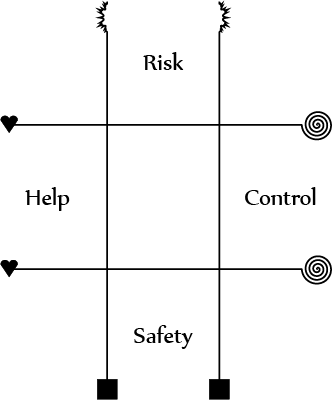

ζ Zeta System
In the world of The Hero Kingdom...
As the sky serpent whipped back and forth, the intrepid adventurers struggled to hang on. The foul necromancer Bacharus laughed at their plight from his throne atop the serpent's head, screeching, "You'll never survive a fight with me! I am the lord of death itself!" The warrior Doruk sighed as he pulled himself up over the massive snake-bird-monster's wings. Scrabbling forward on all fours, he dodged energy blasts from Bacharus' wand and took up as much attention as he could. This allowed the wizard Naraviel, who was barely hanging on as he struggled to work his magic, to complete his spell and grow nimble wings strong enough for flight. Bacharus taunted the warrior, saying, "What do you think you can do to me? Once you get up here, you won't have your magic axe out, and I can make you into a meal for this serpent before you can say--!" The throne was bisected from behind by a slashing wave that erupted from the flying wizard's staff, cleaving the necromancer in two. The serpent seemed relieved and stopped its frenzied writhing, while the warrior finished scrabbling forward. "Aww... Naraviel, did you have to destroy the throne? That would have been worth a load of gold." "Gold isn't everything, Doruk. We still have his wand... and a docile sky serpent. How much do you thing this monster will fetch at market?" Doruk grinned, and said half-laughing, "You know me well. Onward, to the Sky Metropolis Azut!"
In the world of Strangers Among Us...
The Lomuk shaman Muto uttered a strange incantation as his blue fur rustled from an ethereal wind. Shrugging off a flesh wound, Latisha wielded her razor sword and slashed repeatedly at the mechanical creatures that assailed the team, but the robots re-assembled after even a single one fell. After another machine struck her, Latisha angrily yelled out to Muto, "Some magic would be welcome any minute now, you freakin' muppet!" Muto seemed to understand part of the message, and stomped the ground with all 5 of his shaggy alien legs. With an otherworldly moan, a portal appeared, and a single mammoth-like beast emerged, the size of a tank, and ripped through all the machines at once. "Took you long enough..." Latisha muttered, as Muto gestured to hurry away before the beast could finish the robots and follow up by attacking whatever else was in the room. When they were clear of both machine and monster, Muto asked in broken English, "WHAT IS MUPPET?" Latisha couldn't help but smile, and said, "It was a compliment. You did good back there. Now where's that Tassar scumbag who sent those damn machines after us..."
In the world of Terran Space Fleet Alpha...
The Karonov field generator flared back to life aboard the T.S.F. Vigilant Bear, and with it the starship's guns re-acquired their alien targets. The crew cheered Mikhail as he came inside, the valiant engineer who braved the void of space to destroy the pods that had latched onto the hull and disabled their ship. But something wasn't right about Mikhail... He had a blank expression on his face, and something bulged in his space suit. He walked, shuddering faintly, past the adoring throngs, and approached Captain Boris, who had come to congratulate him. Without a word, Mikhail drew his gun and fired at his Captain. "He's been turned!" said a security officer, but before the officer could finish his sentence, Captain Boris had sidestepped the shot, punched Mikhail's suit where it bulged, then struck a brutal blow to the engineer's face, knocking him unconscious instantly. "Deliver this man to the science bay. He remains a hero and we will vanquish this menace from his body." The crew nodded reverently. "Now get back to your posts, the bugmen won't shoot themselves!" The Vigilant Bear swooped back into action to chase the mysterious alien craft, remaining true to the motto on its hull: "Justice is relentless. Earth shall be avenged."
In every world, there is conflict. Who will be crowned a champion, who will be cast out as a villain, and who will simply perish? The world may be new, but the themes are not. Rise up and take control of your destiny!
The Zeta System is a set of rules for tabletop RPGs that can be set in just about any world or time period the group can imagine. Once the Game Master (GM) decides on a setting and tells the players any special rules that setting uses, the players each create one character (a PC, or Player Character) using a freeform design. Characters improve by learning new skills to be used in or out of combat, and getting enough proficiency in a skill or a combination of skills allows you to take new kinds of action called powers. If you are playing as an agile dervish in The Hero Kingdom, you will want to improve your rank in Acrobatics. If you are playing as a wise shaman in Strangers Among Us, you will want to improve your ranks in Focus and Nature. If you are playing as a rough-and-tumble boarder of alien starships in Terran Space Fleet Alpha, you will want to improve your ranks in Athletics and Mechanics, and so on. Weapons don't use skills to determine your level of proficiency in swords, guns, bows, and so forth; instead, you can make a basic attack determined by your stats and the weapon you are using, or alter that attack somewhat with a power. You learn powers as you get better with skills, and some powers can be used very frequently, while others make you lose strength after using them too much (a weakness of most supernatural powers). All weapons are useful in different circumstances, but not many items of any sort are "special." A rare few items are better than others thanks to magic enhancement or the like, but characters throughout all settings using Zeta System primarily get better by improving their skills, not by loading themselves up with every magic item or high-technology prototype they can pilfer or afford.
Primer

Zeta System by Tommy Ettinger is licensed under a Creative Commons Attribution 3.0 Unported License.
In Zeta System games, each setting focuses on different sorts of characters and challenges, but the game rules are largely the same. The same skills exist mostly without changes in most settings, but some especially unusual settings may have no machines (such as a setting based around playing as wild animals), no writing (such as a prehistoric setting), or even no natural areas (such as a pure cyberspace setting); this would remove the Mechanics, Education, and Nature skills from those settings, respectively. Even considering changes to skills, characters are still very similar; they start with 1 to 4 points in each of four stats, and these stats determine their bonuses on skill rolls. The stats are Toughness, Agility, Persona, and Expertise, and they are covered in detail in the next section.
A skill roll is a simple roll of 3d6, meaning three 6-sided dice, plus the relevant stat and your rank in the skill, and is a success if it is at least equal to to a fixed number called a difficulty. Your rank in the skill and the number of successes you roll are the only things that determine how effective a successful roll really is. Most easy tasks have a Success Level of 1, which requires only one success by a character with rank 1 in a skill. More complicated actions, like crafting a magic sword that can slay a Demon Lord, may require a Success Level as high as 50, crafting the sword using the Mechanics skill. Getting to that Success Level would require ten successes by a character with rank 5 in the relevant skill, each roll (success or not) taking time in the game world to accomplish. Plus, any failures could make the task end with bad results, such as breaking the magic sword.
Skill rolls may be modified by a different stat (or even a combination of two stats) based on the specific usage of the skill. For example, the Perception skill requires an Agility roll for sudden, first-impression reactions like spotting a sniper as you turn a street corner, an Expertise roll for in-depth searching through piles of stuff looking for something of value, a Persona roll for detecting when someone is under duress or lying to you, or a Toughness roll for standing watch through the night and remaining aware despite the need to sleep. The Medicine skill allows any character (even one without a rank in Medicine) to choose either Persona or Expertise to treat a simple illness, or choose Toughness or Expertise to deliver first aid. If a character has at least rank 1 in Medicine, they can attempt surgery, adding both Agility (representing manual dexterity) and Expertise (representing how careful and competent the surgeon is) to the skill roll, but that roll must be compared to a high difficulty in exchange for the larger bonus from two stats combined.
When they are created, characters can distribute 10 points to their stats, and 8 ranks to their skills; the maximum you can start at for a stat is 4 and the maximum you can start at for a skill is rank 3, but stats must be at least 1, while skills can be as low as rank 0. As you go up in rank for skills (to a maximum rank of 6), you unlock new powers and uses for skills. Getting to rank 1 in Acrobatics unlocks a power, Defensive Fighting, that lets you take a large penalty to your rolls to hit, but in exchange, you can add your Acrobatics rank to how hard you are to hit (your Dodge). Getting to rank 2 in Acrobatics unlocks a power, Momentum Strike, that lets you make attacks with Acrobatics affecting your damage instead of your physical strength. Some pairs of skills unlock new powers or uses when you reach a rank in both skills; getting to rank 1 in Acrobatics and rank 1 in Influence unlocks a new use for those two skills out of combat, Dance. Some settings may have magic spells, psychic abilities, or superpowers; in those settings you learn such powers by getting better at the Focus skill as you progress through the world. In settings without supernatural abilities (or for characters who choose not to learn them when they are present), Focus is still useful, but that skill does varying things depending on what Domains are available in that setting.
Different settings have different Domains available for skills; these affect what that skill does for characters with that Domain. Domains and Progress Level (which determines what kinds of items are available) are the main way settings are differentiated in the rules. The Hero Kingdom has Arcana (offensive magic), Faith (defensive and supporting magic), and Valor (bravery and risky gambits) as the Domains for Focus. Strangers Among Us has a lot of Domains for Focus, including Arcana, Valor, Augment (powers that utilize cyborg or magical additions to the body), Technology (powers that affect computers and robots, as well as power up weapons to affect living things), Psyche (powers that strongly affect living creatures, but are limited to telekinesis for affecting objects), and Spirit (bridging the gap between the material world and the spirit world, usually to summon aid). Terran Space Fleet Alpha only has Valor and Technology as Domains for Focus if the character is human, but the non-playable aliens in that setting have Psyche available as well. Some Domains, like Technology, affect multiple skills; a character with the Technology Domain learns fewer powers from Focus, but in exchange learns more from Mechanics and Education, and can learn, among other things, to repair robots or hack computers with those two skills. Arcana, in contrast, allows a character to learn slightly more from Education (researching magical writing and disabling magical traps, as a hacker disables an electronic trap), and slightly less from Focus, but does not have any effect on Mechanics (like Technology does). When a GM makes a world, he must decide what Domains are available to characters in that world; several are pre-made in the Domains section.
A character has 4 stats: Toughness, Agility, Persona, and Expertise. They range from 1 to as high as 9 for very powerful characters, and a new character has a maximum of 4 in any one stat. A character's stats can only be improved very rarely, and may not improve at all if the campaign (a series of game sessions) is short.
- Toughness represents your general muscle strength, pain tolerance, and quality of health. It makes you do more and take less physical damage, and makes you harder to kill.
- Agility represents your speed, including your speed of movement, and the speed at which you react to danger. and your precision, including your senses and your fine motor skills. It makes you hit more often and be hit less often for both physical and magical attacks.
- Persona represents how strong your personality is, where a high Persona represents someone who stands out and leads, and a low Persona represents an awkward, unlikeable, or unconvincing person. It lets you inspire allies, frighten enemies, resist magical powers' effects, and ignore fear.
- Expertise represents your general intelligence, wisdom, and creativity. It lets you caution allies, outwit enemies, use potent powers without losing strength, and see through trickery.
All of these effects are covered in the Actions summaries below, except for those that relate to powers, which are covered in the Basics of Powers section.
Character Creation
To create a character, first think of a concept that fits into the setting your GM is using for the game. Then, assign 10 points across the four stats as previously mentioned, with a maximum number of 4 and a minimum of 1. You start with 25 HP (Health Points), plus your Toughness. Next, you go through the list of (usually) 11 skills and assign 8 ranks to the skills you want to be good at, to a maximum of rank 3 at the start. Your GM will have told you what Domains are available, and if you have a rank put into a skill that needs a Domain, you will need to select a Domain from those available in the setting. As you are placing ranks into skills, take note of what powers and uses for skills you unlock; you start with at most 5 powers chosen from those you unlocked, but you gain all skill uses you qualify for. Once you have done this, think about how your character looks, his or her mannerisms, how your character ties into the world, and why he or she is ready to face conflict. These don't all need to be answered right away, but if you figure out an answer you like, you can write it down on your character sheet.
Glossary of Terms
- Action: Something a character does, like attacking or inspiring. You get two actions per turn; one standard and one talk action, with the option to convert either or both to minor actions.
- Adaptation: Your ability to figure out enemies' tricks and avoid being Outwitted. Your Adaptation is 10 + your Expertise.
- Attack: An aggressive attempt to damage an opponent, which can be made with a weapon, bare hands, a natural weapon such as a monster's claws or fangs, or some powers. Attacking with most weapons and some powers is a standard action. Weapon attacks always involve a roll to hit vs. the opponent's Dodge, and those that deal damage can have that damage Soaked. Power attacks depend on the specific power.
- Condition: A loose measure of morale and battlefield control in combat. A character's Condition starts at 0, but can go up if a character is Inspired or Precautioned, or go down if a character is Intimidated or Outwitted. Your condition applies as a modifier to all rolls you make, including skill rolls, rolls to hit, Soak rolls, Willpower rolls, and rolls to change other characters' condition (like rolls to Inspire).
- Courage: Your ability to ignore fear effects and stay calm when foes Frighten you. Your Courage is 10 + your Persona.
- Creature: This is a general term for both people and monsters, and is used to differentiate these from inanimate objects and terrain features. Creatures at least have stats, and usually have skills.
- Damage: Physical injury. Unlike some other games, damage is applied to Health Points rather than "hit" points, meaning you are actually physically harmed by attacks you fail to soak.
- Dodge: Your ability to avoid attacks. Your Dodge is 10 + your Agility, but can be raised by environment conditions (like total darkness), or reduced by carrying or wearing heavy items like armor.
- Mode: Weapons and some powers can have modes, which modify their effects in some way and may be optional or required (e.g. Poles have Reach mode as an option, but Bombs are Burst mode only). The modes are Stun (which simply knocks an enemy unconscious instead of killing them at 0 HP), Burst (which lets one attack hit multiple enemies, but also can harm allies), and Reach (which lets you make a delayed attack that waits until you approach an enemy or until an enemy approaches you).
- Power: Special uses of skills, powers allow a character to do things they normally couldn't do in the rules, and range from simple things like backstabbing an enemy with the Deception power Dirty Fighting, to summoning a guardian from spirit realm with the Focus (Spirit Domain) power Call The Great Beast.
- Reserves: A measure of a character's depth of experience, usually as it relates to his or her Domain. Using especially potent powers causes characters to lose their Reserves, and when Reserves drops to 0, those powers start weakening the character when used (reducing their Condition). Your Reserves have a maximum equal to your Expertise, and start every encounter at that maximum. They can be restored through the Focus skill (regardless of your Domain), and come back to their starting number after an encounter.
- Skill: A key part of Zeta System, skills are the different kinds of thing a character can be good at. The skills in most settings are Acrobatics, Athletics, Deception, Education, Focus, Influence, Mechanics, Medicine, Nature, Perception, and Stealth.
- Soak: Reduction of physical damage, including from weapons, environmental effects, and some supernatural powers. A Soak roll starts with 3d6 + your Toughness. Soak rolls are improved by armor.
- Stats: The four stats, Toughness, Agility, Persona, and Expertise (abbreviated TAPE), define the core of who your character is. Most die rolls add one stat to the result and need to meet a fixed number to succeed.
- Willpower: Reduction of non-physical effects, including mind control and transformation powers. A Willpower roll is 3d6 + your Persona, but can suffer a penalty caused by some items, like those that carry a curse.
Tactics Grid System
 Each major character (such as a PC) or each group of minor characters (such as a cluster of evil zombies) has a playing piece on a sheet of paper called a tactics grid. The position of a character's piece on the grid shows what kind of tactic they favor that round, and grants bonuses and penalties for actions that relate to that tactic. There may be multiple tactics grids on different sheets of paper if a fight takes place in different zones (one zone represents a room or hallway, usually), with each zone a separate grid, but characters can move between zones/grids without difficulty. A tactics grid is a 3-by-3 set of boxes (much like the one used in Tic-Tac-Toe) with the top, bottom, left, and right edges marked with different ways of approaching combat. The tactics grid has three rows, the top one marked Risk and representing reckless or risky tactics, the bottom one marked Safety and representing stealthy or careful tactics, and the middle one representing tactics that lie between the other two, such as shooting from around a corner or blocking and parrying with a sword. There are three columns, the left one marked Help and representing supportive or leading tactics, the right one marked Control and representing manipulative or frightening tactics, and the center one representing tactics that avoid influence from enemies.
The GM describes what zones are present and what they mean when a fight begins, and also states which zone or zones the PCs start in. You put a playing piece representing your character on any square in your starting zone when combat begins, and don't move it until you take your turn (you can change square on the same grid at the start of each of your turns, but can't change which grid you are on without spending an action). The position of your playing piece determines what actions you get bonuses or penalties on and which actions have bonuses or penalties when used against you. If a fight has more than one zone, you can spend a minor action (giving up your talk or standard action that turn) to move your playing piece to any box on any grid. Movement is important because you need to be on the same grid as your target to attack in melee, but ranged attacks are more difficult to make against enemies on the same grid. Some actions are affected by row (whether a piece is closer to Risk or Safety), while others are affected by column (how close a piece is to Help or Control).
Appeal Grid System
The same sheet of paper used for the tactics grid can also be used for social encounters, adapting the kinds of tactics in combat to the kinds of appeal that can be made in a discussion. This means that you place a playing piece on the grid to say whether you are trying to get someone to take a Risk, seek Safety or do something that falls in the middle ground. The piece's position also explains the reason you give them to do this, such as to Help others, to Control others, or somewhere in-between. In an encounter with a group of young goblins breaking windows, you could appeal to the rowdy vandals' Risk (implying a reward for going into danger) to get them to start a riot elsewhere and let you avoid a fight, or whether you choose to appeal to the hungry kids' desire for Safety and buy them food, so that you can start a dialogue with them and get the lay of the land. At the same time, you can describe another aspect to your Appeal. In a talk with a security guard, this other aspect could be whether you are trying to appeal to the guard desire to Help people, or his desire to be in Control and have power. Like with Risk and Safety, every individual will react to different Appeals differently. A pompous official in an authoritarian empire will probably not try to Help citizens if asked, but will care about his Safety and his level of Control. On the other hand, a guard in a small, sleepy town may want to Help citizens, but he could be too humble to desire Control over others, and might even take an Appeal to Control as an insult. There are too many kinds of appeal to cover on a 3x3 grid, so each of the four Appeals actually covers a wider scope than the name implies on its own.
- Risk covers all kinds of self-destructive behavior, whether this is someone getting into a fight, or a criminal turning himself into police (which is almost always the top left box, Help/Risk, because doing something that harms yourself falls under Risk even if it helps people).
- Safety covers all kinds of personal comfort, such as wealth, companionship, material possessions, and of course freedom from danger. Seducing or bribing someone is an appeal to Safety.
- Help covers obeying reason, loyalty, and "doing the right thing", but from the perspective of the NPC being convinced. "Help" for an evil orc means helping others in his group, not anyone else.
- Control covers negative emotions that may or may not be self-destructive; telling someone to go scare some theives out of town is an appeal to Risk and Control (top right), but telling a mob boss, "I'll do anything," to survive is an Appeal to Safety and Control (bottom right), where the control is over you.
In a social encounter, an NPC needs a certain Persuasion Number(PN) to do what you want, raised by Appeals made of the right kind and reduced by Appeals of the wrong kind. Put a playing piece on the Appeals Grid to show what you are Appealing to that round, and put a counter down on that box when the round ends. Good role-playing may count as a good Appeal if the GM thinks it fits. The GM tracks the progress toward the PN, but you fail a social encounter if you use the wrong kinds of appeals too often, and this may start a fight or force the PCs to find another path. NPCs will often have transitions where if a particular Appeal is used or something is mentioned, their behavior changes, like repeating a deceased friend's wishes to cause someone to rethink his life. The Influence and Deception skills have different uses for PCs and NPCs in social encounters, but can be vital to success in some such encounters; see the descriptions for those skills for more information.
An example NPC in a social encounter might be: Jim the Border Guard, PN 4 succeeds (lets you cross), -3 PN fails (attacks), Safety +1, Help +1, Risk -1. Giving a bribe ends in success unless Jim has negative PN, then it ends in failure. Failing to give a legal, reasonable answer for why you want to pass causes a transition: PN 5 succeeds, -2 PN fails, Safety +1, Control +1, Risk -2. Bribes are still effective post-transition, but cost more.
Actions
- (Standard) Attack: You attack an enemy using a weapon at hand. If you are using a melee weapon, choose an enemy in the same zone as you; if your weapon is ranged, the enemy can be in any zone. Next, roll 3d6, adding your Agility and any modifiers from your weapon. Add all of the following that apply: +2 if you are in the top row (marked Risk), +2 if your target is in the top row, -2 if you are in the bottom row (marked Safety), -2 if your target is in the bottom row, and -2 if you are using a ranged weapon and your target is on the same zone as you. If the result at least equals the enemy's Dodge (10 plus their Agility and any modifiers from the environment or the target's armor), you can deal damage, reducing the target's Health. All weapons deal fixed base damage, plus the attacker's Toughness. The target always Soaks some damage. To Soak damage you took, roll 3d6 and add your Toughness plus any bonuses from armor, and reduce the damage you receive by the result (minimum 0).
- (Standard) Sneak: You get out of harm's way and may become difficult to find. Roll 3d6, adding your Agility and rank in Stealth. Add +2 if you are in the bottom row, or -2 if you are in the top row. If the result is at least 13, write the total result down on some scratch paper; this is your Concealment Score (CS), and until an enemy Detects you (see below) and gets a result that at least equals your CS, you are Hidden. While Hidden, you cannot be directly targeted (by allies or enemies) until you take any action, at which point you lose (cross out) your CS. Burst attacks and other abilities that affect everyone in a zone (or everyone in the encounter) can still affect you while Hidden, but do not reduce your CS.
- (Minor) Detect: You probe for hidden enemies. Roll 3d6, adding your Expertise and rank in Perception. Add +2 if you are in the top row, or -2 if you are in the bottom row. If the result at least equals the Concealment Score (CS) of an enemy, each enemy whose CS is beaten by your result is noticed, and those enemies have their Scores crossed off. Those enemies are no longer Hidden, and can be targeted by anyone.
- (Minor) Recover: You try to recover your composure and regain your bearings. Roll 3d6 and add your Toughness and rank in Focus or Athletics. If you are in the center column (between Help and Control), add 2. If the result is 13 or higher, you gain 1 condition, to a maximum of 0. If the result is 18 or higher, you gain 2 condition, to a maximum of 1.
- (Talk) Inspire: You try to convince an ally to overcome fear and attack fiercely. Roll 3d6 and add your Persona and rank in Influence or Deception. If you are in the left column (marked Help), add 2. If the result is 13 or higher, an ally in any row but the bottom gains 1 condition. If the result is 18 or higher, all allies in any row but the bottom gains 1 condition.
- (Talk) Frighten: You try to strike fear into an enemy and discourage them from boldly attacking. Choose an enemy in any row but the bottom and roll 3d6, adding your Persona and your rank in Influence. Instead of Influence, you can use your rank in Deception against intelligent creatures or your rank in Nature against animals or unintelligent monsters. If you are in the right column (marked Control), add 2; if your target is in the center column (between Help and Control), subtract 2. If the result at least equals the enemy's Courage, which is 10 plus their Persona, the enemy loses 1 condition.
- (Talk) Caution: You try to support one of your allies by warning them of incoming danger. Roll 3d6, adding your Expertise and your rank in Education or Medicine. If you are in the left column (marked Help), add 2. If the result is 13 or higher, an ally in any row but the top gains 1 condition. If the result is 18 or higher, all allies in any row but the top gains 1 condition.
- (Talk) Outwit: You try to confuse an enemy while blocking their escape routes. Choose an enemy in any row but the top and roll 3d6, adding your Expertise and your rank in Education or Deception. If you are in the right column (marked Control), add 2; if your target is in the center column (between Help and Control), subtract 2. If the result at least equals the enemy's Adaptation, which is 10 plus their Expertise, the enemy loses 1 condition.
Skill Uses
There are 11 skills in most settings, and each skill has 4 uses that usually don't need to be unlocked. Some skill uses are marked as trained-only; these are unlocked once you have even a single rank in that skill. Each use has an associated stat, choice of stats, or combination of stats. These are given in square brackets after the name of the skill use.
- Acrobatics: Your Acrobatics rank determines how nimble you are, your reflexes, and your ability to escape danger caused by other creatures.
- Catch [Agility]: You can catch a thrown or falling object before it hits the ground or its target. Catch difficulties vary widely from moderate to very high (10-18), depending on the speed and weight of the object. Failing a catch roll means the object continues on its path, which could mean it hits you, breaks on the ground, or hits or is caught by an ally or enemy. A Catch roll is made as a reaction, but regardless of success or failure, rolling takes away one action (standard or talk, your choice) on your next turn.
- Escape [Agility]: You can wriggle free of restraints, entangling webs or vines, or an enemy who is grappling you (using the rank 1 Athletics power Wrestler or several other powers). Escape difficulties vary depending on what you are trying to free yourself from, and range from very low (4-6) for escaping a small web or a few vines, to very high (16-18) for escaping high-quality handcuffs. Difficulties for escaping grapplers are determined by the attacker and the power they are using. Failing an Escape roll has no penalty other than wasting time, but trying to break free from restraints while your captor is watching may be a bad time to fail. An Escape roll is made as a minor action, but the Success Level needed may be high, especially for escaping things designed to restrain, like handcuffs.
- Reflex [Agility]: You can stop yourself before you risk falling, jump out of the way of traps, and avoid collisions on foot or in vehicles. Reflex difficulties are usually low to moderate (7-12) for avoiding falls or collisions or high (13-15) for avoiding traps, but minor NPCs usually fail Reflex rolls for dramatic effect. Failing a Reflex roll to stop yourself from falling means you fall off the ledge, but if an ally is nearby they can make their own Reflex roll against a high difficulty (13-15) to grab you. If the ally fails that roll, they do not fall, but you do. Failing a Reflex roll to avoid a trap means you take the full effect of the trap. Failing a Reflex roll to avoid a collision means you or the vehicle you are steering takes damage (how much damage is up to the GM, but vehicle-to-vehicle collisions can be minor fender-benders or can kill everyone in a car) A Reflex roll is made as part of movement, in reation to a trap going off, or in reaction to getting close to falling or colliding.
- Tumble [Agility]: You can roll and sidestep to protect yourself from short falls and avoid attacks from enemies with Reach-mode weapons. Tumble difficulties are usually moderate (10-12) for avoiding falls, and you compare your Tumble roll to the opponent's attack roll (Tumbler wins ties) to see if you avoid a Reach-mode attack. Failing a Tumble roll means you suffer the normal effects of the fall or attack. A Tumble roll is made as a standard action that includes movement between two zones.
- Athletics: Your Athletics rank determines how good your physical endurance is and your ability to move past environmental obstacles like water or cliffs.
- Climb [Toughness]: You can climb up a rope, a rough natural surface, or some artificial fences or walls made of textured materials like brick. Climb difficulties are usually low to moderate (7-12) for natural surfaces or ropes, and traversing small distances this way usually needs a Success Level of 0 (any success means you have climbed the distance, even without a rank in Athletics). Artificial surfaces are more challenging, and have moderate to high Climb difficulties (10-15), with sheer surfaces needing Success Levels of 3 or more (requiring at least one rank in Athletics to attempt). Failing a Climb roll means you fall, which might not be bad for a fence, but could be very bad for a cliff. A Climb roll is made as a standard action that includes movement, which can be between two zones.
- Endure [Toughness]: You can keep up physical activity for long periods of time in strenuous conditions, or use challenging skills while impaired by poison, drugs, or disease. Endure difficulties for activity in harsh conditions are usually low (7-9), but rise with no limit if the exertion and/or strenuous conditions continue. A living creature simply can't drag a cart day and night for a week without stopping for sleep, food, and water. Endure difficulties for using a skill while impaired are based on the nature of the impairment, and range from low (7-9) for a few beers to very high (16-18) for an agonizing poison like being covered in jellyfish stings. Failing an Endure roll for activity forces you to stop at some point during your task, and you cannot continue until you rest and gain some kind of sustenance. Failing an Endure roll to resist impairment on a skill means you automatically fail the associated skill roll. An Endure roll for activity is made as part of a long-term event; for immediate resistance of sudden trauma, the Resist Pain use of Focus is used instead. An Endure roll for impairment is made as part of another skill's usage while you are impeded. Some settings have species like robots or vampires that do not need to make Endure rolls for the normal reasons, but may be forced to make them in unusual circumstances (going without maintenance for robots, or taking actions in bright sunlight for some kinds of vampires).
- Jump [Toughness and Agility]: You can jump over obstacles or across gaps without hurting yourself or falling. Jump difficulties are usually low to moderate (7-12), but you risk serious damage from falling on even a single failure, However, you can always make an Acrobatics roll to Balance if you do fail, and a failure on Jump but a success on Balance still gets you across a gap, clinging to the edge. A Jump roll is made as a standard action that includes movement, which can be between two zones.
- Swim [Toughness and Agility]: You can swim through rough water and resist strong currents and waves. Swim difficulties are usually low (7-9), but swimming long distances or swimming while carrying heavy equipment demands Endure rolls as well, at moderate difficulty (10-12). Failing a Swim roll or an Endure roll while swimming means you sink and may drown if not quickly rescued. A Swim roll is made as part of a minor action to move between zones, or as part of a long-term event.
- Deception: Your Deception rank determines how tricky you are, how good you are at sleight of hand, and your ability to create disguises and forgeries.
- Bluff [Persona]: You can lie convincingly. Bluff rolls are always opposed by the Insight use of Perception, with the user of Bluff winning ties. Trying to tell particularly bold lies imposes a penalty on Bluff, and weaving especially appealing fictions grants a bonus. Bluff cannot be used to bypass automated security systems, but the Forgery use of Deception can. Failing a Bluff roll against a specific NPC means they don't believe you, and if you are using the Appeals Grid, that NPC's Progress Number is reduced. A Bluff roll is made as part of normal speech, and does not take an action.
- Disguise [Persona]: You can fashion a false appearance for yourself or someone else. Disguise difficulties are usually moderate to high (10-15), depending on how elaborate the disguise is, and on a success, take the result you got, add your rank in Deception, and write it down. If an examiner is familiar with the disguised person, they can make a roll for the Insight use of Perception, with a difficulty equal to the result written down by the disguiser (examiner wins ties), to recognize the person beneath the disguise. Failing a Disguise roll results in an obvious mistake, and taking off the disguise and starting over requires more time. A Disguise roll cannot be done during combat, and takes between 1 and 2 hours, minus about 10 minutes per rank in Deception. If you don't have that much time, hoods and cloaks can conceal at least part of your appearance, though they won't stand up to scrutiny.
- Forgery [Expertise]: You can create false paperwork or electronic facsimiles that stand up to close inspection by bureaucrats or machines. Forgery difficulties are usually high to very high (13-18), but characters with ranks in Deception know when they have failed or succeeded and can try again. Creating forgeries requires the right materials, but these forger's kits are usually illegal to possess or sell. You must meet a fairly high Success Level for most forgeries (around 15 for paperwork or 20 for electronics). Failing a Forgery roll repeatedly may force you to buy a new forger's kit to replace ruined ink or ID cards. A Forgery roll takes about 2 hours, and many must be made to complete even one successful Forgery. If you cannot create a forgery in the time you have, the other options include bribery, impersonation, and charming the people behind the desk.
- Legerdemain [Agility]: You can perform tricks of sleight-of-hand, hiding objects on your person and using "magic tricks" based on fooling the viewers. Legerdemain difficulties are usually high (13-15), but these tasks can be practiced if you have time to prepare, guaranteeing the dice roll before modifiers equals 10. If you successfully hide an item on your person, it cannot be noticed unless you are directly inspected by someone with at least as many ranks in Perception as you have ranks in Deception. If you succeed on multiple magic tricks, you can earn money as a street performer or get a job as a stage magician if your Deception rank is at least 2. Failing a Legerdemain roll to hide an item exposes what you had hidden, which can be very bad if that item was stolen. Failing a Legerdemain roll for a magic trick is unimpressive to an audience, and may cause you to lose a job if you keep failing. A Legerdemain roll to hide an item takes a minor action to hide and a minor action to bring out the hidden item. A magic trick can take any amount of time, depending on the trick. Practicing takes roughly 10 minutes per trick or item you intend to hide, and must be carried out on the day you use Legerdemain, since you will forget the delicate motions quickly.
- Education: Your Education rank determines how well-read you are, your understanding of complex science, and your ability to comprehend foreign languages.
- Decipher [Expertise]: You can figure out foreign or extinct languages with the help of a translation book or library, create coded texts that you know how to break, or crack codes and some puzzles using your wits alone. Decipher difficulties are usually high (13-15), but a translation book or a library can grant between +2 and +6 on rolls to figure out written languages (but not codes). Creating a coded text has a very high difficulty (16-18), but no penalty for failure other than wasted time; the result you reach on a success, plus your rank in Education, should be written down. Cracking codes has a difficulty equal to the total result of the person who created the code (what that person wrote down on a success), and these rolls can be made easier by using computers or almost any kind of magic powers (effectively, having almost any Domain other than Valor provides a +1 to +4 bonus if you have the right equipment). Failing a Decipher roll simply means you make no progress. A Decipher roll takes 8 hours, minus 1 hour per Rank you have in Education; this time does not need to be consecutive, and at most 12 hours can be devoted to Decipher rolls in a day.
- Override Device [Expertise (trained only)]: You can make a complex device do what you want rather than its intended function. This defaults to Overriding mechanical devices, but having a Domain can add features to this (such as Overriding magic items to be more effective, or the very common use of Overriding a computer by hacking it). For the default, Override Device difficulties are usually high (13-15), and require decent Success Levels (ranging from 3-10) to disable or enable triggers for complex machines. Failing an Override Device roll makes the device's security measures activate, if it has any; this can be a trap going off on the person trying to disable it, or a computer (if you have the Technology Domain) trying to log you out and notifying a system administrator of the breach. Making an Override Device check takes 8 minor actions, minus 1 action per rank you have in Education, and requires a Security Kit for usage without a Domain.
- Research [Expertise]: You can go through archives or libraries to learn facts about people, places, or objects, but only if the thing you are researching is or was notable (someone needs to have taken the time to write about the thing). In settings with magical creatures, this lets you learn the strengths and weaknesses of unnatural and otherworldly creatures; natural animals and plants are covered by the Wild Lore use of the Nature skill. Research difficulties range from moderate to high (10-15) depending on how obscure the subject is. Your rank in Education determines how many facts you learn about the subject, one fact per rank, plus very basic information on any success. For example, if John makes a Research roll with 2 ranks in Education, and he succeeds trying to learn about Arpakekh of Orenycia, he learns the basic fact that Arpakekh was a king who ruled Orenycia thousands of years ago. In addition, he learns 2 specialized facts for his ranks in Education: Arpakekh was called a sorcerer in ancient myths, and though his tomb was recently discovered with a wealth of possessions, his body and ceremonial staff were missing. Making a Research roll takes 8 hours, which do not need to be consecutive, and requires a library, access to a large computer network (like the modern Internet), or magic powers (if magic can be used with predictable, safe results in the setting).
- Write [Persona or Expertise]: You can write persuasively or formally, and take notes effectively. Write difficulties are usually low (7-9), and have low Success Levels (1-3) for note-taking, but high Success Levels (10-30) for even the shortest books or legal documents. Failing a Write roll means you make no progress. A Write roll to take notes is a minor action, but a roll to Write documents or books takes about 80 hours (10 days if you do things other than write and rest), minus 10 hours per rank in Education.
- Focus (needs Domain): Your Focus rank determines your ability to concentrate and ignore pain, as well as being key to using powers from your Domain.
- Comprehend Paranormal [Persona (trained only)]: You can figure out what spirits, omens, and otherworldly phenomena mean, instead of just being confused or terrified by them. Comprehend Paranormal difficulties are usually high (13-15), and require moderate Success Levels (4-7). Failing a Comprehend Paranormal roll to understand a phenomenon caused by an intelligent creature allows that creature (even if it only exists as a spirit) to make a Frighten roll against you every round until you escape the area or succeed at least once on a Comprehend Paranormal roll. Unintelligent sources to a paranormal phenomenon make one Frighten roll with a +0 bonus against you each time you fail. A Comprehend Paranormal roll is a talk action.
- Concentrate [Toughness]: You can keep your attention on a task despite distractions or imminent danger. Concentrate difficulties can range from low to high (7-15) depending on how loud, threatening, frightening, or otherwise attention-grabbing the distractions are in your situation. You only make Concentrate rolls as part of another skill roll, usually one that takes multiple actions. Failing a Concentrate roll means you must stop performing the task until you succeed on a different Concentrate roll. A Concentrate roll is made as a reaction to a distraction, is required no more than once per round, and does not require an action of its own.
- Resist Pain [Toughness]: You can keep performing a challenging action in combat after being interrupted by damage or pain. Resist Pain difficulties are usually low (7-9), but every point of damage you take (and that you fail to soak) in one round increases the difficulty of your next roll by 1. Failing a Resist Pain roll means you fail at whatever action you were doing before the interruption. A Resist Pain roll is made as part of your skill roll for another action that has not been completed yet, often a power that takes multiple turns to perform.
- Restore [Toughness (trained only)]: You can restore some of your mystical power or gain a flash of insight. Restore is used to get back some of your Reserves for your Domain, returning a number of points to your Reserves equal to your rank in Focus with each successful roll. Restore difficulties are always set at 15 (high). Failing a Restore roll simply wastes time, and has no other penalty for failure. A Restore roll is a standard action.
- Influence: Your Influence rank determines how good you are at manipulating the emotions of others, whether it is scaring them or charming them.
- Bargain [Persona]: You can convince someone to sell you an item for less than they offered, or add in something extra to the sale. Bargain difficulties are usually moderate (10-12), unless the seller expects you to Bargain (generally because it's a cultural norm for them), in which case the difficulties are usually low (7-9). Success Levels for Bargain checks vary from 3 to 10, and are usually lower if the seller is busy or expects at least cursory Bargaining. You can tell if you are culturally expected to Bargain by simply observing other buyers. If you are expected to but do not try to Bargain, not only will you pay more, but the seller may be insulted by your lack of attention paid to their wares, and refuse to keep selling items to you. Failing a Bargain roll means you pay full price. Your rank in Influence determines how much you can shave off the price, typically about 10% for succeeding plus an extra 10% off per rank. A Bargain roll takes 1 minute.
- Befriend [Persona]: You can charm or seduce an NPC, or an NPC can make a PC reluctant to harm them. Befriend difficulties are usually equal to the Adaptation of the character being Befriended, but the rolls are always made in secret by the GM, and may involve significant situational modifiers. Failing a Befriend roll means the character shows no improvement in attitude toward you during this encounter. If you beat a moderate Success Level (6-10), an NPC will become friendly (though most will not go into combat alongside you unless they wanted a fight anyway), or a PC will suffer a penalty on all rolls that would harm the NPC who Befriended him (the penalty is equal to the NPC's rank in Influence). A Befriend roll takes a variable amount of time, but usually one can be made in each rest period where you see the character. Rolls in combat are possible, but usually only to clear up misunderstandings or stop a fight; a Befriend roll in combat takes a talk action and always ends in failure if you or your allies attack the target character.
- Handle Bureaucracy [Persona or Expertise]: You can cut through red tape and get bureaucrats to do what you want. Handle Bureaucracy difficulties are usually moderate (10-12), but particularly heartless systems of law (like governments run by some robots or undead) will have higher difficulties. Failing a Handle Bureaucracy roll means you cannot take shortcuts or bypass any legal slowdown, though an ally can make a check for you if you fail. A Handle Bureaucracy roll takes 1 minute, and can be made once per day. On a success it reduces the time it takes to handle your request by up to 2 hours per rank in Influence.
- Intimidate [Toughness or Persona]: You can frighten people with varying degrees of subtlety to get them to obey you, even if they don't like you. An NPC who is Intimidated will do what he or she is told for now, but may betray you later; a PC who is Intimidated suffers a heavy penalty (twice the Intimidator's rank in Influence) on all rolls to perform a specific course of action they were commanded not to do. Intimidate difficulties are usually equal to the Courage of the character being Intimidated, but the rolls are always made in secret by the GM, and may involve significant situational modifiers. If you beat a moderate Success Level (6-10), the targeted character is Intimidated. Failing an Intimidate roll means you won't be taken seriously, and the target character cannot be Intimidated by you during this encounter. An Intimidate roll made in combat uses the Frighten action, not this skill, but a roll made out of combat takes less than a minute.
- Mechanics: Your Mechanics rank determines your knack with machines and knowledge of crafting, including fixing objects and using them in unintended ways.
- Craft [Expertise]: You can create new items or repair broken ones using raw materials. Craft difficulties for creating items range from moderate to high (10-15), depending on complexity, and the Success Level needed for that task can be anywhere from 0 to 50, depending on the item's quality. The difficulty for repairing an item is usually low (7-9), and requires a Success Level at most half of the Level needed to create the item. Failing a Craft roll (for either purpose) means you consume raw materials but make no progress. A Craft roll takes 10 days, minus 1 day per rank in Mechanics, and uses 1 unit of raw materials (which can vary widely in price) regardless of success or failure.
- Demolish [Expertise (trained only)]: You can destroy or damage structures and large vehicles with explosives. Demolish difficulties are usually high (13-15), and extremely large buildings or vehicles may require Success Levels as high as 50, or even be impossible to destroy completely with one series of rolls. Failing a Demolish roll means the explosive charge doesn't go off or damages the wrong part of the target. Demolish rolls are made in secret by the GM, but when the explosives are detonated, the GM informs the players if they met the Success Level and the effects on the target. Perception rolls (using Search) can be made to discover when failures have occured before detonation. Most professionals work in teams to ensure they spot when a charge is misplaced, but this takes much longer to do well. A Demolish roll takes 1 minute and uses 1 explosive charge, which will be destroyed upon detonation; laying or detonating explosives requires a tool kit.
- Fine Tune [Agility (trained only) and Expertise (trained only)]: You can tweak a non-electronic machine slightly, like picking a lock or calibrating some rifle scopes. The difference between this use of Mechanics and the Override Device use of Education is that Fine Tune applies to machines with no security measures, and Override Device (with no Domain) applies to more complex machines that punish people who fail to Override them; some tasks (like cracking a safe) may require a person to make both uses. Fine Tune difficulties depend on whether the machine is intended to be difficult to alter (like a lock) or just requires fine manipulation (like tuning a guitar). For items like locks, difficulties depend on the Success Level of the item's creator; usually they start at 10, plus 1/5 the creator's Success Level (rounded down), to a maximum of 18. The Success Level to bypass a lock-like item is the same as the Level its creator met. For items like scopes or guitars, difficulties are usually low (7-9), with only one success needed. Failing a Fine Tune roll only wastes time. A Fine Tune roll takes 1 minor action for items designed to be tuned or calibrated. It takes 1 minute to make a Fine Tune roll to bypass items like locks, and requires a security kit to meet Success Levels higher than 10.
- Jury Rig [Toughness or Agility]: You can quickly smack a malfunctioning device and, with some duct tape, get it back in working order for a short time. Jury Rig difficulties are typically moderate (10-12). Succeeding on a Jury Rig roll gets the device working for 1 minute, plus 1 minute per rank in Mechanics you have. Failing a Jury Rig roll breaks the device further, and requires extensive repairs from the Craft use of Mechanics. A Jury Rig roll is a standard action.
- Medicine: Your Medicine rank determines your ability to heal the wounds of others with first aid or surgery, plus your knowledge of medications and illnesses.
- First Aid [Toughness or Expertise]: You can administer emergency medical treatments even in battle. First Aid difficulties are usually high (13-15). Succeeding on a First Aid roll restores 1 HP to an injured patient, plus 1 HP per rank you have in Medicine, and if the patient is unconscious this ensures they won't bleed out or otherwise die from their wounds (but they stay knocked out). Failing a First Aid roll causes the patient to lose 1 HP. A First Aid roll takes a standard action and can be made at most once per hour (no matter how many people can perform First Aid) on any given target.
- Pharmacology [Expertise (trained only)]: You can identify and administer chemical medicines, and in settings with magic, you can identify potions or similar restoratives. Pharmacology difficulties are usually high (13-15). Succeeding on a Pharmacology roll lets you identify a chemical or potion you have on hand (which gives you whatever information you want about that substance), or figure out which is the right treatment for an ongoing illness (which gives +5 on all Treat Illness or Surgery rolls you make to help one character until they are healed). Failing a Pharmacology roll means you fail to identify a substance (you have no idea what it does) or incorrectly understand some part of the treatment for an illness (which imposes a -2 penalty on the next Treat Illness or Surgery roll you make to help a character). A Pharmacology roll takes 10 minutes, can be made once per patient or substance, and usually requires medical texts, access to a large computer network, or for potions, magic from the same Domain as the one that created the restorative.
- Surgery [Agility (trained only) + Expertise (trained only)]: You can perform surgery on badly wounded characters, and can install prostheses or cybernetics in settings where those are available. Surgery difficulties are usually very high (16-18), but you can add both Agility (for your manual dexterity) and Expertise (for your caution and knowledge) to the roll. Succeeding on a Surgery roll restores 10 hp to an injured target, plus 5 hp per rank you have in Medicine; it can ensure a character who is near death can recover, but those characters are treated as having -20 HP, and will probably die if not brought to more than 0 HP in one surgery. Failing a Surgery roll causes the patient to lose 1d6 HP, and repeated failures may result in death or an amputation if the patient is brought to 0 or less HP (GM's call). A Surgery roll takes 4 hours, minus half an hour per rank in Medicine, and requires specialized tools and medicines that usually can only be found in a hospital or (in a pinch) an ambulance.
- Treat Illness [Persona or Expertise]: You can treat diseases, poisons, mental illnesses, and in settings with magic, long-lasting curses. Treat Illness difficulties are usually moderate (10-12). Succeeding on a Treat Illness roll means the illness does not have any effect for one day; if a Success Level determined by the illness is met (usually 5-10), the illness is removed. Failing a Treat Illness roll means the illness has its usual effects that day unless another character makes the roll. A Treat Illness roll takes 1 hour, and requires minimal materials (a kitchen can be enough to treat some illnesses with household remedies, and less-severe mental illnesses can be treated with just words). Severe maladies like cancer, radiation poisoning, and schizophrenia can be staved off with this skill only if Pharmacology is used to give medication to the patient, and the difficulty goes to very high (16-18).
- Nature: Your Nature rank determines your familiarity with the wilderness and its animal inhabitants, including your ability to forage and track prey in the wild.
- Handle Animal [Persona]: You can convince animals to obey you, tame wild beasts, or direct a domesticated creature's actions. Handle Animal difficulties are usually low (7-9) for domesticated animals, moderate (10-12) for feral or half-wild animals, or high (13-15) for truly wild animals; the difficulty goes up by 3 in combat or when taming an animal. Succeeding on a Handle Animal roll to direct lets you issue one order to a domesticated animal. A success on a roll to convince gets a small number of animals (even wild ones) to avoid combat with you unless attacked. A success on a roll to tame brings a wild or feral animal one step closer to domesticated, and if it becomes domesticated, an adult animal will faithfully obey you while you stay in its territory, or an animal reared from infancy will follow you as its master. Failing a Handle Animal roll means the animal ignores your words and obeys its instincts, typically going into fight-or-flight mode in combat. A Handle Animal roll to convince or direct is a Talk action, but a roll to tame takes an hour a day, which must be spent with the animal, for a month.
- Survival [Toughness]: You can forage for food and hunt prey animals in the wild. Survival difficulties are usually moderate to high (10-15), depending on how common animals and edible plants are in your environment (a farm is probably 10, a desert is probably 15, and places without wildlife, like the surface of Mars or the South Pole, are impossible). Succeeding on a Survival roll provides enough food for a number of people or animals equal to 1 + your rank in Nature, for that day. Failing a Survival roll means you do not find enough food for that day (and in deserts, not enough water either), and if you continue to fail the rolls you can begin to starve or suffer the effects of dehydration. A Survival roll takes 2 hours, or sometimes much more if you need to find water. Settings with very different non-human species, like the Tassar and Lomuk from Strangers Among Us, may use different rules for what those species need to survive. In that setting, Tassar do not feed, but do not heal naturally either. Lomuk subsist on primordial spirits that can be found everywhere in the Spirit World, so they always have difficulty 10 for Survival rolls; this also means they need to enter a sleep-like trance daily to access that World, and need to make Survival checks to get fed (they can't eat normal food).
- Track [Agility (trained only)]: You can follow the trail other creatures leave in the wilderness. Track difficulties are usually high to very high (13-18), depending on the conditions (rain washes away trails, but a forest might be easier to notice broken branches and other signs in than a stony cave). Track usually requires a Success Level based on how much of a head start the creature you are tracking has; usually this is 3-10, and reaching the Level means you can at least see or hear the creature. Failing a Track roll means you lose the trail and your next Track roll is at a -1 penalty. A Track roll is made as part of travel, and slows your travel speed by 50%, improved by 5% per rank in Nature you have.
- Wild Lore [Expertise]: You can identify natural creatures, plants, and environmental features, and can tell when the natural state has been disrupted in some way. Wild Lore difficulties can be low to high (7-15), depending on how well-known the natural creature or feature is, and your familiarity with the area; the roll is made in secret by the GM. Success on a Wild Lore roll tells you whether the creature or feature is dangerous and/or useful (such as the effects of an herb or a frog's poison), and some general facts about the thing and its place in the ecosystem. If the ecosystem is being disrupted by magic, pollution, or invasive species (which could be monsters in some settings), any successful Wild Lore rolls will tell you that something is wrong and a general clue to what it could be, but it will take some investigation to find out more. Failing a Wild Lore roll tells you nothing, and if you have no ranks in Nature, you get some amount of false information. A Wild Lore roll is made as a reaction when you first see a wild creature or take a close look at a plant or natural feature.
- Perception: Your Perception rank determines your general awareness of your surroundings, a very important attribute for characters in dangerous places.
- Insight [Persona]: You can figure out when someone is being untruthful, and can get a gut feeling when something is about to go wrong. Insight difficulties depend entirely on the situation, and can be anywhere from very low to very high (4-18 or more); the rolls are made in secret by the GM. An example of a low Insight difficulty is when someone lies to you with a bad roll, a low Persona, and no ranks in Deception -- which could result in a difficulty as low as 4, though the deceiver wins ties (see the Bluff use of Deception). A very high difficulty (or higher) could result from a talented con artist lying to you -- with a good roll, a high Persona and multiple ranks in Deception, the scammer could get a difficulty higher than 20 easily (and he wins ties). Getting a gut feeling is usually a high difficulty (13-15). Succeeding on an Insight roll gives you one simple piece of information, such as, "He's lying," "That wall is an illusion," or, "This place is dangerous." Failing an Insight roll means you find a liar convincing or get no particular information from your gut. An Insight roll is made as a reaction to someone being tricky or whenever the players are having a hard time finding their goal; this use is never rolled intentionally by a player.
- Search [Expertise]: You can actively look for hidden items, traps, valuable objects, or interesting information, and can mentally sort through clutter easily. Search difficulties are usually moderate to very high (10-18), depending on how well-concealed the item is, and unlike other uses of Perception, these rolls are made by players when PCs Search. Succeeding on a Search roll discovers one hidden or hard-to-find thing, and multiple successful attempts will turn up more concealed things until there's nothing left to discover. Failing a Search roll turns up nothing and simply wastes time. A Search roll takes 10 minutes, minus 1 minute per rank you have in Perception.
- Sense [Agility]: You can use your eyes, ears, and whatever other keen senses you have to suddenly react when something comes into view, makes a noise, or otherwise becomes potentially apparent. Sense difficulties depend entirely on the situation, and are usually ad-libbed by the GM (who also rolls the dice for the players in secret) unless someone is using Stealth. In that case, the creature using Stealth determines the difficulty for your Sense roll, with the observer winning ties. Even though the difficulty can be anything, typically the closer you are to what you are Sensing, the easier the roll is, but crowded areas, chaotic environments, or the heat of battle can make the rolls much harder. Succeeding on a Sense roll means you know approximately where something is if you can't see it, and know where it is and what it looks like if you can see it. Failing a Sense roll tells you nothing. Sense doesn't tell you anything more than the appearance of a creature or thing, so illusions, criminals dressed like police, trapdoors, and similar such facades seem convincing until you make a successful Insight roll using Perception. Mechanical traps often have a split-second where they can be recognized as dangerous (a clicking noise, a panel sliding, or something else might give away the nature of the trap) before they take effect. A high-difficulty (13-15) Senses roll can spot a trap after someone triggers it, but in time to get away. A Senses roll is always made as a reaction to an event; this use is never rolled intentionally by a player (but see Search above).
- Vigilance [Toughness]: You can remain perceptive over long periods of time, helping you keep watch for danger while your allies are preoccupied. Vigilance difficulties are usually low to moderate (7-12), but go slightly higher if you are very tired or suffering from some illness. Succeeding on a Vigilance roll lets you add +2 to your Sense rolls for the period you are guarding. Failing a Vigilance roll means you doze off or get distracted, and cannot make Sense rolls for the period you are guarding unless something rouses you, like a loud noise or the smell of smoke. A Vigilance roll is made in secret by the GM when the players decide to guard someone or something for longer than an hour, including standing watch over sleeping PCs.
- Stealth: Your Stealth rank determines your ability to avoid detection, both on your own and in crowds of bystanders, as well as hiding allies and objects.
- Camouflage [Agility]: You can create or make use of environmental camouflage to become hidden while you stay still. Camouflage difficulties are usually high (13-15), and can get higher or impossible if the area is mostly artificial. Succeeding on a Camouflage roll lets you add 2 + your rank in Stealth (again) to your rolls to Sneak or Hide, but only while you move very slowly (you can't change zones if combat starts and remain hidden). Failing a Camouflage roll only wastes time. A Camouflage roll takes 10 minutes, minus 1 minute per rank you have in Stealth.
- Conceal Item [Agility and Expertise]: You can hide an item on your person or in some secret place. Conceal Item difficulties are usually moderate (10-12), with the GM making the roll in secret. The total you get becomes the difficulty to find the item with Perception (using Search), and the perceiver wins ties. Failing a Conceal Item roll means the item can be easily noticed by anyone other than you, without the need to Search. A Conceal Item roll takes 1 minute, and removing the item (bringing it back into use) takes two minor actions.
- Hide [Agility]: You can move quietly, duck around corners, evade the attention of guards, and generally be hard to notice. Hide difficulties are usually moderate (10-12). The total you get becomes the difficulty to notice you with Perception (using Sense), and the perceiver wins ties. The Sense roll does take a penalty, anywhere from -1 to -20, if you have advantageous circumstances like distance from observers or the cover of night. Failing a Hide roll means you make a noise or step into view, and anyone on guard can make an attempt to notice you (which they might not succeed at because they are far away or you are in darkness, for example). A Hide roll is made as a minor action that modifies your movement that round and the free move you get at the start of your next turn.
- Subtlety [Persona]: You can appear to be unimportant and can avoid drawing attention to yourself. Subtlety difficulties are usually moderate to high (10-15). The total you get becomes the difficulty to notice you with Perception (using Insight), and the perceiver wins ties. Failing a Subtlety roll means you are clearly out of place, and barring some completely chaotic environment (like a riot), you stand a high chance of of people (like police or security guards) paying attention to you. A Subtlety roll is made as a talk action, and lasts a number of rounds equal to your rank in Stealth + 1.
Basics of Powers
A power is an action that utilizes a skill to do something someone normally wouldn't be able to, like casting a magic spell or tossing an enemy around with a powerful attack. You unlock powers by gaining ranks in skills, but you need to learn an unlocked power to be able to use it, and the number of powers you can have learned is limited. A character starts play having learned at most 5 powers, but typically will have unlocked 8 or more; those that are unlocked can be learned later as the character advances, and more can be unlocked by gaining skill ranks. Your powers become more potent as you gain ranks in their associated skill, and don't have ranks of their own. Only one power can be used at a time; if some power, say Inspiring Attack, lets you make an attack and Inspire in one action, you can't use some other power to modify the attack or the Inspiration granted by the first one. You could still use a second power to modify your other action that turn, like Bold Presence to modify your talk action before spending your standard action to make an Inspiring Attack.
As an example, Marquis Sivalza in The Hero Kingdom setting is a noble saber duelist renowned for his elegant, dance-like fighting style. He has Toughness 1, Agility 4, Persona 3, and Expertise 2, with Acrobatics 3, Influence 3, Deception 1, and Education 1 (with all other skills at rank 0). Having Acrobatics 3 unlocks the powers Defensive Fighting, Momentum Strike, and Mobile Attack. Having Influence 3 unlocks the powers Inspiring Attack, Bold Presence, and Stand Tall. Having Deception 1 unlocks Dirty Fighting, and Education 1 unlocks Predict Tactics. Even though he has unlocked 8 powers, he can only learn 5 at character creation, so he picks Defensive Fighting, Momentum Strike, Mobile Attack, Bold Presence, and Stand Tall.
A power description looks like this:
[Deception 1] Dirty Fighting: You make a low blow and hit an enemy in a painful but less lethal spot.
[Standard] [Any Weapon, Living Target] Make a single attack against one enemy; if it hits, that enemy loses 1 condition per rank you have in Deception, then takes damage from the attack with +6 on his Soak roll.
The first part is the requirement to unlock (here, Deception at rank 1); this needs to stand out in the description, so it is bracketed. Next is the name of the power and some flavor text that details what the power involves. The action that the power needs is next, either [Standard], [Talk], or [Minor], followed by the requirements of the power (here, Any Weapon can be used, but the target must be Living, not an object, undead being, or robot), and then the effects of the power.
The power list is organized by requirements, so you can quickly see what gets unlocked at certain skill ranks.
Power List
- [Acrobatics 1] Defensive Fighting: You nimbly dodge, duck, and weave to evade enemy attacks, though this somewhat limits your own accuracy.
[Standard] [Any Weapon] Make a single attack with -4 on the roll to hit; regardless of whether it hits, until the start of your next turn, you gain +1 Dodge per rank you have in Acrobatics. - [Acrobatics 2] Momentum Strike: You use your fluid motion, rather than brute force, to make a powerful close-up strike.
[Standard] [Melee Weapon] Make a single attack; if it hits, do not add Toughness to damage, but instead add your rank in Acrobatics. - [Acrobatics 3] Mobile Attack: You attack on the run and just keep moving.
[Standard] [Any Weapon] Make a single attack, adding your rank in Acrobatics on the hit roll then taking a -6 penalty. After the attack, you can move 1 zone without spending an action. - [Acrobatics 4] Flurry: You strike or shoot repeatedly in a flurry of activity.
[Standard] [Any Weapon] Make an attack against two valid targets (or the same target twice), adding your rank in Acrobatics then taking a -8 penalty on each roll to hit (roll separately for each attack). - [Acrobatics 5] Redirect Strength: You turn an enemy's strength against him.
[Standard] [Melee Weapon] Make a single attack, adding your rank in Acrobatics on the hit roll. The attack does not do damage from the weapon if it hits; instead, the enemy takes un-Soakable damage equal to his Toughness. - [Acrobatics 6] Whirlwind: You unleash a relentless assault, attacking numerous foes but with poor accuracy.
[Standard] [Any Weapon] Make an attack against any number of enemies in the same zone (which must be a zone you can attack with your current weapon), adding your rank in Acrobatics then taking a -12 penalty on the roll to hit (roll once for all attacks and compare the result to each character's Dodge, but each character who is hit rolls to Soak separately). - [Athletics 1] Grapple: You can grab an enemy to prevent them from escaping or attacking.
[Standard] [Unarmed Only] Make a single attack against one target, adding your rank in Athletics on the hit roll. If it hits, the attack does no damage, but instead grabs the enemy. A grabbed enemy loses his standard action on his next turn and cannot move between zones, but can escape at the start of his turn (acting as normal) if he makes an Acrobatics roll using Escape (which adds Agility) or a roll of 3d6 + his Toughness against a difficulty of 10 + your rank in Athletics (escapee wins ties). To continue to restrain an enemy you need to keep using Grapple. A character can only be grabbed by one other character at a time. - [Athletics 2] Unstoppable Charge: You rush at an enemy, ignoring obstacles in your path.
[Standard] [Melee Weapon] Move up to 2 zones to enter the same zone as an enemy; you can use Athletics to make Jump, Climb, or Swim rolls to enter the zone and gain a +4 bonus on any such rolls you make. Make a single attack against that enemy, adding your rank in Athletics to damage dealt on a hit. You then take a -8 penalty to Dodge until the start of your next turn. - [Athletics 3] Knockback Strike: You hit an enemy so hard that he is knocked back into another area.
[Standard] [Melee Weapon] Make a single attack against one target, adding your rank in Athletics on the hit roll then taking a -6 penalty; if it hits, the target takes damage as normal and is pushed into one adjacent zone. If the target would be pushed over a ledge or into a hazard, he can make an Acrobatics roll using Reflex to catch himself, but takes a penalty on his Reflex attempt equal to your rank in Athletics. - [Athletics 4] Furious Assault: You attack a single enemy repeatedly, growing less aware of your surroundings with each strike.
[Standard] [Melee Weapon] Make a single attack against one target; if it hits, the target takes damage as normal and you can attack the same target again, with your rank in Athletics as the maximum number of attacks. For every attack that hit, you take another -2 penalty to Dodge until the start of your next turn. - [Athletics 5] Crush: You grab and pin an enemy, completely ignoring other threats as you squeeze your target to oblivion.
[Standard] [Unarmed Only] Make a single attack against one target, adding your rank in Athletics on the hit roll. If it hits, the attack does your normal unarmed damage (potentially on Stun mode) and grabs the enemy, but you cannot avoid attacks until the start of your next turn (your Dodge becomes 0). A grabbed enemy loses his standard action on his next turn and cannot move between zones, but can escape at the start of his turn (acting as normal) if he makes an Acrobatics roll using Escape (which adds Agility) or a roll of 3d6 + his Toughness against a difficulty of 10 + your rank in Athletics (escapee wins ties). To continue to restrain an enemy you need to keep using Crush, dealing damage on successful hits. A character can only be grabbed by one other character at a time. - [Athletics 6] Body Blow: You quickly grab one enemy, lift him up and smash him into another enemy.
[Standard] [Unarmed Only] Make a single attack against one target, adding your rank in Athletics and subtracting 8 on the hit roll. If it hits, the attack does normal unarmed damage and you can make a second attack (without any bonus or penalty from this power) against another target in the same zone. The second attack also does normal unarmed damage if it hits, but the first enemy suffers (in place of you) any effects that would result from making an unarmed attack against the second enemy (i.e. punching a porcupine damages the attacker, so hitting a porcupine with another enemy will damage the other enemy, not you). - [Deception 1] Dirty Fighting: You make a low blow and hit an enemy in a painful but less lethal spot.
[Standard] [Any Weapon, Living Target] Make a single attack against one enemy; if it hits, that enemy loses 1 condition per rank you have in Deception, then takes damage from the attack with +6 on his Soak roll. - [Deception 2] Combat Distraction: You holler and seem to make a fool of yourself, but this display distracts enemies from their original plans.
[Talk] [Intelligent Target] Make an Outwit attempt against all enemies in a zone of your choice (roll once and compare the result to each enemy's Adaptation). Add your rank in Deception and a -12 penalty to your Dodge until the start of your next turn. - [Deception 3] Feint: You seem to make a clumsy attack, but as your opponent reacts to the feint you follow through and force him into a poor position to defend himself against other attackers.
[Standard] [Any Weapon, Intelligent Target] Make a single attack against one enemy, adding your rank in Deception on the hit roll. If it hits, the enemy does not take damage, but instead takes a -4 penalty to Dodge until the start of your next turn.
Basics of Items
Item is the general term for an object that has a Rank from 0 to 6 and a category, which can be a Weapon, a piece of Armor, a piece of Apparel, an equippable Artifact, a piece of Food, and/or a Potion. Examples include a Shortsword, which is a Weapon, a Suit, which is Apparel, and a Fish, which is both a Food and a semi-viable Weapon (if you whack someone with it). An Item's categories determine what Item Craft Talents apply to it, as well as some additional effects. You equip Armor, Apparel, and Artifacts, and only a few of these cannot be worn together; these are noted as having a Slot (either Head, Body, One Hand, or Two Hands) in the Item's description. You can hold one One-Handed item in each hand, but you must choose only one of the two items to be wielding or using at the start of each turn (but see the Flurry Talent for the benefits of wielding two Weapons). Weapons have a further subcategory that determines what kind of Weapon Mastery Talent applies to them, such as Knife or Bow; a single weapon may have one or two subcategories. A Knife is only in the Knife category, but a Flail is both a Bludgeon and a Whip, for example. Other than Mastery Talents, there is no "level of proficiency" needed to use an item; any adventurer can use a Bow, Pistol, Heavy Armor, Katana, etc. with no penalties.
An Item's Rank represents its level of quality, including magical enhancements. A commonplace item is Rank 0, while a well-forged or magically-augmented item has a higher Rank, up to 6 for legendary Items. Rank 0 Items are commonly available on the open market, but Items from Ranks 0 to 4 are typically available to characters through their guilds, with higher Ranks becoming available as a character's standing improves in a guild. All Items get better at higher Rank, and Items other than Weapons rarely have any effect if they are less than Rank 1. For each Rank above 0, an Item's Rank Bonus goes up. Rank Bonuses have some numbers with an 'R' appended; substitute this 'R' for the Item's Rank and multiply that number by the Rank. For example, a Battleaxe has the Rank Bonus "You gain +2R on rolls to hit and deal +4R damage, but only with melee physical attacks, and you lose -2R Dodge." At Rank 3, that Battleaxe would provide you with +6 on rolls to hit (+2 times Rank 3) and would deal +12 damage on your melee physical attacks (+4 times Rank 3), but you would lose -6 Dodge (-2 times Rank 3). Because some items impose penalties at higher Ranks (usually as a result of being larger and heavier to be more effective at one thing), it may be a good idea to avoid very-high-Ranked axes, guns, and heavier armors until you have a well-rounded set of defenses.
Your primary means of acquiring good items is through your guild. Guilds have all sorts of ways to contact and be contacted by members; this varies by class and character, but while a Paladin would contact his guild through divine magic during his morning prayers, a Hooligan (yes, they have a guild too, though it's more of a fraternity) would go out drinking and find by sheer dumb luck that he purchased a +3 Knife in a period of the prior night of carousing he can't remember. You can make up whatever story for how your character contacts his guild, as long as it only happens in towns (otherwise you could have the entire guild show up in a dungeon, and then things get ugly).
You use gold to purchase Access Items from your guild, as well as any Rank 0 Items you want on the open market. A character starts with 400 gold at character creation, and can use this to buy equipment from his Guild or the open market, or to pool money to hire an extra Caravaner. An Item has a listed cost in gold for a Rank 0 version of that Item; a Rank 1 Item costs 10 times what the listed cost is, a Rank 2 Item costs 20 times, a Rank 3 costs 30 times and so on, up to a Rank 6 (if you can acquire one) costing 60 times the listed cost in gold. Items like Cloaks and Light Armor have no benefit at Rank 0, but Weapons and Food do. Hiring a new Caravaner NPC costs 500 gold, and most will immediately spend much of 400 gold on starting equipment, investing or gambling with the rest (a common bet is that the Caravaner will make it out of a Crawling Dungeon alive, which typically has 2-1 odds against the Caravaner's survival; collecting on the other gamblers may be difficult without long-range magic because of how Crawling Dungeons transport adventurers). The recruited Caravaner can become any player's Vanguard or Caravaner if either of that player's current characters dies.
Once an Item is purchased, it usually starts with a set number of uses. Each of these Items has circumstances that reduce its uses, such as attacking with a Bomb, rolling poorly and missing with an attack with a Longsword, throwing one of the bladed discs called Chakrams (but not attacking with one in melee), and being hit hard by a weapon but rolling poorly to Soak the damage while wearing Light Armor. A poor roll on an attack is an Attack Fumble, and you get one Fumble per '1' on the dice if you miss. A poor roll to Soak is a Soak Fumble, and you get one Fumble per '1' on the dice if you take 10 or more damage after Soaking. A poor roll to use magic is a Cast Fumble, and you get one Fumble per '1' on the dice if you roll to Cast with an Item that affects such rolls and you still get less than half the number needed for the Cast Challenge (such as rolling a total of 14 or less to Cast Slumber, which has a Challenge of 30). You can only Fumble (on any kind of roll) in combat or other hazardous situations, such as falling into a trap. Some Items never lose uses (such as most Artifacts) but others lose uses every time they are thrown (using a throwing weapon for a ranged attack) or every time they are used to attack. Some consumable Items lose a use every time they are consumed in some way specific to the Item, such as drinking a Potion, eating a slice of Cake, applying a weapon to a Trapping Kit to make a trap, baiting a room or trap with Cheese to lure out Giant Rats, or laying a trail with crumbs from Bread. Drinking, eating, and applying are standard actions, baiting takes a full round but is only effective out of combat, and laying a trail is a free action that is also only effective out of combat. As a special usage, some items rot if not consumed in the first Dungeon after purchasing them (or if the item becomes cursed); this changes the item's function to power up the Defile Talent (which curses enemy Items, rendering them far less usable until purified with the Cleanse Talent), and reduces the Item's uses to 1.
Some Items have descriptors with their usage circumstances. Durable usage means that any time the Item would lose a use, it loses one less, to a minimum of 0. Flexible means whenever the item is repaired, restoring its uses, it gains three times the restoration, and can be repaired from a destroyed or used-up state as if it were at -10 uses. Reload describes Weapons that carry ammunition, such as Pistols and Crossbows, and can fire shots without the gun or crossbow being used itself; you track uses from a Reloadable Weapon as normal, but when you run out, you simply spend a standard action to refill the Weapon's chambers (ammunition for life is included in a Reloadable Weapon's cost).
Weapons are considered either Melee, Ranged, Thrown, or Magic, with Magic Staffs as the only Items that are both Magic and Melee. Melee weapons can only be used in melee (against a target in the same zone), ranged weapons target a character in any zone but take a penalty when used in melee, throwing weapons can be used in melee or thrown to make an attack into any zone one movement step away (and are slightly weaker, relative to a melee or ranged weapon), and magic weapons give a bonus to rolls to Cast, including when used out of combat. All weapons have a modifier they apply on rolls to hit, and melee, ranged, and thrown weapons have a base amount damage they deal. Rolls to hit also consider your Agility and several Passives, while damage considers your Toughness and other Passives. Magic weapons modify your rolls to hit with attack spells and also provide a bonus on Cast rolls. Weapons can have Modes, which can be optional (the default if unspecified) or required.
- Stun Mode lets you knock an enemy unconscious for several hours instead of killing them when you reduce them to 0 HP (Construct and Ooze monsters, as well as some Fiends such as Zombies, cannot be knocked unconscious and take half damage instead from Stun Mode). Stun Mode cannot be used with many elemental attacks, but Earth, Ice, Lightning, Light, Poison, and Water attacks are all usable in Stun Mode if the weapon/spell specifies it or if you have the Mercy Talent. The Talent Mercy powers up Stun Mode damage and makes all your attacks have the option of Stun Mode, while the Talent Brawler gives a larger bonus to Stun Mode damage, but only for Unarmed attacks.
- Reach Mode can only be used for melee attacks, but lets you ready an attack as a standard action; this readied attack goes off immediately when you enter a zone with an enemy in it or when an enemy enters the zone you are in, but the readied attack cannot be used against an enemy already in your zone. Only one attack can be readied at a time (for as many rounds as you like in the same combat), and you can choose which enemy to attack with the readied attack, including holding off until another chance comes up. Out of combat, you can use a weapon in Reach Mode to trigger potential traps without putting yourself in the same zone as the trap.
- Burst Mode can be applied to Weapons or some spells, and lets you attack everyone in a zone, friend or foe, with a -4 penalty to hit. Out of combat, Burst Mode attacks with the Fire or Atom Element (such as those made with Bombs and Cannons, or the spell Explosion when cast by an Atom Mage) can be used to blow up obstacles.
Some Items have special traits. This could mean an Item could be used as bait for certain creatures, used to lay a trail through a dungeon, could be easy to find in the wilderness (such as Herbs of dubious quality), or could occupy a slot (meaning you can't wear Heavy Armor on top of Light Armor on top of a Dress, since each occupies the body slot). Some weapons have other special traits, such as firearms that ignore the target's armor (making it so they cannot use armor bonuses to Soak), axes that do additional damage against unarmored targets, and Hammers that are more effective against armored targets. Some monsters are considered to be wearing armor due to their physical hardness, even if you can't take this "armor" from them; this makes axes less effective against such monsters and makes firearms more effective.
Weapon subcategories are important mainly for the purposes of Weapon Mastery Talents. The subcategories are Axe (including thrown and chopping axes), Blade (a wide category of large swords and other slashing weapons), Bludgeon (another wide category of clubs, hammers, and other blunt instruments), Bomb (only including explosives and cannonry), Bow (including bows and crossbows), Gun (only including firearms), Knife (a narrow category of the common short stabbing weapons), Spear (including throwing spears and polearms), Spike (including spikes on shields and armor), and Whip (including all flexible weapons, like nets and capes). If your weapon has two subcategories and you have both Weapon Mastery Talents for them, both can apply; the reroll applies to the lowest two dice instead of the lowest die in that case, and you gain both of the Talents' additional benefits.
Item List: Worn Items
- Dress: This piece of apparel may not seem practical to wear into battle, but it does protect against magic and many enemies don't know what to do when confronted with someone wearing high fashion into a dungeon. Men can wear Dresses as well as women can, but more commonly they are togas or other unisex garments that use the same rules. Apparel-kind. Costs 10 gold and starts with 5 uses. Used upon Soak Fumble (Flexible). Slot occupied: Body. Special Traits: None. Rank bonus: Your Adaptation is increased by +2R and you gain +2R Barrier.
- Heavy Armor: Whether it's knightly plate armor or the utilitarian stone coating some dwarves wear, Heavy Armor slows you down, but provides unparalleled resistance to physical damage. Armor-kind. Costs 15 gold and starts with 15 uses. Used upon Soak Fumble (Durable). Slot occupied: Body. Special Traits: None. Rank bonus: You gain +4R on rolls to Soak, but you lose -2R Dodge.
- Light Armor: Including leather jackets, chainmail shirts, and excessively frilly ceremonial wear, Light Armor does not slow you down, but provides significantly less protection than its weightier counterparts. Armor-kind. Costs 5 gold and starts with 5 uses. Used upon Soak Fumble (Durable). Slot occupied: Body. Special Traits: None. Rank bonus: You gain +2R on rolls to Soak.
- Medium Armor: It may be the breastplate commonly worn by Justiciars, the layered lamellar armor of the Samurai, or the thick furs and hides worn by Marauders, but Medium Armor always is a tradeoff between protection from damage and avoiding it entirely. Armor-kind. Costs 10 gold and starts with 10 uses. Used upon Soak Fumble (Durable). Slot occupied: Body. Special Traits: None. Rank bonus: You gain +3R on rolls to Soak, but you lose -1R Dodge.
- Suit: This piece of apparel is always in style, and anyone who wears it feels more confident. In addition, it's designed to allow a good range of motion and fit well. Women typically wear Suits less often than men, but it isn't difficult for someone with Apparel Craft to make a suit fit just about anyone. Apparel-kind. Costs 20 gold and starts with 10 uses. Used upon Soak Fumble (Flexible). Slot occupied: Body. Special Traits: None. Rank bonus: Your Courage is increased by +2R and your Dodge increases by +1R.
- Turban: This head covering is considered exotic in some parts of the world, but in others they are ominpresent. Enchanted Turbans enhance your awareness. Apparel-kind. Costs 20 gold and is never used up or broken. Slot occupied: Head. Special Traits: None. Rank bonus: Your Dodge increases by +2R against attacks in the surprise round and you gain +1R on rolls to Precaution.
Item List: Artifacts
- Banner: This flag helps rally your friends to the cause, and helps you feel better about what you are doing. Artifact-kind. Costs 20 gold and is never used up or broken. Slot occupied: None. Special Traits: None. Rank bonus: Your Courage is increased by +2R and you gain +1R on rolls to Inspire.
- Belt: A signifier of skill with martial arts, a Belt amplifies the power of a martial artist's technique. Artifact/Apparel-kind. Costs 20 gold and is never used up or broken. Slot occupied: None. Special Traits: None. Rank bonus: You deal +4R damage, but only with Unarmed attacks using Stun.
- Cloak: This warm garment can be worn over the rest of your equipment, which is handy because most Cloaks have drab patterns to help hide. Artifact/Apparel-kind. Costs 20 gold and is never used up or broken. Slot occupied: None. Special Traits: None. Rank bonus: Your Dodge increases by +1R and you gain +2R on rolls to Sneak.
- Crown: Though they are supposed to only be worn by royalty, Crowns can be found in use by anyone with a high enough opinion of themselves, and enchanted Crowns greatly help in the role of a leader. Artifact-kind. Costs 20 gold and is never used up or broken. Slot occupied: None. Special Traits: None. Rank bonus: You gain +1R on rolls to Inspire and Precaution.
- Gloves: Enchanted Gloves help with your manual dexterity, making it easier for you to direct your attacks. Artifact/Apparel-kind. Costs 20 gold and is never used up or broken. Slot occupied: None. Special Traits: None. Rank bonus: You gain +2R on rolls to hit.
- Mask: Wearing a mask in public is generally a good way to seem suspicious, but in a dungeon, it's a very different story. Enchanted Masks are frightening, and make your reactions and emotions harder for enemies to gauge (and thus manipulate you). Artifact-kind. Costs 20 gold and is never used up or broken. Slot occupied: None. Special Traits: None. Rank bonus: Your Adaptation and Courage are increased by +1R, and you gain +1R on rolls to Intimidate.
- Quicksilver: This flowing silvery liquid can be enchanted to greatly boost the powers of shape-changers. Artifact-kind. Costs 20 gold and is never used up or broken. Slot occupied: Two Hands. Special Traits: None. Rank bonus: When you use a Morph talent, add this item's rank to your rank in the talent.
- Utility Harness: This climbing harness/utility belt can be work over armor or other clothing, and helps you evade enemies by it hard to predict just where you'll go next. Artifact-kind. Costs 20 gold and is never used up or broken. Slot occupied: None. Special Traits: None. Rank bonus: Your Adaptation is increased by +2R, and your Dodge is increased by +1R.
- Whistle: While it isn't commonly carried into dungeons, the sound of a Whistle is handy if the Vanguards split up from each other or the Caravan. Artifact-kind. Costs 5 gold and is never used up or broken. Slot occupied: None. Special Traits: None. Rank bonus: Add this item's rank to your rank in Roar if you equip it as a minor action. While equipped, you cannot Cast spells or speak, preventing most talk actions.
Item List: Consumables
- Alcohol: Whether it's beer, wine, liquor, ale, mead, sake, or any of the thousands of other kinds of hard drink, people all around the world feel the need to become intoxicated with Alcohol. Rival adventurers you encounter in Crawling Dungeons are like moths to the flame when it comes to Alcohol as bait, and against other enemies, Alcohol can be used to make molotov cocktails. Of course, you can just drink enchanted Alcohol, which makes you fearless for a while but still intoxicates you and makes you less precise. Potion-kind. Costs 2 gold and starts with 3 uses. Used upon Drinking, Baiting, Attacking. Slot occupied: One Hand. Special Traits: Bait for Humanoids. If fire is available, can be used as a Bomb, destroying the Alcohol. Rank bonus: Drink as a standad action to gain +3R Courage in your next fight but lose -1R on rolls to hit.
- Barrier Potion: A good Barrier Potion can be better protection than armor that costs 10 times as much -- for one combat. Potion-kind. Costs 2 gold and starts with 1 use. Used upon Drinking. Slot occupied: One Hand. Special Traits: None. Rank bonus: Drink as a standard action to gain +2R Barrier and +2R on rolls to Soak until the end of the encounter.
- Bread: A loaf of bread that is filling and useful to lay a trail of breadcrumbs in case you get lost. Enchanted Bread makes you tougher for a while after eating it. Good for ducks! Food-kind. Costs 1 gold and starts with 5 uses. Used upon Eating, Trailing. Slot occupied: Two Hands. Special Traits: Can be used to lay a trail. Rank bonus: Eat to become sated and gain +1R on rolls to Soak in your next fight.
- Cake: A whole cake or pie, this luxurious food lures out animals that like sweets as well as Celestials, who seem to be drawn to food befitting the rich. Enchanted Cake enhances your leadership, and all Cake can be used to lay a trail of crumbs, like Bread can. Food-kind. Costs 5 gold and starts with 5 uses. Used upon Eating, Baiting, Trailing. Slot occupied: Two Hands. Special Traits: Bait for Celestials and Scavenger Animals. Can be used to lay a trail. Rank bonus: Eat over 3 rounds to become sated and gain +1R on rolls to Inspire or Cast in your next fight.
- Candy: Favorite of children, as well as demons and angels everywhere, Candy can be used to as bait for Celestials and Fiends. Eating enchanted Candy makes you hyperactive and better at outwitting enemies. Food-kind. Costs 1 gold and starts with 5 uses. Used upon Eating, Baiting. Slot occupied: One Hand. Special Traits: Bait for Celestials and Fiends. Rank bonus: Eat as a standard action to gain +1R on rolls to Outwit in your next fight.
- Cheese: A wheel of smelly cheese is superior bait for rat-like Animals, as well as Oozes. Eating enchanted Cheese makes your very odor repel magic. Spoiled enchanted cheese is not wasted if you have someone with the Cleanse Talent, since you can smear rotten Cheese on an enemy to curse his Items with pure stench; the Cleanser is to make the curse go away and the Item usable again. Food-kind. Costs 1 gold and starts with 3 uses. Used upon Eating, Baiting, Rotting. Slot occupied: One Hand. Special Traits: Bait for Scavenger Animals and Mundane Oozes. Rots if unused or Defiled. Rank bonus: Eat over 3 rounds to become sated and gain +1R Barrier in your next fight. When rotten, you can use it to Defile with +1R ranks.
- Healing Potion: Almost everyone carries a Healing Potion into Crawling Dungeons, simply because it provides emergency recovery when you desperately need it. Potion-kind. Costs 1 gold and starts with 1 use. Used upon Drinking. Slot occupied: One Hand. Special Traits: None. Rank bonus: Drink as a standard action to gain +5R HP and gain +1R Condition.
- Herbs: Unless you have the Herbalism Talent, it can be a very bad idea to eat Herbs you picked in the wilderness. While easy to find, eating an herb may poison you or heal you slightly, and someone who knows Herbalism can identify which Herbs do which and concentrate their effects. Food-kind. Costs 1 gold and starts with 1 use. Used upon Eating, Applying. Slot occupied: One Hand. Special Traits: Eat as a standard action to gain +1d6-3 HP (if negative, you lose -1 condition). Easy to find. Rank bonus: Add this item's rank to your rank in Herbalism when you apply it (you must have at least Rank 1 in Herbalism to gain this benefit).
- Meat: A piece of cooked or cured meat such as a steak or sausage, Meat is the only thing that can lure carnivorous Animals where you want them, but also serves as bait for Fiends and flesh-eating Oozes. Eating enchanted Meat makes you feel fierce and more intimidating. Rotten enchanted Meat can be smeared on an enemy's Items to curse those Items with the Blood God's Curse; this can be easily removed with the Cleanse Talent. Food-kind. Costs 1 gold and starts with 2 uses. Used upon Eating, Baiting, Rotting. Slot occupied: Two Hands. Special Traits: Bait for Fiends, Carnivore Animals, and Mundane Oozes. Rots if unused or Defiled. Rank bonus: Eat over 3 rounds to become sated and gain +1R on rolls to Intimidate in your next fight. When rotten, you can use it to Defile with +1R ranks.
- Motion Potion: This potion makes the drinker faster and more nimble for a while, which can be very valuable. Potion-kind. Costs 2 gold and starts with 1 use. Used upon Drinking. Slot occupied: One Hand. Special Traits: None. Rank bonus: Drink as a standard action to gain +2R Dodge and +2R on rolls to hit until the end of the encounter.
- Pure Water: Including both holy water sanctified by a church naturally purified water from melted snow in pristine lands, and any magically-purified water, Pure Water is the worst thing for Fiends and curses. Enchanted Pure Water can be used to help Cleanse items, thrown to scald Fiends, or drank to gain wisdom. Potion-kind. Costs 1 gold and starts with 3 uses. Used upon Drinking, Applying, Attacking. Slot occupied: Potion or One Hand when attacking. Special Traits: Can be used as a Water Element Bomb that only hurts Fiends. Rank bonus: Apply to Cleanse with +1R ranks. Drink as a standard action to gain +1R on rolls to Precaution in your next fight.
- Strength Potion: This potion makes the drinker much stronger and makes it likely he will break enemy equipment. Potion-kind. Costs 2 gold and starts with 1 use. Used upon Drinking. Slot occupied: One Hand. Special Traits: None. Rank bonus: Drink as a standard action to deal +2R damage with weapon attacks and gain +1R ranks in Breaker until the end of the encounter.
- Trapping Kit: A collection of wire, rope, hooks, pulleys, and other miscellaneous tools, a Trapping Kit is a must-have to set traps. Artifact-kind. Costs 10 gold and starts with 10 uses. Used upon Applying. Slot occupied: Two Hands. Special Traits: Apply with a weapon (and optionally bait) to trap a zone. If an enemy takes the bait or you trigger it, you instantly attack with the weapon. Rank bonus: The attack with the trap's weapon deals +3R damage.
Item List: Weapons
- Armor Spikes: These carefully-placed spines and blades coat a piece of armor or apparel, and cannot be equipped without the coated item. They make unintelligent monsters and martial artists loathe to attack the wearer, and can be used to make painful strikes. Armor/Weapon-kind. Melee Weapon, subcategories: Spike. Costs 20 gold and starts with 10 uses. Used upon Attack Fumble (Durable). Slot occupied: None. Imposes -1 to hit and deals 14 damage. Special Traits: None. Rank bonus: You gain +4R on rolls to Soak against Unarmed and Natural attacks, and deal +1R damage with melee physical attacks.
- Auto Crossbow: This unusual weapon fires bolts, much like an ordinary crossbow, but unlike its common counterpart, it fires 10 at a time, creating a wild burst of shrapnel. It is designed to carry many bolts in a cartridge, and needs to be reloaded rarely, but is quite rare and expensive. Weapon-kind. Ranged Weapon, subcategories: Bow. Costs 24 gold and starts with 5 uses. Used upon Attacking (Reload). Slot occupied: Two Hands. Grants +4 to hit and deals 10 damage. Special Traits: Burst Mode. Rank bonus: You gain +3R on rolls to hit, but only with ranged physical attacks.
- Battleaxe: This one-handed axe is heavy and unwieldy compared to a Longsword, but deals more damage and is devastating to targets not wearing armor (Suits and Dresses are not armor). Weapon-kind. Melee Weapon, subcategories: Axe. Costs 10 gold and starts with 10 uses. Used upon Attack Fumble. Slot occupied: One Hand. Imposes -3 to hit and deals 15 damage. Special Traits: Deals +4 damage against unarmored targets. Rank bonus: You gain +2R on rolls to hit and deal +4R damage, but only with melee physical attacks, and you lose -2R Dodge.
- Beamsaber: This simple hilt emits a blade of solid light that pierces through armor as if it wasn't there. These weapons were gifted to the Dawnblade guild in ancient times by Celestials, but have since spread to other groups, including the exiled Dawnblades that fittingly call themselves Duskblades, and a number of mentalists. Weapon-kind. Melee Weapon, subcategories: Blade. Costs 30 gold and is never used up or broken. Slot occupied: One Hand. Imposes -2 to hit and deals 11 damage. Special Traits: The target cannot use armor bonuses to Soak. Light Element. Rank bonus: Your Dodge increases by +1R and you gain +1R on rolls to Inspire.
- Bomb: It goes boom! Bombs need a free hand to light the fuse or pull the pin (depending on the level of sophistication) and a second hand to throw (Bombs that don't do Fire damage do not need to be lit, for example Pure Water). Don't throw it anywhere near your allies if you want them to give you a share of the Dungeon's spoils. Weapon-kind. Ranged Weapon, subcategories: Bomb. Costs 1 gold and starts with 5 uses. Used upon Attacking. Slot occupied: Two Hands. Grants +0 to hit and deals 14 damage. Special Traits: Burst Mode only. Fire Element. Rank bonus: You deal +3R damage, but only with ranged physical attacks.
- Bow: It could be a longbow, a shortbow, or a composite whatever, but really it's just a Bow. It's easy to fix if it gets damaged, and it lets you keep firing without reloading, unlike supposedly-more-advanced weapons like guns. Weapon-kind. Ranged Weapon, subcategories: Bow. Costs 10 gold and starts with 5 uses. Used upon Attack Fumble (Flexible). Slot occupied: Two Hands. Grants +2 to hit and deals 13 damage. Special Traits: None. Rank bonus: You gain +1R on rolls to hit and deal +2R damage, but only with ranged physical attacks.
- Cannon: A fortified tube that fires heavy shells forward, rather than skyward like the mortar it was based upon, a Cannon can issue more destructive force that almost any other ranged weapon... That is, if it hits. It does get a lot of chances to hit, since it can be used to target a single enemy or a whole zone by loading an explosive shell, but you can't move far from where you fire it, and enchanted Cannons are both heavier and more dangerous due to the volatile enhanced black powder in the shells. Weapon-kind. Ranged Weapon, subcategories: Gun, Bomb. Costs 12 gold and starts with 1 uses. Used upon Attacking (Reload). Slot occupied: Two Hands. Imposes -3 to hit and deals 17 damage. Special Traits: Burst Mode. Fire Element. Rank bonus: You deal +7R damage with ranged physical attacks, but you lose -2R Dodge and -1R Barrier.
- Cape: While its primary use is to deflect arrows and bolts fired at you, a Cape can also be used as a precise but weak Weapon. A Cape can have Armor Spikes added to it, and grants Reach Mode to those Spikes as well. Capes that are actually useful as Weapons and as deflecting tools must be made from light, strong fiber, such as spider silk, and this makes quality Capes very expensive but impossible to break. Demonwearers technically wear a Cape, but their Cape is also a detached part of a living Fiend; they take advantage of Armor Spikes in the form of barbs and monster fangs to enhance their demonic garment. Apparel/Weapon-kind. Melee Weapon, subcategories: Whip. Costs 35 gold and is never used up or broken. Slot occupied: None. Grants +2 to hit and deals 8 damage. Special Traits: Reach Mode and/or Stun Mode. Grants Reach Mode to Unarmed attacks. Rank bonus: Your Dodge increases by +4R, but only against ranged physical attacks.
- Chakram: Chiefly carried by Nihang warriors from the mountainous, bandit-infested Land of the Vigilant, Chakrams are bladed rings, worn around the arms and used for both melee and the occasional thrown attack. Training with Knives, as well as training with spiked armor, will provide valuable aid when using these. A Chakram that is only used in melee will never break or be lost. Weapon-kind. Throwing Weapon, subcategories: Knife, Spike. Costs 21 gold and starts with 5 uses. Used upon Throwing. Slot occupied: One Hand. Imposes -1 to hit and deals 14 damage. Special Traits: None. Rank bonus: Your Adaptation is increased by +2R, and you deal +1R damage.
- Club: It's just about the simplest weapon possible, but a Club is fairly versatile, and can be used to knock an enemy unconscious, can be thrown to hit an enemy out of reach, or if enchanted, used to provide natural warding from magic. Clubs are very fragile and cost almost nothing, even for enchanted ones. Weapon-kind. Throwing Weapon, subcategories: Bludgeon. Costs 2 gold and starts with 3 uses. Used upon Attack Fumble, Throwing. Slot occupied: One Hand. Imposes -1 to hit and deals 13 damage. Special Traits: Stun Mode. Rank bonus: You deal +1R damage and gain +2R Barrier.
- Crossbow: A ranged weapon that fires bolts made of wood and steel, Crossbows must be reloaded frequently, but are never damaged from a bad shot. A Crossbow can be fired with one hand, but is challenging to reload with one hand; an experienced wielder of both a melee Weapon and a Crossbow simultaneously (such as a Swashbuckler) can figure out how to do it, but most other people would be ineffective the first several times they attempt it. Weapon-kind. Ranged Weapon, subcategories: Bow. Costs 10 gold and starts with 1 uses. Used upon Attacking (Reload). Slot occupied: One Hand. Grants +4 to hit and deals 10 damage. Special Traits: None. Rank bonus: You gain +2R on rolls to hit and deal +1R damage, but only with ranged physical attacks.
- Fine Sand: Yes, sand. The kind you pick up on the side of the road, or anywhere in a desert. It's an unusual color, so it can be used to lay a trail through a dungeon much like breadcrumbs can, as well as being a useful weapon (when enchanted) against Oozes, who turn to mush when attacked with such sand. Jewelers can craft enchanted Fine Sand using gem shavings, and this can easily kill a room full of dangerous slimes. Artifact/Weapon-kind. Throwing Weapon, subcategories: none. Costs 1 gold and starts with 1 uses. Used upon Trailing, Throwing. Slot occupied: One Hand. Grants +5 to hit and deals 8 damage. Special Traits: Burst Mode only. Can be used to lay a trail. Easy to find. Earth Element. Rank bonus: Add this item's rank to your rank in Ooze Bane when you attack with it.
- Fish: A large, whole Fish such as a trout or stingray may seem an odd choice to bring into a dungeon, but carnivorous Animals will be lured by it as well as they will by Meat, and it really hurts to be slapped with a scaly 8-pound fish. You can eat part of an enchanted Fish to feel a rush of strength from this lean protein, and deal more physical damage for a while. Food/Weapon-kind. Melee Weapon, subcategories: Bludgeon. Costs 2 gold and starts with 4 uses. Used upon Eating, Baiting, Attack Fumble. Slot occupied: Two Hands. Imposes -1 to hit and deals 15 damage. Special Traits: Stun Mode only, bait for Carnivore Animals. Water Element. Rank bonus: Eat to become sated and deal +1R damage with weapon attacks in your next fight.
- Flail: Also called a ball-and-chain by those who prefer a more literal description, or a Mace by those who don't know what that term means, a Flail is a heavy, often spiked ball on the end of a chain attached to a handle. The weight of a Flail is good for harming armored targets, as well as being quite fearsome, and it is hard to break the thick metal chain. Weapon-kind. Melee Weapon, subcategories: Bludgeon, Whip. Costs 12 gold and starts with 5 uses. Used upon Attack Fumble (Durable). Slot occupied: One Hand. Imposes -3 to hit and deals 16 damage. Special Traits: Deals +2 damage against armored targets. Rank bonus: You gain +1 on rolls to Intimidate and deal +3R damage with melee physical attacks, but you lose -1R Dodge.
- Greataxe: An incredibly dangerous weapon to both the wielder and his enemies, a Greataxe is a massive two-handed axe that is very hard to hit with, but absolutely destroys targets who aren't wearing armor. Enchanted Greataxes are even larger and heavier, making them reduce your ability to avoid attacks, like Heavy Armor does. Weapon-kind. Melee Weapon, subcategories: Axe. Costs 10 gold and starts with 10 uses. Used upon Attack Fumble. Slot occupied: Two Hands. Imposes -4 to hit and deals 16 damage. Special Traits: Deals +6 damage against unarmored targets. Rank bonus: You deal +6R damage, but only with melee physical attacks, and you lose -2R Dodge.
- Greatsword: Only the largest of two-handed swords can be called Greatswords, and these weapons are versatile, high-quality, and fairly damaging, even to armored targets. Enchanted Greatswords simply are more damaging, and unlike Greataxes or Hammers, they really are equally useful in just about any melee combat. Weapon-kind. Melee Weapon, subcategories: Blade. Costs 15 gold and starts with 15 uses. Used upon Attack Fumble. Slot occupied: Two Hands. Grants +0 to hit and deals 15 damage. Special Traits: None. Rank bonus: You deal +3R damage, but only with melee physical attacks.
- Halberd: A standard-issue polearm for many guards, a Halberd combines the length of a long Spear with the hacking power of an axe, but cannot be thrown and requires two hands to wield effectively. Enchanted Halberds enhance the wielder's guard-related qualities, such as warning allies and avoiding tricks. Weapon-kind. Melee Weapon, subcategories: Axe, Spear. Costs 12 gold and starts with 10 uses. Used upon Attack Fumble. Slot occupied: Two Hands. Imposes -2 to hit and deals 14 damage. Special Traits: Reach Mode, deals +4 damage against unarmored targets. Rank bonus: Your Adaptation is increased by +2R and you gain +1R on rolls to Precaution.
- Hammer: A solid steel Hammer is among the heaviest one-handed weapons before enchantment, but this weight is due in large part to the durable construction of the Weapon. A Hammer is dangerous to armored targets, and can stun foes, but is imprecise. Weapon-kind. Melee Weapon, subcategories: Bludgeon. Costs 10 gold and starts with 5 uses. Used upon Attack Fumble (Durable). Slot occupied: One Hand. Imposes -4 to hit and deals 15 damage. Special Traits: Stun Mode. Deals +4 damage against armored targets. Rank bonus: You deal +3R damage and an additional +3R damage against armored targets, but only with melee physical attacks, and you lose -1R Dodge.
- Handaxe: Called a tomahawk in some areas, a Handaxe is a versatile tool discovered early on the road to advanced technology, but often kept in use for a long time due to its effectiveness in melee, at short range, and against unarmored targets, as well as its low price to build or enhance. Many wielders will carry a dozen or more handaxes on their person to account for the many that will be lost from throwing. Weapon-kind. Throwing Weapon, subcategories: Axe. Costs 2 gold and starts with 3 uses. Used upon Attack Fumble, Throwing. Slot occupied: One Hand. Imposes -2 to hit and deals 14 damage. Special Traits: Deals +2 damage against unarmored targets. Rank bonus: You deal +2R damage.
- Hat: A Hat isn't of much use as a weapon, though it can be thrown to stun foes at a distance, but enchanted Hats help enhance the wearer's cunning and alertness. Apparel/Weapon-kind. Throwing Weapon, subcategories: Bludgeon. Costs 35 gold and is never used up or broken. Slot occupied: One Hand. Grants +1 to hit and deals 10 damage. Special Traits: Stun Mode. Occupies Head Slot (and doesn't need a free hand) when not used as a Weapon. Rank bonus: Your Dodge increases by +2R against attacks in the surprise round and you gain +1R on rolls to Outwit.
- Katana: The most finely-crafted swords the world around, Katanas are normally handed down over many generations, and their precise blade rarely shows a scratch from centuries of use. Enchanted Katanas (and it is nearly impossible to find one that isn't enchanted) fill the wielder with the courage of a warrior and help him parry enemy weapons in melee combat. Weapon-kind. Melee Weapon, subcategories: Blade. Costs 20 gold and starts with 10 uses. Used upon Attack Fumble (Durable). Slot occupied: Two Hands. Grants +2 to hit and deals 13 damage. Special Traits: None. Rank bonus: Your Courage is increased by +2R and your Dodge increases by +2R, but only against melee physical attacks.
- Knife: A short stabbing blade that can be thrown or used for melee strikes on vulnerable areas, a Knife is versatile, precise, and cheap, but fragile and not very damaging except in the hands of a master. Enchanted Knives help avoid all kinds of weapon attack. Weapon-kind. Throwing Weapon, subcategories: Knife. Costs 2 gold and starts with 3 uses. Used upon Attack Fumble, Throwing. Slot occupied: One Hand. Grants +3 to hit and deals 10 damage. Special Traits: None. Rank bonus: Your Dodge increases by +2R against physical attacks, and you gain +1R on rolls to hit with melee physical attacks.
- Longsword: A very common one-handed sword, Longswords are well-built and tend not to come cheap. They are precise and fairly damaging, and an enchanted Lonsword helps deflect weapon attacks while being even sharper and more deadly. Weapon-kind. Melee Weapon, subcategories: Blade. Costs 15 gold and starts with 15 uses. Used upon Attack Fumble. Slot occupied: One Hand. Grants +1 to hit and deals 13 damage. Special Traits: None. Rank bonus: Your Dodge increases by +1R against physical attacks, and you deal +2R damage with melee physical attacks.
- Mace: A metal or stone club with a heavy head, making it too unwieldy to be thrown but making it devastating vs. armored enemies. Maces are often covered in jewels and precious metals, and used as ornamental symbols with the subtext of being brutal weapons. Weapon-kind. Melee Weapon, subcategories: Bludgeon. Costs 10 gold and starts with 5 uses. Used upon Attack Fumble (Durable). Slot occupied: One Hand. Imposes -3 to hit and deals 14 damage. Special Traits: Stun Mode, deals +4 damage against armored targets. Rank bonus: You deal +1R damage and an additional +4R damage against armored targets, but only with melee physical attacks.
- Magic Book: Not just any book, a Magic Book is used to Cast spells and cannot be used for normal weapon attacks. It requires two hands and drastically improves your Casting ability, even more so when enchanted. Artifact/Weapon-kind. Magic Weapon, subcategories: none. Costs 10 gold and starts with 10 uses. Used upon Cast Fumble. Slot occupied: Two Hands. Imposes -2 to hit and grants +7 on Cast rolls. Special Traits: None. Rank bonus: You gain +3R on rolls to Cast, but only with spells.
- Magic Ring: Commonly worn by mages as a backup aid to Casting spells, a Magic Ring cannot be wielded in the same hand as another magic Weapon, but the Rank bonus of a Magic Ring applies even while either or both hands are wielding weapons, magic or otherwise. This mostly means you can't get the bonus from wielding a Magic Ring and a Magic Wand/Staff/Book/Talisman/etc. on one cast roll, but if you have one such magic Weapon snatched from your hands (or you choose to wield the Ring instead), you can still use a Magic Ring. Artifact/Weapon-kind. Magic Weapon, subcategories: none. Costs 35 gold and is never used up or broken. Slot occupied: None. Grants +1 to hit and +2 on Cast rolls. Special Traits: None. Rank bonus: You gain +1R on rolls to hit and Cast, but only with spells, and gain +1R Barrier.
- Magic Staff: Both a melee weapon and a magic weapon, a Staff is unwieldy for physical attacks and magic attacks alike, but is fairly effective when it hits. Enchanted Staffs help defend against magic and are more useful as both kinds of weapon. Artifact/Weapon-kind. Melee/Magic Weapon, subcategories: Bludgeon. Costs 20 gold and starts with 20 uses. Used upon Cast Fumble, Attack Fumble. Slot occupied: Two Hands. Imposes -3 to hit and grants +4 on Cast rolls, and deals 14 damage. Special Traits: None. Rank bonus: You gain +1R Barrier, gain +1R on rolls to Cast with spells, and deal +1R damage with melee physical attacks.
- Magic Talisman: A Magic Talisman is a deeply personal item that varies in appearance depending on how its wielder uses it, but always provides a tremendous boost to Cast rolls but is hard to use for attack spells. Bards' Magic Talismans are musical instruments, Shapers' ones are crystals, Gamblers' Talismans are decks of cards, and so on. Enchanted Magic Talismans grant great protection against enemy magic. Artifact/Weapon-kind. Magic Weapon, subcategories: none. Costs 30 gold and starts with 15 uses. Used upon Cast Fumble (Durable). Slot occupied: Two Hands. Imposes -3 to hit and grants +8 on Cast rolls. Special Traits: None. Rank bonus: You gain +2R Barrier and gain +1R on rolls to Cast, but only with spells.
- Magic Wand: The most common (in fact, the only) one-handed magic Weapon, Magic Wands last longer than Magic Books (but less so that Magic Staffs or Magic Talismans), and can be in the shape of a wooden twig, a metal or stone rod, or a carved bone, among other designs. Artifact/Weapon-kind. Magic Weapon, subcategories: none. Costs 15 gold and starts with 15 uses. Used upon Cast Fumble. Slot occupied: One Hand. Grants +0 to hit and grants +4 on Cast rolls. Special Traits: None. Rank bonus: You gain +2R on rolls to hit and +1R on rolls to Cast, but only with spells.
- Musket: A two-handed, double-barreled firearm, a Musket punches through armor as if it were paper. A Musket is more damaging and requires less time spent reloading than a Pistol, but is also more expensive and less precise. Enchanted Muskets have volatile black powder that reduces your Barrier against magic. Weapon-kind. Ranged Weapon, subcategories: Gun. Costs 15 gold and starts with 2 uses. Used upon Attacking (Reload). Slot occupied: Two Hands. Imposes -4 to hit and deals 14 damage. Special Traits: The target cannot use armor bonuses to Soak. Rank bonus: You gain +1R on rolls to hit and deal +3R damage, but only with ranged physical attacks, and you lose -1R Barrier.
- Net: A simple weapon often used in traps, Nets are cumbersome, but cheap and easily repaired. They cannot be used to kill, but are useful for ambushes. Weapon-kind. Ranged Weapon, subcategories: Whip. Costs 1 gold and starts with 3 uses. Used upon Attacking (Flexible). Slot occupied: Two Hands. Imposes -3 to hit and deals 13 damage. Special Traits: Stun Mode only, the target cannot use armor bonuses to Soak. Rank bonus: You gain +4R on rolls to hit with your attacks in the surprise round.
- Piercer Magnet: A strong metal magnet with stone spikes at one end, a Piercer Magnet is attracted to metal armor, and the stone spikes punch through said armor as the magnet part is attracted as close as possible. It can be very difficult to pull a Piercer Magnet out of a target, so enchanted ones use special non-magnet coils to push the Weapon back out. Constructs tend to be severely damaged by enchanted Piercer Magnets. Weapon-kind. Throwing Weapon, subcategories: Knife, Spear. Costs 18 gold and starts with 5 uses. Used upon Throwing. Slot occupied: One Hand. Imposes -3 to hit and deals 10 damage. Special Traits: Deals +6 damage and gains +6 on rolls to hit against armored targets. Rank bonus: Add this item's rank to your rank in Construct Bane when you attack with it.
- Pike: Longer than the average Spear by quite a bit, a Pike is a challenging weapon to wield. Because it is so long, it cannot be used to attack targets who start in the same zone as the wielder. It is less fragile (and more expensive) than a normal Spear, and does much more damage. Enchanted ones are even longer and harder to maneuver with, but are more deadly as well. Weapon-kind. Melee Weapon, subcategories: Spear. Costs 10 gold and starts with 10 uses. Used upon Attack Fumble. Slot occupied: Two Hands. Imposes -3 to hit and deals 18 damage. Special Traits: Reach Mode only. Rank bonus: You gain +2 on rolls to hit and deal +4R damage, but only with melee physical attacks, and you lose -2R Dodge.
- Pistol: A one-handed, single-barreled firearm, a Pistol can easily pierce armor, but requires frequent reloading unless you carry multiple Pistols and have the Quick Draw Talent, which many expert gunslingers do. Pistols have more and more volatile black powder the more they are enchanted. Weapon-kind. Ranged Weapon, subcategories: Gun. Costs 10 gold and starts with 1 uses. Used upon Attacking (Reload). Slot occupied: One Hand. Imposes -3 to hit and deals 12 damage. Special Traits: The target cannot use armor bonuses to Soak. Rank bonus: You gain +2R on rolls to hit and deal +2R damage, but only with ranged physical attacks, and you lose -1R Barrier.
- Pole: The ten-foot pole is an ideal tool to carry into a dungeon, not only because it makes a decent weapon, but also because it can be used to press buttons and open doors without risking being hit by unseen traps. Enchanted Poles can be used to deflect weapon attacks with a whirling motion. Weapon-kind. Melee Weapon, subcategories: Bludgeon. Costs 10 gold and starts with 10 uses. Used upon Attack Fumble. Slot occupied: Two Hands. Imposes -1 to hit and deals 15 damage. Special Traits: Reach Mode. Rank bonus: Your Dodge increases by +3R against physical attacks.
- Rapier: An elegant, very thin one-handed sword, a Rapier is very useful against mobile targets, but is less useful against armored foes because it needs visible weak points to be effective. Though it's quite a stretch, Rapiers can also be used to lunge and gain Reach mode. Enchanted Rapiers are even more precise, and help deflect weapon attacks somewhat. Weapon-kind. Melee Weapon, subcategories: Blade. Costs 10 gold and starts with 10 uses. Used upon Attack Fumble. Slot occupied: One Hand. Grants +3 to hit and deals 10 damage. Special Traits: Reach Mode. Rank bonus: Your Dodge increases by +1R against physical attacks, and you gain + 2 on rolls to hit with melee physical attacks.
- Ray Gun: Impossible to find on the open market and almost exclusively carried by Celestials, Ray Guns are futuristic-looking weapons that fire a beam of atomic energy, which can have adjustable effects. Though a Ray Gun needs to be reloaded after 20 shots, reloading may be a challenge; Celestials who carry these weapons do not carry ammunition, since the items naturally recharge under unknown circumstances. The better Ray Guns severely reduce a wielder's Barrier, much more so than any known firearm does. Weapon-kind. Ranged Weapon, subcategories: Gun. Costs 40 gold and starts with 20 uses. Used upon Attacking (Reload). Slot occupied: One Hand. Imposes -1 to hit and deals 10 damage. Special Traits: The target cannot use armor bonuses to Soak. Atom Element. Rank bonus: You deal +6R damage with ranged physical attacks, but you lose -3R Barrier.
- Shield: While it can be used as a weapon, a Shield is primarily a defensive aid. Carrying a Shield does not count as wearing armor for the purposes of weapons like Battleaxes and Maces, but an enchanted one does help avoid or resist all kinds of attacks. Rolling a Soak Fumble while carrying a Shield and wearing another Item that is used on Soak Fumbles removes a use from both. Armor/Weapon-kind. Melee Weapon, subcategories: Bludgeon. Costs 10 gold and starts with 15 uses. Used upon Soak/Attack Fumble. Slot occupied: One Hand. Imposes -1 to hit and deals 14 damage. Special Traits: Stun Mode. Rank bonus: Your Dodge increases by +1R and you gain +1R on rolls to Soak.
- Shortsword: Somewhere between a Knife and a Longsword and usable for stabbing and slashing alike, a Shortsword provides both good accuracy and decent damage. Masters of both Knives and Blades find a Shortsword to be familiar and easy to use. Enchanted Shortswords help deflect enemy weapons and are slightly better all-around with every higher Rank. Weapon-kind. Melee Weapon, subcategories: Knife, Blade. Costs 12 gold and starts with 10 uses. Used upon Attack Fumble. Slot occupied: One Hand. Grants +2 to hit and deals 12 damage. Special Traits: None. Rank bonus: Your Dodge increases by +1R against physical attacks, and you gain + 1 on rolls to hit and deal +1R damage with melee physical attacks.
- Shuriken: A tiny throwing star that can be drawn in a flash, a Shuriken is comfortable to Knife-wielders, but compared to a Knife, it is even cheaper and is used up even faster. Shuriken are much more effective against unarmored enemies, like axes, but unlike axes, enchanted ones can be drawn and thrown even when it isn't your turn. Weapon-kind. Ranged Weapon, subcategories: Knife. Costs 1 gold and starts with 5 uses. Used upon Attacking. Slot occupied: One Hand. Grants +3 to hit and deals 9 damage. Special Traits: Deals +4 damage against unarmored targets. Rank bonus: Add this item's rank to your rank in Quick Draw while you wield only this item.
- Spear: A 5-foot length of wood topped with a sharp point, the Spear is simple, cheap, and deadly in the right hands, at least for a few attacks before it breaks. Spears have a few options against nearby foes, and can be thrown (always losing a use) or used in Reach mode as a melee weapon if they approach. Enchanted Spears are more accurate and damaging, both in melee and when thrown. Weapon-kind. Throwing Weapon, subcategories: Spear. Costs 2 gold and starts with 3 uses. Used upon Attack Fumble, Throwing. Slot occupied: One Hand. Imposes -2 to hit and deals 14 damage. Special Traits: Has Reach Mode when used in melee. Rank bonus: You gain +1R on rolls to hit and deal +1R damage.
- Spiked Shield: Combining the benefits of Armor Spikes vs. monsters and martial artists with some of the protection of a shield, Armor/Weapon-kind. Melee Weapon, subcategories: Spike. Costs 12 gold and starts with 15 uses. Used upon Soak/Attack Fumble. Slot occupied: One Hand. Imposes -2 to hit and deals 16 damage. Special Traits: None. Rank bonus: You gain +3R on rolls to Soak against Unarmed and Natural attacks and your Dodge increases by +1R.
- Unarmed: Though your bare fists and feet aren't actually Items, Unarmed attacks are treated as Weapons for the purposes of attacking. Weapon-kind, subcategories: Unarmed. You can fight with your bare fists for free, and never run out of uses. You can make an Unarmed attack at any time, even while holding a Two-Handed weapon, and obviously this "Weapon" occupies no Slot. Grants +0 to hit and deals 10 damage. Special Traits: Stun Mode. Has no Rank and cannot be enchanted, but see the Belt Artifact under Equipment for how to improve your unarmed attacks.
- Whip: Favored by those who like to be in charge, these one-handed lengths of leather are very useful against unarmored targets, but next-to-useless against armored foes and any monsters who can't be Stunned. Enchanted Whips are even more intimidating. Weapon-kind. Melee Weapon, subcategories: Whip. Costs 10 gold and starts with 5 uses. Used upon Attack Fumble (Flexible). Slot occupied: One Hand. Grants +2 to hit and deals 8 damage. Special Traits: Stun Mode only, Reach Mode, deals +6 damage against unarmored targets. Rank bonus: You gain +2R on rolls to Intimidate.
- Zap Spikes: Rarely found on the open market, Zap Spikes attach themselves to armor almost as if they are a Construct, and zap anyone who tries punching, clawing, or biting the wearer with a nasty shock that can be used to Stun if so desired. Having sparking armor tends to be intimidating, and enchanted Zap Spikes improve this. Armor/Weapon-kind. Melee Weapon, subcategories: Spike. Costs 4 gold and starts with 20 uses. Used upon Attacking. Slot occupied: None. Grants +1 to hit and deals 11 damage. Special Traits: Stun Mode. Lightning Element. Rank bonus: You gain +3R on rolls to Soak against Unarmed and Natural attacks and +1R on rolls to Intimidate.
Basics of Magic
Magic is a very broad term, but in Dungeon Vanguards almost all magical abilities other than enhancements to Items are spells, and spells follow strict but simple rules. To use a spell you must Cast it, and this may take multiple rounds for more powerful spells. After a spell has been used, it goes away, the power gone from the caster, until he gets a chance to rest briefly and regain his energy (which happens when he enters the next rest period, which may require waiting for a combat encounter in the middle if he uses a spell during one rest period and wants to cast it again). Powerful mages often learn a spell more than once so they can cast it a few times in a combat. To learn a spell, you must take a Rank in a Magic Talent, such as Hex Magic or Water Magic, and this lets you learn a spell from that Talent's list. All Magic Talents have the rolls to Cast spells on their list modified by the number of Ranks you have in a Passive, such as Terrify improving your Hex Magic spells. If a spell appears on multiple Magic Talents' lists, and you have a Rank in more than one of those Talents, both Passives modify rolls to Cast that spell (if the Passive is the same, it applies more than once). Elemental Magic Talents apply an Element to all spells on their list; this is usually only relevant when monsters have a resistance or weakness to a specific Element, but tell your GM when a spell you cast has an Element.
Casting a spell involves taking a standard action to make a Cast roll, which is 3d6 plus a modifier from your equipment, Passives, and Ranks in Magic Talents, and then comparing the result to the spell's Cast Challenge. If your total meets or exceeds the Cast Challenge in the first action, you do not need to keep Casting and can immediately use the spell (you can also intentionally reduce your result to 1 less than the Cast Challenge if you want to keep Casting). If your total does not meet the Cast Challenge, you enter a Casting stance and record your running total on scratch paper. Each turn, you must continue to spend your standard action to Cast, adding to the running total, until you meet the Cast Challenge, otherwise you lose the spell (and cannot Cast it again until the next rest period). You also lose 5 points from your Cast Total each time you are damaged while in a Casting stance; if this drops the total to 0 or less, you lose the spell. The higher your total, the greater the effects of the spell in most cases, so it isn't uncommon for mages to intentionally reduce the result of a Cast roll, so when they cast the spell on their next turn, it is harder to resist.
Spell List
- Angels Fall: Descriptors: Slayer, Divine. Cast Challenge 40. You deal massive damage to a Celestial. Once you complete the Cast Challenge, make a roll to hit a single Celestial. On a hit, the creature takes damage equal to 15 + the total of your Cast rolls, minus its Barrier.
- Banish: Descriptors: Divine. Cast Challenge 50. You can remove a Celestial or Fiend from this world. Once you complete the Cast Challenge, make a roll to hit a single such creature. On a hit, if the creature's HP + Barrier is less than 20 + the total of your cast rolls, it is permanently banished from this existence, dropping all its possessions.
- Befriend: Descriptors: Mental. Cast Challenge 35. You can befriend an Animal or Humanoid. Once you complete the Cast Challenge, compare the total to the creature's Barrier + 10. On a success, the creature becomes friendly and will provide help to you. Humanoids will not fight for you without pay, however.
- Block Enchantment: Descriptors: Curse. Cast Challenge 20. You can curse a magical item, reducing its effectiveness. Once you complete the Cast Challenge, the item is reduced to Rank 0, and the total becomes the difficulty to remove the curse.
- Bolt: Descriptors: Energy. Cast Challenge 25. You can attack with a projectile of magical energy. Once you complete the Cast Challenge, make an ranged roll to hit a single creature. If you hit, the creature takes damage equal to your total minus its Barrier.
- Brain Burst: Descriptors: Mental. Cast Challenge 45. You will blow their minds. Once you complete the Cast Challenge, compare the total to one creature's Barrier + 30. On a success, the target is harmed. If the creature is a Minion, it dies explosively and deal 5 unsoakable damage to everyone in the zone, otherwise, the creature takes 50 damage minus its Barrier.
- Clear Mind: Descriptors: Mental. Cast Challenge 25. You can remove Mental effects from creatures. Once you complete the Cast Challenge, all Mental spells are removed from one target, as well as the effects of Rage, Confusion, and Taunt.
- Disrupt Cast: Descriptors: Curse. Cast Challenge 25. You can hamper an enemy's spell from being cast. Once you complete the Cast Challenge, select an enemy who is currently Casting. Subtract your total from their current Cast Challenge total. If their total is reduced to 0, their spell fails.
- Doom: Descriptors: Curse, Slayer. Cast Challenge 25. You can unceasingly assault an enemy. Once you complete the Cast Challenge, select an enemy, but do not stop casting. Once an enemy is selected, each time you cast, add the modified roll to your total, subtract 15 from the total, and if your new total meets the Challenge, make an attack against the selected enemy. Any hits deal damage equal to your total, minus the target's Barrier.
- Euphoria: Descriptors: Mental. Cast Challenge 25. You can fill an enemy with a hazy euphoria. Once you complete the Cast Challenge, compare the total to one creature's Barrier. On a success, the target loses all actions for one round or until damaged, whichever comes first.
- Explosion: Descriptors: Energy. Cast Challenge 30. You can create an explosion of magical energy. Once you complete the Cast Challenge, make a Burst roll to hit for all creatures in a zone. Each creature you hit takes damage equal to your total minus its Barrier.
- Energy Wall: Descriptors: Energy. Cast Challenge 35. You can create a blockade of magical energy that endangers entry or exit from a zone. Once you complete the Cast Challenge, a set of immobile walls form between up to 5 adjacent zones. Any creature that moves through a wall takes damage equal to your total minus its Barrier.
- Foresee: Descriptors: Divine. Cast Challenge 100. You can gain knowledge of a possible future resulting from a course of action. Once you complete the Cast Challenge, you can ask the results of a course of action, and you see hazy omens from those results before they happen. Any outcomes that include the likely death of an ally are clear, as are possible great successes.
- Fury: Descriptors: Mental. Cast Challenge 25. You can cause a creature to enter a berserk fury, ignoring all actions but mayhem. Once you complete the Cast Challenge, compare the total to one creature's Barrier + 10. On a success, the target's Dodge drops to 0, he deals double damage on melee physical attacks, and he cannot Cast, Outwit, or Precaution.
- Go Back To Hell: Descriptors: Slayer, Divine. Cast Challenge 40. You deal massive damage to a Fiend. Once you complete the Cast Challenge, make a roll to hit a single Fiend. On a hit, the creature takes damage equal to 15 + the total of your Cast rolls, minus its Barrier.
- Haste: Descriptors: Energy, Boon. Cast Challenge 25. You can accelerate an ally's motion. Once you complete the Cast Challenge, select a creature. They gain an extra standard action each round until the fight ends, but take -2 condition at the end of each turn from the disorienting side effects.
- Illusion: Descriptors: Mental. Cast Challenge 35. You can create a convincing illusion (deceiving everything but touch) of anything you have seen. Once you complete the Cast Challenge, an illusion appears in a zone of your choice. It cannot move within that zone, but not out of it. It can be disbelieved with Insight, by damaging it, or by touching it. It lasts until disbelieved.
- Invisibility: Descriptors: Boon. Cast Challenge 25. You can turn yourself or an ally invisible. Once you complete the Cast Challenge, select a creature. They become invisible, gaining a Concealment Score of 25. If the creature does anything other than move, their Concealment Score drops by 5, but the spell does not end until the target is damaged or the encounter ends.
- Man Eater: Descriptors: Slayer. Cast Challenge 35. You deal massive damage to a Humanoid. Once you complete the Cast Challenge, make a roll to hit a single Humanoid. On a hit, the creature takes damage equal to 5 + the total of your Cast rolls, minus its Barrier.
- Mighty Armor: Descriptors: Energy, Boon. Cast Challenge 25. You can protect yourself or an ally with a force field that blocks physical attacks. Once you complete the Cast Challenge, select a creature. They become protected, gaining a +10 bonus to Soak rolls, for 3 turns.
- Mighty Barrier: Descriptors: Energy, Boon. Cast Challenge 25. You can protect yourself or an ally with an energy field that blocks harmful magic. Once you complete the Cast Challenge, select a creature. They become protected, gaining a +20 bonus to Barrier, for 3 turns.
- Mind Wipe: Descriptors: Mental. Cast Challenge 35. You can alter a Humanoid's memory. Once you complete the Cast Challenge, compare the total to a Humanoid creature's Barrier + 15. On a success, the creature forgets encountering you and your allies, and you can tell it a short story (3 sentences at most) that it will then believe is a true memory of what just happened.
- Miracle Cure: Descriptors: Boon, Divine. Cast Challenge 50. You can bring someone back from the brink of death. Once you complete the Cast Challenge, select a creature, who can be alive or dying, but not dead. A living creature gains HP equal to your total; a dying creature regains consciousness and gains HP equal to half the total (rounded down).
- Null Fortune: Descriptors: Divine. Cast Challenge 25. You can negate Boons and Curses on a creature. Once you complete the Cast Challenge, select a creature. They lose the effects of any Boon spells affecting them, and all Curses on them and their items are removed if your total at least equals their remove difficulty. The stance.of anyone casting Doom on the target ends.
- Ooze Begone: Descriptors: Slayer. Cast Challenge 35. You deal massive damage to an Ooze. Once you complete the Cast Challenge, make a roll to hit a single Ooze. On a hit, the creature takes damage equal to 10 + the total of your Cast rolls, minus its Barrier.
- Pacify: Descriptors: Mental. Cast Challenge 25. You can make an enemy avoid offensive action. Once you complete the Cast Challenge, compare the total to an intelligent creature's Barrier + 5. On a success, for the rest of the fight the creature will not attack, cast harmful spells, or use the Terrify action, though it may use other actions. This ends if the creature is attacked.
- Paralyze: Descriptors: Curse. Cast Challenge 25. You can freeze an enemy in his place. Once you complete the Cast Challenge, compare the total to a creature's Barrier + 5. On a success, the creature cannot move from his current position in his zone, and loses -10 Dodge, for 2 rounds.
- Pet Cemetery: Descriptors: Slayer. Cast Challenge 35. You deal massive damage to an Animal. Once you complete the Cast Challenge, make a roll to hit a single Animal. On a hit, the creature takes damage equal to 5 + the total of your Cast rolls, minus its Barrier.
- Quick Cure: Descriptors: Boon. Cast Challenge 20. You can quickly heal an injured ally. Once you complete the Cast Challenge, select a creature, who must be alive, not dying or dead. The creature gains HP equal to your total.
- Remedy: Descriptors: Boon. Cast Challenge 25. You can cure a single Curse or affliction on a creature. Once you complete the Cast Challenge, select a creature and either a Curse spell affecting them or their status. If you select a spell, its effects end. If you select their status, they gain +2 condition.
- Sabotage: Descriptors: Slayer. Cast Challenge 35. You deal massive damage to a Construct. Once you complete the Cast Challenge, make a roll to hit a single Construct. On a hit, the creature takes damage equal to 10 + the total of your Cast rolls, minus its Barrier.
- Sanctum: Descriptors: Boon, Divine. Cast Challenge 100. You can create a purified safe area. Once you complete the Cast Challenge, select a zone. All allies heal 1 hp per hour while in the zone, and Fiends lose -2 condition the first time they enter the zone. All cursed items are restored to normal in the zone. This lasts one day.
- Slumber: Descriptors: Mental, Curse. Cast Challenge 30. You can put an enemy to sleep. Once you complete the Cast Challenge, compare the total to a creature's Barrier + 15. On a success, the creature falls asleep, losing all actions and dropping his Dodge to 0, until he takes damage, or an ally spends a standard action to wake him up.
- Solid Tomb: Descriptors: Energy. Cast Challenge 35. You can encase an enemy in a coffin of solid material. Once you complete the Cast Challenge, compare the total to a creature's Barrier + 15. On a success, the creature is entombed, losing all actions but gaining +50 on Soak rolls and on Barrier vs. Energy spells, for 2 rounds.
- Thrust: Descriptors: Energy. Cast Challenge 25. You can push a creature in any direction you choose with a thrust of magical energy. Once you complete the Cast Challenge, compare the total to a creature's Barrier. On a success, the creature is forcefully moved into an adjacent zone, and can be moved an additional zone if you exceed its Barrier by 5 or more.
- Toxicity: Descriptors: Curse. Cast Challenge 25. You can expose an enemy to toxic magic. Once you complete the Cast Challenge, make an attack roll vs. a non-Construct, non-Ooze creature. If you hit, the creature takes damage equal to your total, minus 5, minus its Barrier, and loses 1 condition even if it takes 0 damage.
- Void Field: Descriptors: Energy. Cast Challenge 30. You can create an area without magic. Once you complete the Cast Challenge, select a zone. All spells take -10 on rolls to Cast when targeting creatures in that zone. All items are effectively cursed (they are temporarily at Rank 0) while they remain in the zone. This lasts for one encounter.
- Wither: Descriptors: Slayer. Cast Challenge 35. You deal massive damage to a Plant. Once you complete the Cast Challenge, make a roll to hit a single Plant. On a hit, the creature takes damage equal to 10 + the total of your Cast rolls, minus its Barrier.
Basics of Classes
Each person in Dungeon Vanguards always has a class, which determines a lot about that character. Unintelligent monsters (and some intelligent ones) do not have classes, instead having their Passives and Talents determined by their species. Since for humanoids (people), species has no game effect, you can encounter or play as a Dwarf Acrobat or an Elf Brute just as easily as an Orc Anarchist or a Human Swashbuckler. A class starts off determining your general strengths (Innate Passives), your specific skills (Innate Talents), and your guild (which gives you Innate Items and lets you purchase better Access Items). If a character gains experience from finishing a Crawling Dungeon, he can improve his Innate Passives or Innate Talents or add an Access Passive or Access Talent from his class to either of those groups, as described in the Primer section.
Many of the classes have a regional flavor tied to an area of the world; because Crawling Dungeons relocate people who successfully escape, you can play as a region-specific class anywhere in the world. In fact, the relocations are frequent enough that villagers know if someone is dressed in foreign garb, he's probably a competent adventurer, and not some invader from distant shores. A class guild has ways to contact adventurers who are far from home, even sending items through magical ways if the adventurer can offer the right payment for them.
To better understand the classes, here's a detailed explanation of each part of a class description:
- {The description starts with the class name and flavor text.} Abjurer: A specialist in protective magic, the Abjurer is very difficult to harm with spells. They can learn defensive martial arts to protect their body and techniques to protect the group's Items as well.
- {These are the Passives you start with and the Ranks they start at.} Innate Passives [Warded 4, Evasion 1, Energized 1];
- {These Passives can be gained after completing a Dungeon, becoming Innate Passives.} Access Passives [Alertness, Analysis, Resist];
- {These are the Talents you start with and the Ranks they start at.} Innate Talents [Guard Magic 4, Counterspell 2, Heal Magic 1];
- {These Talents can be gained after completing a Dungeon, becoming Innate Talents.} Access Talents [Soft Style, Dispel Magic, Maintenance];
- {These are the Items, with Ranks given in a +1 format and a quantity given in a x1 format, that you always have on you. You always get these Items given to you by your guild in town before entering a Crawling Dungeon; they must be given back if still intact, but will be refreshed with identically-Ranked versions once the old ones are returned to the guild.} Innate Items [+2 Magic Book x1, +1 Light Armor x1, +1 Barrier Potion x2, +1 Healing Potion x2];
- {These are the Items and the maximum Ranks for such Items that you can purchase from your guild. An Abjurer could buy a Rank 0-4 Magic Book from his guild, but can only purchase up to a Rank 2 Healing Potion from them at the start.} Access Items [+4 Magic Book, +3 Cloak, +2 Magic Ring, +2 Barrier Potion, +2 Healing Potion, +1 Belt].
Class List
- Abjurer: A specialist in protective magic, the Abjurer is very difficult to harm with spells. They can learn defensive martial arts to protect their body and techniques to protect their group's Items as well. They can sometimes be too cautious, wearing armor, quaffing Barrier Potions, and casting spells to shield themselves from even minor danger. Innate Passives [Warded 4, Evasion 1, Energized 1]; Access Passives [Alertness, Analysis, Resist]; Innate Talents [Guard Magic 4, Counterspell 2, Heal Magic 1]; Access Talents [Soft Style, Dispel Magic, Maintenance]; Innate Items [+2 Magic Book x1, +1 Light Armor x1, +1 Barrier Potion x2, +1 Healing Potion x2]; Access Items [+4 Magic Book, +3 Cloak, +2 Magic Ring, +2 Barrier Potion, +2 Healing Potion, +1 Belt].
- Acrobat: A nimble whirlwind of activity, the Acrobat carries little other than a Utility Harness and some small Items. This doesn't prevent them from fighting, because they can easily Snatch a weapon from an enemy. The royalty of the Land of the Lordly Scepter and the Land of the Shining Ziggurat both welcome Acrobats as entertainers. Innate Passives [Evasion 4, Mobility 3, Finesse 2, Unpredictable 1]; Access Passives [Alertness, Parry]; Innate Talents [Acrobatics 4, Snatch 2, Flurry 1]; Access Talents [Soft Style, Quick Draw, Sneak Attack]; Innate Items [+1 Knife x1, +1 Motion Potion x1, +1 Utility Harness x1]; Access Items [+3 Knife, +2 Utility Harness, +1 Motion Potion].
- Adept: A faith healer with no ties to an organized church, the Adept usually is or was the leader of a small group of people, and learned some more dangerous magic to protect them from real evil. Innate Passives [Devotion 3, Energized 1, Warded 1, Leadership 1]; Access Passives [Mercy, Mysterious]; Innate Talents [Heal Magic 2, Hex Magic 2, Worshipped 2]; Access Talents [Ritual Magic, Cleanse, Guard Magic]; Innate Items [+2 Knife x1, +1 Magic Ring x1, +1 Light Armor x1, +1 Healing Potion x3]; Access Items [+4 Knife, +4 Magic Ring, +3 Cloak, +3 Light Armor, +3 Healing Potion, +2 Pure Water].
- Agent: A cautious soldier who was altered with mental conditioning and arduous physical training, an Agent goes into dangerous situations with only the bare minimum of equipment to avoid being tied to his masters if captured. Agents are known and feared for their ability to attack without a weapon, knock out a guard, and vanish into the shadows. They are commonly from the Land of the Psychic Citadel, or are sent on long missions to other lands from there. Innate Passives [Brawler 3, Evasion 3, Unpredictable 2, Ambusher 2]; Access Passives [Alertness, Analysis]; Innate Talents [Hard Style 3, Sneak Attack 2, Feint 2, Insight 1]; Access Talents [Acrobatics, Scan]; Innate Items [+1 Healing Potion x1]; Access Items [+3 Belt, +2 Knife, +1 Healing Potion, +1 Gloves].
- Alchemist: A somewhat deranged creator of potions and explosives, the Alchemist is still useful to have on a team because of his ability to plow through obstacles and because of the many potions he carries, intended for his allies as well as himself. The craft of alchemy is considered distasteful in the Land of the Holy River, but nearby in the Land of the Shining Ziggurat, it is a point of national pride. Innate Passives [Analysis 2, Maniac 1, Unpredictable 1]; Access Passives [Finesse, Mysterious, Resist]; Innate Talents [Potion Craft 4, Maintenance 1, Bomb Mastery 1]; Access Talents [Sneak Attack, Herbalism, Element Tweak]; Innate Items [+1 Bomb x4, +1 Knife x1, +1 Healing Potion x3, +1 Strength Potion x1, +1 Motion Potion x1]; Access Items [+4 Bomb, +4 Healing Potion, +3 Knife, +3 Strength Potion, +3 Barrier Potion, +3 Motion Potion].
- Anarchist: A divine knight who loosely remains in the service of a god of chaos, the Anarchist can be very good at wreaking havoc on his enemies' Items, concentration, and peace of mind. Anarchists are found worldwide, but not in even concentrations; the guild moves members around to foment lawlessness in different locations every few years. Innate Passives [Unpredictable 3, Aggression 2, Terrify 2]; Access Passives [Devotion, Basher, Ambusher]; Innate Talents [Breaker 3, Confusion 2, Taunt 1]; Access Talents [Sneak Attack, Quick Draw, Defile]; Innate Items [+2 Hammer x1, +1 Bomb x2, +1 Medium Armor x1, +1 Strength Potion x1]; Access Items [+4 Hammer, +3 Bomb, +3 Medium Armor, +3 Strength Potion, +2 Banner, +2 Mask].
- Arborist: An expert on plants, the Arborist is just as good at growing trees as he is cutting them down and making things out of their lumber. There may not be trees in most Crawling Dungeons, but there are plants, fungi, and Plant monsters, and Arborists fear their introduction into natural biomes. An Arborist is never without a wide variety of tools for chopping down trees, stripping branches of medicinal bark, or poking down fruit. Innate Passives [Instincts 2, Evasion 2, Mobility 1, Analysis 1]; Access Passives [Devotion, Mercy]; Innate Talents [Plant Bane 4, Herbalism 2, Breaker 1, Scan 1]; Access Talents [Impromptu Craft, Axe Mastery]; Innate Items [+2 Greataxe x1, +1 Pole x1, +1 Utility Harness x1, +1 Knife x1, +1 Healing Potion x1]; Access Items [+3 Greataxe, +2 Pole, +2 Knife, +2 Utility Harness, +2 Healing Potion, +1 Pure Water].
- Archer: A master of ranged combat who is both stealthy and hard to sneak up on, the Archer represents the pinnacle of specialization in bows. Innate Passives [Sniper 4, Alertness 2, Finesse 1]; Access Passives [Evasion, Analysis, Mobility]; Innate Talents [Bow Mastery 4, Scan 2, Aim 2, Sneak Attack 1]; Access Talents [Paint Target, Maintenance]; Innate Items [+2 Bow x1, +1 Healing Potion x1]; Access Items [+4 Bow, +2 Healing Potion, +2 Light Armor, +2 Cloak, +1 Motion Potion].
- Architect: An expert in buildings and dungeons, the Architect is a natural fit to venture into a Crawling Dungeon as part of a Caravan. Architects are good at setting traps in positions that take advantage of the existing layout of a room. Architects in the Land of the Jade Dynasty work closely with Geometers to ensure a building is of sound physical construction and is also arranged according to the principles of feng shui. Innate Passives [Analysis 3, Leadership 2, Finesse 1, Alertness 1]; Access Passives [Evasion, Mobility]; Innate Talents [Maintenance 3, Scan 2, Command 2, Construct Bane 1]; Access Talents [Breaker, Protect Ally]; Innate Items [+1 Trapping Kit x1, +1 Light Armor x1, +1 Hammer x1, +1 Healing Potion x1]; Access Items [+3 Trapping Kit, +2 Light Armor, +2 Hammer, +2 Healing Potion, +2 Bomb, +2 Utility Harness].
- Ardent: A psychic commander, the Ardent carries a fabled Beamsaber and wears special Heavy Armor, making him a force to be reckoned with even before his Telekinesis and resistance to magic are factored in. They are commonly from the Land of the Psychic Citadel. Innate Passives [Leadership 3, Alertness 2, Warded 2, Resist 1]; Access Passives [Energized, Analysis]; Innate Talents [Telekinesis 2, Command 2, Dispel Magic 1, Insight 1]; Access Talents [Guard Magic, Protect Ally]; Innate Items [+2 Heavy Armor x1, +1 Shield x1, +1 Beamsaber x1, +1 Healing Potion x2]; Access Items [+4 Heavy Armor, +3 Beamsaber, +2 Healing Potion, +2 Shield, +1 Magic Ring].
- Armorer: A craftsman who creates superior armor and shields, the Armorer is an excellent choice for most Caravans because of his knack for creating and maintaing protective Items. Innate Passives [Resist 4, Warded 2]; Access Passives [Finesse, Analysis, Instincts, Basher]; Innate Talents [Armor Craft 4, Maintenance 2, Bludgeon Mastery 1]; Access Talents [Impromptu Craft, Protect Ally, Construct Bane]; Innate Items [+2 Heavy Armor x1, +2 Shield x1, +1 Hammer x1, +1 Healing Potion x1]; Access Items [+4 Heavy Armor, +4 Shield, +4 Hammer, +3 Strength Potion, +2 Healing Potion].
- Arrow Sage: A magician who can shoot both arrows and rays of deadly magic from his bow, the Arrow Sage makes a valued member of teams that are short on either magicians or ranged combatants. Innate Passives [Sniper 3, Energized 3, Evasion 1, Alertness 1]; Access Passives [Finesse, Analysis]; Innate Talents [Bow Mastery 3, Anathema Magic 2, Wind Magic 2]; Access Talents [Scan, Dispel Magic, Time Magic]; Innate Items [+2 Bow x1, +1 Magic Ring x1, +1 Healing Potion x1]; Access Items [+4 Bow, +4 Magic Ring, +3 Gloves, +2 Healing Potion].
- Artificer: A skilled builder of magical items, the Artificer wears a suit of enchanted armor, which he usually made himself, into battle. His protections are usually much better than the average mage or craftsman, and an Artficer makes a good Caravaner and a capable Vanguard. Innate Passives [Resist 4, Warded 1, Analysis 1]; Access Passives [Mobility, Basher, Parry]; Innate Talents [Artifact Craft 3, Armor Craft 3, Scan 1, Guard Magic 1]; Access Talents [Maintenance, Breaker]; Innate Items [+2 Heavy Armor x1, +1 Hammer x1, +1 Bomb x1, +1 Healing Potion x1]; Access Items [+4 Heavy Armor, +3 Hammer, +3 Cloak, +2 Bomb, +2 Healing Potion, +1 Magic Ring].
- Ascetic: A cryptic but wise mystical master, the Ascetic is hard for both allies and enemies to understand, but those who stay with one find that an Ascetic's puzzling sayings carry great weight and knowledge behind them. Ascetics can subsist on little more than air, but they often guzzle down food before a major fight because they can greatly benefit from such nutrition. They are commonly from the Land of the Holy River or the Land of the Vigilant. Innate Passives [Mysterious 4, Instincts 4, Warded 2, Evasion 2]; Access Passives [Devotion, Analysis]; Innate Talents [Soft Style 2, Sustenance 2, Cleanse 1]; Access Talents [Confusion, Herbalism, Endurance]; Innate Items [+1 Belt x1, +1 Healing Potion x1, +1 Pure Water x1]; Access Items [+2 Belt, +2 Healing Potion, +2 Pure Water].
- Assassin: A nearly silent expert in death-dealing, the Assassin may simply kill for money or may believe in some creed. Assassins may choose to use a number of weapons to carry out their violent missions. Though their guild originated in the Land of the Shining Ziggurat, Assassins have spread worldwide, and they compete with Ninjas for the most lucrative jobs. Innate Passives [Ambusher 4, Finesse 2, Sniper 1, Evasion 1]; Access Passives [Basher, Analysis]; Innate Talents [Sneak Attack 3, Bow Mastery 2, Knife Mastery 1, Hard Style 1]; Access Talents [Flurry, Acrobatics]; Innate Items [+1 Crossbow x1, +1 Knife x1, +1 Belt x1, +1 Healing Potion x1]; Access Items [+3 Crossbow, +3 Knife, +3 Belt, +2 Gloves, +2 Healing Potion].
- Astrologer: A frighteningly potent magician with control over fate and time, the Astrologer wields versatile spells but possesses only the bare minimum of equipment. Astrologers have the unfortunate distinction of having a poorly-run guild that fritters away money by sending members on often-ridiculous missions based on visions or omens, leaving the rank and file with barely enough equipment to get by. Innate Passives [Energized 3, Warded 2, Terrify 2]; Access Passives [Instincts, Analysis, Mysterious]; Innate Talents [Hex Magic 3, Time Magic 3, Fortune Magic 3, Dispel Magic 1]; Access Talents [Insight, Scan]; Innate Items [+1 Magic Book x1, +1 Healing Potion x1]; Access Items [+3 Magic Book, +2 Healing Potion, +2 Magic Ring, +1 Barrier Potion, +1 Cloak].
- Atomic Mage: A wielder of poorly-understood elemental power, the Atomic Mage does understand that atomic radiation is incredibly dangerous and can fry the enchantments used by other mages. They tend to seem more like mad scientists than other Mages do, and often delight in destruction. Innate Passives [Energized 4, Analysis 2, Terrify 1, Maniac 1]; Access Passives [Sniper, Unpredictable]; Innate Talents [Atom Magic 4, Dispel Magic 2, Defile 1]; Access Talents [Confusion, Paint Target, Scan]; Innate Items [+2 Magic Wand x1, +1 Bomb x1, +1 Healing Potion x1]; Access Items [+4 Magic Wand, +3 Magic Ring, +2 Bomb, +2 Barrier Potion, +2 Healing Potion].
- Avenger: A part of a church's elite inquistors, the Avenger seeks betrayers of his faith (which conveniently includes all Fiends), and sends them to meet their maker. An Avenger is very good at taking vengeance against those who attack him, but can also sneak through the shadows to find his target. Innate Passives [Basher 3, Devotion 3, Ambusher 1, Mobility 1]; Access Passives [Mysterious, Unpredictable]; Innate Talents [Sneak Attack 2, Counterattack 2, Acrobatics 1, Fiend Bane 1]; Access Talents [Breaker, Flurry]; Innate Items [+1 Greatsword x1, +1 Light Armor x1, +1 Knife x1, +1 Healing Potion x2]; Access Items [+4 Greatsword, +3 Light Armor, +3 Cloak, +2 Knife, +2 Healing Potion, +1 Mask].
- Baffler: An odd master of using a Cape as a tool and a Weapon, the Baffler is an enigma to most people he meets, and that's the way he likes it. Bafflers are good at stopping enemy magicians from Casting powerful spells, but are also hard to hit, both in melee and at range. Innate Passives [Unpredictable 4, Evasion 3, Parry 2, Finesse 1]; Access Passives [Ambusher, Mobility]; Innate Talents [Feint 4, Snatch 1, Confusion 1]; Access Talents [Acrobatics, Hard Style, Maintenance]; Innate Items [+2 Cape x1, +1 Light Armor x1, +1 Healing Potion x1]; Access Items [+4 Cape, +2 Light Armor, +2 Healing Potion].
- Baker: A skilled maker of filling foods, the Baker makes Bread and Cakes, but also is comfortable in the heat of an oven and familiar with herbs in the field. As a trained masher of dough, the knowledge of how to fight doughy Ooze monsters can be picked up quickly by these cooks. Innate Passives [Instincts 2, Finesse 1, Basher 1]; Access Passives [Brawler, Analysis, Resist]; Innate Talents [Food Craft 4, Cleanse 1, Herbalism 1, Endurance 1]; Access Talents [Ooze Bane, Command]; Innate Items [+2 Cake x2, +1 Knife x1, +1 Bread x4, +1 Healing Potion x1]; Access Items [+4 Cake, +4 Bread, +3 Knife, +2 Gloves, +2 Healing Potion].
- Balancer: A divine knight of sorts, the Balancer serves no god but instead seeks to balance the various cosmic forces that are always at war, ensuring that the status quo of war between Heaven and Hell, and of non-intervention between those groups and mortals, stays as-is. Balancers see the appearance of Crawling Dungeons as evidence of large-scale Celestial intervention in the mortal realm, and they seek to stop the Dungeons for philosophical reasons as much as for the safety of their world. Balancers can be found in most regions in very low numbers, but are more common in the Land of the Mad Bear, where many believe the world will end if Heaven and Hell stop fighting. Innate Passives [Instincts 3, Resist 3, Mercy 1, Devotion 1]; Access Passives [Warded, Mysterious]; Innate Talents [Counterattack 2, Protect Ally 2, Command 1, Insight 1]; Access Talents [Fiend Bane, Celestial Bane]; Innate Items [+1 Heavy Armor x1, +1 Shield x1, +1 Battleaxe x1, +1 Healing Potion x1]; Access Items [+4 Heavy Armor, +4 Shield, +4 Battleaxe, +3 Healing Potion, +2 Mask, +1 Cloak].
- Barbarian: A furious force of destruction who is usually in a fearsome Rage, the Barbarian revels in violence, no matter who's being hurt. A Barbarian typically needs heavy support from healing spells, because his signature Rage Talent makes him unable to avoid any attacks. Barbarians can be found around the world in great numbers total, but their guild is unorganized and wastes a surprising amount of money because they are so often defrauded by more clever guilds. Innate Passives [Basher 4, Aggression 3, Resist 2, Terrify 1]; Access Passives [Mobility, Unpredictable]; Innate Talents [Rage 4, Breaker 2, Axe Mastery 1]; Access Talents [Roar, Counterattack, Construct Bane]; Innate Items [+1 Greataxe x1, +1 Medium Armor x1, +1 Healing Potion x1]; Access Items [+3 Greataxe, +2 Medium Armor, +1 Healing Potion].
- Bard: A musician whose notes are sublime; the Bard can cause magical effects with an instrument (his Magic Talisman), or simply use his skill on the stage to conduct his allies into battle. Innate Passives [Leadership 4, Unpredictable 1, Energized 1]; Access Passives [Instincts, Analysis, Mysterious]; Innate Talents [Sound Magic 4, Charm Magic 3, Heal Magic 1, Taunt 1]; Access Talents [Roar, Confusion]; Innate Items [+2 Magic Talisman x1, +1 Light Armor x1, +1 Shortsword x1, +1 Healing Potion x1]; Access Items [+4 Magic Talisman, +2 Light Armor, +2 Healing Potion, +2 Shortsword].
- Bartender: A surly barkeep with a substantial supply of liquor, the Bartender is more than capable of battering unruly patrons -- or monsters. Bartenders have heard all sorts of things in their time, and know just what to say to make enemies lose their concentration. Innate Passives [Unpredictable 1, Finesse 1, Basher 1, Instincts 1]; Access Passives [Resist, Parry]; Innate Talents [Potion Craft 3, Improvise Weapon 2, Taunt 2]; Access Talents [Quick Draw, Maintenance, Counterattack]; Innate Items [+1 Alcohol x4, +1 Healing Potion x2, +1 Barrier Potion x1, +1 Strength Potion x1, +1 Motion Potion x1]; Access Items [+4 Alcohol, +4 Healing Potion, +3 Barrier Potion, +3 Strength Potion, +3 Motion Potion, +1 Pure Water].
- Beguiler: A versatile dabbler in a number of kinds of magic, the Beguiler can wield a duelist's sword at the same time as a Magic Wand, and can trick enemies into attacking each other. Innate Passives [Energized 4, Evasion 3, Mysterious 2, Ambusher 1]; Access Passives [Unpredictable, Terrify]; Innate Talents [Confusion 2, Charm Magic 2, Dispel Magic 1, Fortune Magic 1]; Access Talents [Feint, Command]; Innate Items [+1 Magic Wand x1, +1 Healing Potion x1, +1 Rapier x1]; Access Items [+4 Magic Wand, +3 Rapier, +2 Magic Ring, +2 Healing Potion].
- Berserker: A person who can become so enraged that he takes the form of a bear or other fierce animal, the Berserker rarely carries much into his frequent battles other than an amulet with Morph-enhancing Quicksilver inside, and sometimes Potions and Alcohol. Contrary to popular belief, Berserkers do not actively seek combat like Barbarians do, but instead fight in the circumstances that a bear would: to protect his territory, friends, and family, or to take prey for food. They are commonly from the Land of the Mad Bear, which takes its name from these warriors. Innate Passives [Aggression 3, Resist 3, Terrify 2, Instincts 1]; Access Passives [Basher, Evasion]; Innate Talents [Wild Morph 4, Breaker 2, Rage 2]; Access Talents [Confusion, Counterattack, Roar]; Innate Items [+1 Quicksilver x1, +1 Healing Potion x1]; Access Items [+4 Quicksilver, +3 Healing Potion, +2 Alcohol].
- Binder: A sinister occultist who binds the shape of a still-living demon to his own, the Binder is very good at doing what Fiends do -- destroying and defiling. He uses Quicksilver to improve his Morph ability, but has no use for most other equipment. Innate Passives [Terrify 3, Analysis 2, Mysterious 2, Resist 1]; Access Passives [Basher, Finesse]; Innate Talents [Vile Morph 4, Defile 3, Breaker 2]; Access Talents [Counterattack, Celestial Bane, Endurance]; Innate Items [+2 Quicksilver x1, +1 Healing Potion x1]; Access Items [+4 Quicksilver, +2 Healing Potion].
- Bladesmith: A skilled blacksmith who specializes in swords, the Bladesmith can quickly figure out how a sword is weighted and gain almost instant mastery with it. Some of the most talented Bladesmiths move on to learn similar mastery with Knives. Bladesmiths are unusually good at combat for what are normally Caravaners, so they make a good backup if a Vanguard has weak defenses and is more likely to die (like a Barbarian who Rages too much). Innate Passives [Finesse 3, Parry 3, Resist 1]; Access Passives [Analysis, Basher, Instincts]; Innate Talents [Weapon Craft 4, Blade Mastery 4, Maintenance 1]; Access Talents [Breaker, Scan, Knife Mastery]; Innate Items [+2 Longsword x1, +1 Knife x1, +1 Healing Potion x1]; Access Items [+4 Longsword, +3 Knife, +1 Healing Potion].
- Blighter: A fallen Shaman or someone who swore an occult pact to destroy nature, the Blighter is very good at killing natural creatures and at cursing the equipment of those who get in his way. Most Blighters are quite scary to be around, and their guild is so unpopular with churches and craftsmen because of all their Defiling that they can't acquire even the cheapest Healing Potions for their members. Blighters are partly to blame for the dessication of once-fertile areas of the Land of the Shining Ziggurat, and are loathed there. Innate Passives [Terrify 4, Energized 3, Unpredictable 2, Maniac 1]; Access Passives [Resist, Mobility]; Innate Talents [Defile 4, Anathema Magic 2, Plant Bane 1, Animal Bane 1]; Access Talents [Sneak Attack, Hex Magic]; Innate Items [+1 Magic Wand x1, +1 Battleaxe x1]; Access Items [+2 Magic Wand, +2 Battleaxe].
- Blood Mage: A magician whose power comes from his own blood, the Blood Mage risks his life to perform incredibly powerful magic, incredibly quickly. Blood Mages all know spells that can heal as well as spells that can harm, and have excellent tolerance to physical pain, which makes up for their lack of other defenses. Innate Passives [Energized 4, Resist 2, Terrify 1, Unpredictable 1]; Access Passives [Maniac, Mysterious]; Innate Talents [Pain Surge 4, Anathema Magic 2, Heal Magic 2]; Access Talents [Poison Magic, Herbalism, Potion Craft]; Innate Items [+1 Magic Wand x1, +1 Healing Potion x2]; Access Items [+4 Magic Wand, +4 Healing Potion, +3 Magic Ring].
- Bodyguard: A defender of someone important who never steals the spotlight, the Bodyguard rarely carries a weapon and instead makes unarmed assaults against those who menace his master. If another character is in danger, a Bodyguard can leap into harm's way to take hits for his ally. Innate Passives [Resist 4, Evasion 4, Devotion 2, Brawler 2]; Access Passives [Parry, Analysis, Alertness]; Innate Talents [Protect Ally 4, Hard Style 1]; Access Talents [Snatch, Endurance, Insight, Scan]; Innate Items [+1 Healing Potion x2, +1 Belt x1]; Access Items [+4 Healing Potion, +2 Belt].
- Bomber: An excellent example of why you should be careful with explosives, the Bomber is a shrapnel-scarred lunatic who also happens to be extremely effective in combat against large numbers of foes. He can make his own Bombs, but prefers to buy them from his guild, which lets him get very potent explosives on the cheap. The Bomber guild is notoriously secretive, probably because so many of its members are wanted criminals. Though the first Bombers came from the Land of the Jade Dynasty, these days more come from the Land of the Lordly Scepter. Innate Passives [Maniac 4, Unpredictable 1, Terrify 1, Analysis 1]; Access Passives [Finesse, Ambusher]; Innate Talents [Bomb Mastery 4, Breaker 2, Weapon Craft 2]; Access Talents [Quick Draw, Endurance, Confusion]; Innate Items [+1 Bomb x3, +1 Barrier Potion x1, +1 Healing Potion x1]; Access Items [+4 Bomb, +3 Healing Potion, +2 Knife, +1 Barrier Potion].
- Bone Mage: A magician whose power comes from his own bones, the Bone Mage has turned his very skeleton into a hardened, spiky defense against monsters. His Items described as Light Armor and Armor Spikes are made of bones, which could be his own skeleton extending through the skin to provide very obvious protection. When a Bone Mage buys better versions of those Items, he is buying plating and additional layers of metal or stone to put on the existing bones. Innate Passives [Resist 2, Energized 2, Terrify 2, Parry 1]; Access Passives [Aggression, Analysis]; Innate Talents [Counterattack 4, Anathema Magic 2, Spike Mastery 2]; Access Talents [Sneak Attack, Breaker, Armor Craft]; Innate Items [+2 Armor Spikes x1, +1 Light Armor x1, +1 Magic Wand x1, +1 Healing Potion x1]; Access Items [+4 Armor Spikes, +2 Light Armor, +2 Magic Wand, +2 Healing Potion].
- Bowyer: A craftsman who primarily makes bows and crossbows, the Bowyer is very good at both making and using such weapons. Like the Bladesmith and the Armorer, the Bowyer makes a good fit both as a Caravaner and a Vanguard. Innate Passives [Finesse 3, Sniper 2, Analysis 1]; Access Passives [Alertness, Instincts, Evasion]; Innate Talents [Weapon Craft 4, Bow Mastery 4, Maintenance 1]; Access Talents [Bow Mastery, Impromptu Craft, Scan]; Innate Items [+2 Bow x1, +1 Knife x1, +1 Healing Potion x1]; Access Items [+4 Bow, +4 Crossbow, +2 Healing Potion, +2 Knife, +1 Gloves].
- Brahmin: A humble but holy member of a well-respected caste, the Brahmin is somewhat trained in defensive martial arts as a means of perfecting his body, but he primarily tries to perfect his soul and mind. They are almost always from the Land of the Holy River. Innate Passives [Devotion 4, Instincts 2, Analysis 2, Evasion 1]; Access Passives [Alertness, Leadership]; Innate Talents [Command 2, Soft Style 2, Cleanse 1]; Access Talents [Insight, Endurance, Scan]; Innate Items [+1 Belt x1, +1 Healing Potion x2, +1 Bread x1, +1 Pure Water x1]; Access Items [+4 Belt, +3 Cloak, +3 Healing Potion, +3 Pure Water, +2 Bread].
- Brewer: A skilled crafter of both Alcohol and Potions, the Brewer can be a valuable member of any Caravan. He carries many Potions and a Pole originally meant for stirring large vats, and can issue a Roar that is really more of a resounding belch. Innate Passives [Analysis 1, Instincts 1, Finesse 1]; Access Passives [Unpredictable, Leadership, Resist]; Innate Talents [Potion Craft 4, Herbalism 2, Roar 1, Endurance 1]; Access Talents [Food Craft, Sneak Attack]; Innate Items [+1 Pole x1, +1 Alcohol x2, +1 Healing Potion x2, +1 Barrier Potion x1, +1 Strength Potion x1, +1 Motion Potion x1]; Access Items [+4 Alcohol, +4 Healing Potion, +4 Strength Potion, +4 Barrier Potion, +3 Motion Potion, +2 Pole].
- Brute: A real bruiser with a knack for making weapons out of anything, the Brute is tough, strong, frequently drunk, and generally not too smart. A Brute is good at breaking things, then turning the broken bits into usable weapons, and has a fraction of the power of a Barbarian's Rage. Innate Passives [Basher 4, Resist 2, Aggression 2, Terrify 1]; Access Passives [Brawler, Parry]; Innate Talents [Improvise Weapon 4, Breaker 4, Rage 1]; Access Talents [Hard Style, Counterattack, Roar]; Innate Items [+1 Alcohol x1, +1 Healing Potion x1]; Access Items [+2 Alcohol, +2 Healing Potion].
- Butcher: A skilled producer of usable Meat from slaughtered Animals, the Butcher has great skill with a carving Knife and is good at scaring enemies by being covered in blood. Butchers can learn to improperly prepare Meat so as to create cursed blood, and use this gore to Defile enemy equipment. Innate Passives [Basher 2, Finesse 2, Terrify 1, Instincts 1]; Access Passives [Resist, Analysis]; Innate Talents [Food Craft 4, Knife Mastery 2, Animal Bane 2, Sneak Attack 1]; Access Talents [Defile, Endurance]; Innate Items [+1 Knife x1, +1 Meat x3, +1 Healing Potion x1]; Access Items [+4 Meat, +3 Knife, +3 Healing Potion].
- Cackling Witch: A dangerous occultist despite being completely off his rocker, the Cackling Witch is constantly laughing, chuckling, or guffawing at just about anything, and uses this incessant noise as the basis of his unpleasant, but rarely lethal, magic. Innate Passives [Energized 4, Terrify 2, Evasion 2]; Access Passives [Mysterious, Unpredictable, Analysis]; Innate Talents [Hex Magic 4, Roar 2, Sound Magic 2, Dispel Magic 1]; Access Talents [Defile, Potion Craft]; Innate Items [+1 Magic Wand x1, +1 Healing Potion x1]; Access Items [+4 Magic Wand, +3 Healing Potion, +2 Magic Ring].
- Cannoneer: A master of hazardous pieces of artillery with great destructive force, the Cannoneer has focused his skill in a rare weapon, but this makes him all the more surprising to the foes he kills with a shell that ricochets around corners. The Cannoneer guild invested in adapting their long-range mortars for close-quarters usage years ago, but only now has their research paid off. Innate Passives [Sniper 4, Unpredictable 2, Finesse 1, Analysis 1]; Access Passives [Resist, Alertness]; Innate Talents [Gun Mastery 4, Bomb Mastery 1, Aim 1, Quick Draw 1]; Access Talents [Roar, Breaker]; Innate Items [+2 Cannon x1, +1 Healing Potion x1]; Access Items [+4 Cannon, +3 Light Armor, +3 Healing Potion, +2 Hat, +2 Mask, +2 Bomb].
- Cantor: A musician who serves a faith rather than any fans, the Cantor plays brief pieces of music that bring the favor of his god. Cantors are very good at sanctifying cursed objects to Cleanse them of their befouled state. They are commonly from the Land of the Shining Ziggurat, but churches worldwide have begun to convert faithful Bards to Cantors. Innate Passives [Devotion 4, Leadership 2, Warded 1]; Access Passives [Instincts, Mercy, Energized]; Innate Talents [Cleanse 3, Charm Magic 2, Heal Magic 2, Sound Magic 1]; Access Talents [Worshipped, Dispel Magic]; Innate Items [+1 Magic Talisman x1, +1 Healing Potion x2, +1 Alcohol x1]; Access Items [+4 Magic Talisman, +3 Healing Potion, +2 Hat, +2 Cloak, +2 Alcohol].
- Cavalier: An inspiration for the legends of knights in shining armor, the Cavalier is normally a mounted jouster, but those that venture into Crawling Dungeons must leave their horse behind and rely on their sword, shield, excellent armor, and commanding attitude to survive in the Dungeon's perilous corridors. They are commonly found in The Land of the Lordly Scepter and Camel-mounted Cavaliers are common in the Land of the Shining Ziggurat. Innate Passives [Resist 4, Leadership 2, Devotion 1, Parry 1]; Access Passives [Alertness, Mercy]; Innate Talents [Maintenance 2, Counterattack 1, Taunt 1, Command 1]; Access Talents [Blade Mastery, Spear Mastery]; Innate Items [+2 Heavy Armor x1, +1 Longsword x1, +1 Shield x1, +1 Healing Potion x1]; Access Items [+4 Heavy Armor, +4 Shield, +4 Spear, +4 Longsword, +3 Healing Potion, +1 Bow].
- Chaser: A wild predator who hunts animals in the most exhausting, primeval way possible, the Chaser runs after nimble prey until the creatures are too fatigued to continue, then he thanks nature for its bounty and kills his prey with a Spear. Then the Chaser must bring the Meat back to his home, which is a long, long walk. Though Dungeon Vanguards doesn't strictly have rules for pursuits outside of Dungeons, it is safe to assume that anyone without a really high Rank in Endurance, who is chasing or being chased by a dedicated Chaser, will lose. Chasers are only usually found in places that haven't developed technology more complex than pointy sticks, which means they aren't found in places with national governments either; the fringes of the Land of Masks and Drums or the unincorporated areas beyond the Land of the Psychic Citadel hold most of them. Innate Passives [Mobility 3, Instincts 3, Resist 1]; Access Passives [Alertness, Unpredictable, Basher]; Innate Talents [Endurance 4, Spear Mastery 2, Acrobatics 2, Scan 1]; Access Talents [Animal Bane, Roar]; Innate Items [+1 Spear x1, +1 Meat x1, +1 Pure Water x1, +1 Healing Potion x1]; Access Items [+2 Spear, +2 Meat, +2 Pure Water, +2 Healing Potion].
- Cheesemaker: A connoisseur and crafter of creamy, pungent dairy products, the Cheesemaker is an extremely strange pick to enter a Crawling Dungeon with. However, he carries enough Cheese on his person that those who consume his signature product can stave off magic with their odor alone. Cheese does rot if unused, and when the guild would give him a replacement, a Cheesemaker can choose not to return a now-rotten Cheese he previously received as an Innate Item, instead keeping the moldy mess to power up his Defile Talent. Innate Passives [Analysis 2, Instincts 2, Resist 1, Finesse 1]; Access Passives [Unpredictable, Mercy]; Innate Talents [Food Craft 4, Defile 2, Endurance 1]; Access Talents [Knife Mastery, Herbalism, Sustenance]; Innate Items [+1 Knife x1, +1 Cheese x4, +1 Bread x1, +1 Healing Potion x1]; Access Items [+4 Cheese, +3 Knife, +2 Bread, +2 Healing Potion, +2 Gloves, +1 Alcohol].
- Chronomancer: A wielder of the confoundingly complex magic that alters time, the Chronomancer is always in a hurry. A Chronomancer's wand is festooned with seemingly broken hourglasses, sundials, and bits of clocks, but these timepieces work briefly when he Casts a spell. The Chronomancer guild claims to know the past and the future, but really they only know a few possible futures, and have scant context for their oddly-specific visions into the past. Innate Passives [Energized 4, Evasion 3, Mobility 3]; Access Passives [Ambusher, Analysis, Finesse]; Innate Talents [Time Magic 4, Quick Draw 1, Dispel Magic 1]; Access Talents [Sustenance, Endurance, Maintenance]; Innate Items [+1 Magic Wand x1, +1 Healing Potion x1, +1 Shuriken x1]; Access Items [+4 Magic Wand, +3 Magic Ring, +2 Healing Potion, +2 Shuriken].
- Churchless Cleric: A devotee to a forgotten or very small religion, the Churchless Cleric has very little ability to acquire quality equipment, but has strong convictions and is a potent faith healer. His guild's hierarchy is nearly non-existent, so other Churchless Clerics from different belief systems will try to work together as best they can to help members in need. Innate Passives [Devotion 4, Warded 2, Evasion 2, Instincts 2]; Access Passives [Unpredictable, Mercy]; Innate Talents [Heal Magic 4, Cleanse 2, Fortune Magic 2]; Access Talents [Worshipped, Insight, Ritual Magic]; Innate Items [+1 Magic Staff x1, +1 Healing Potion x1]; Access Items [+2 Magic Staff, +2 Healing Potion].
- Confectioner: A crafter of the highly addictive substance known as Candy, the Confectioner typically spends his time creating sugary masterpieces in a Caravan, but when the need arises, he gobbles down far too many sweets and rushes into battle in a hyperactive Flurry of poorly-thought-out stabs with Knives meant to cut Cake. Innate Passives [Finesse 1, Evasion 1, Alertness 1, Unpredictable 1]; Access Passives [Instincts, Analysis]; Innate Talents [Food Craft 4, Potion Craft 2, Flurry 1]; Access Talents [Sustenance, Confusion, Scan]; Innate Items [+1 Knife x2, +1 Cake x2, +1 Candy x4, +1 Healing Potion x1, +1 Motion Potion x1]; Access Items [+4 Candy, +4 Cake, +2 Knife, +2 Motion Potion, +2 Healing Potion, +1 Alcohol].
- Conjurer: A specialist in magic that creates something from nothing, the Conjurer would normally wade into battle accompanied by a swarm of creatures summoned from Heaven and Hell, but something about the appearance of Crawling Dungeons has severely hindered Conjurer powers worldwide. They have learned to get by with Earth and Water Magic, which both seem to be less prone to failure, and to issue Commands to allies rather than summoned monsters, but almost all Conjurers want the Crawling Dungeons gone and destroyed as soon as possible. Innate Passives [Energized 4, Leadership 3, Analysis 2]; Access Passives [Mysterious, Warded, Unpredictable]; Innate Talents [Command 4, Ritual Magic 2, Earth Magic 1, Water Magic 1]; Access Talents [Element Tweak, Metal Magic]; Innate Items [+1 Magic Book x1, +1 Healing Potion x1]; Access Items [+4 Magic Book, +3 Magic Ring, +2 Healing Potion].
- Crossbowman: An expert marksman with the highly accurate ranged Weapons known as Crossbows, the Crossbowman is always vigilant, and is deadly with his infrequent shots. Crossbowmen can all reload their signature Weapon in a hurry with Quick Draw, but they prefer to make fewer, more potent attacks using Aim. They are becoming less common in the Land of the Lordly Scepter as firearms grow more prevalent, and many Crossbowmen have moved to other lands to sell their skills. Innate Passives [Sniper 4, Alertness 2, Evasion 2]; Access Passives [Mysterious, Instincts, Analysis]; Innate Talents [Bow Mastery 4, Aim 2, Quick Draw 2]; Access Talents [Paint Target, Scan, Maintenance]; Innate Items [+2 Crossbow x1, +1 Healing Potion x1]; Access Items [+4 Crossbow, +3 Auto Crossbow, +2 Healing Potion, +2 Gloves].
- Daggermaster: A dextrous master of simple stabbing Weapons, the Daggermaster hurls Knife after Knife at his enemies before closing into melee. The Daggermaster guild publicly focuses less on the lethal aspects of their trade and more on the showmanship of Knife tricks, but behind closed doors they can easily be hired as shadowy killers. Innate Passives [Finesse 3, Evasion 3, Ambusher 2, Aggression 1]; Access Passives [Mobility, Parry]; Innate Talents [Knife Mastery 4, Quick Draw 1, Flurry 1]; Access Talents [Sneak Attack, Acrobatics, Feint]; Innate Items [+1 Knife x4, +1 Healing Potion x1]; Access Items [+4 Knife, +3 Gloves, +2 Healing Potion, +1 Cloak].
- Dark Mage: A magician whose element of choice lends itself to stealth and ambushes, the Dark Mage wields the elemental magic of darkness. Dark Mages can also use magic to curse enemies with nasty ailments, and can learn lethal Anathema Magic and disruptive Dispel Magic. Innate Passives [Energized 4, Evasion 2, Ambusher 2]; Access Passives [Mysterious, Analysis, Alertness]; Innate Talents [Dark Magic 4, Hex Magic 2, Sneak Attack 1, Snatch 1]; Access Talents [Anathema Magic, Dispel Magic]; Innate Items [+2 Magic Wand x1, +1 Cloak x1]; Access Items [+4 Magic Wand, +3 Cloak, +2 Healing Potion, +2 Magic Ring].
- Dawnblade: A master of sun-related magic and the legendary Beamsaber (which he calls a Sunrise Sword), the Dawnblade is a nimble combatant who can devastate armored foes. Dawnblades have been officially at war with an exiled sect of their guild known as Duskblades for a millennium, and though there seems to be no end to their feud in sight, Dawnblades and Duskblades who are fed up with their guilds' orthodoxy sometimes collaborate in secret. They are commonly from the Land of the Vast Temple, where the titular temple was built by hundreds of thousands of ancient guild members. Innate Passives [Parry 4, Mobility 2, Energized 2]; Access Passives [Mysterious, Warded, Basher]; Innate Talents [Blade Mastery 2, Light Magic 2, Fortune Magic 2, Acrobatics 2]; Access Talents [Insight, Counterspell]; Innate Items [+2 Beamsaber x1, +1 Healing Potion x1]; Access Items [+4 Beamsaber, +3 Magic Ring, +2 Healing Potion, +2 Cloak].
- Demonwearer: A creep wearing a Cape that's really a detached, still-moving part of a Fiend, the Demonwearer benefits greatly from the defenses his living garment provides, but normally stays on the fringes of society because he cannot ever remove his demonic garb. The Armor Spikes he has as an Innate Item, and those that he buys from his guild, directly attach to his living Cape. He can improve that Cape by paying for rituals to replace the worn demon without ever having to remove its hooks in his flesh. Innate Passives [Basher 3, Resist 2, Parry 2, Evasion 1]; Access Passives [Unpredictable, Warded]; Innate Talents [Counterattack 3, Spike Mastery 2, Snatch 1, Fiend Bane 1]; Access Talents [Confusion, Feint]; Innate Items [+2 Cape x1, +1 Armor Spikes x1, +1 Healing Potion x1]; Access Items [+4 Cape, +4 Armor Spikes, +2 Healing Potion, +1 Cloak, +1 Meat, +1 Mask].
- Diplomat: A politician who seeks peaceful solutions, the Diplomat might seem like an odd fit for combat-dependent journeys into Crawling Dungeons, but he does have treaties to uphold and citizens to defend, which may require him to take significant action to keep his appointed post. These non-violent characters typically travel as the leader of a team from the start, issuing orders from a more warlike perspective than one would think. Innate Passives [Leadership 4, Analysis 3, Instincts 2]; Access Passives [Mysterious, Devotion, Warded]; Innate Talents [Insight 3, Confusion 2, Command 2, Taunt 1]; Access Talents [Scan, Snatch]; Innate Items [+1 Healing Potion x1, +1 Alcohol x1]; Access Items [+3 Alcohol, +3 Healing Potion, +2 Cake, +1 Hat].
- Disciple: A serenely focused warrior even in the heat of battle, the Disciple carries a Beamsaber and uses it with his telekinetic powers to deflect away physical attacks. The Disciple guild is on good terms with Dawnblade guild, and they frequently swap knowledge and train each other in Beamsaber combat. They are commonly from the Land of the Psychic Citadel. Innate Passives [Mobility 4, Parry 3, Finesse 1, Devotion 1]; Access Passives [Instincts, Alertness]; Innate Talents [Telekinesis 3, Insight 2, Acrobatics 1, Flurry 1]; Access Talents [Soft Style, Feint]; Innate Items [+2 Beamsaber x1, +1 Healing Potion x1]; Access Items [+4 Beamsaber, +2 Healing Potion, +2 Cloak, +2 Belt, +1 Motion Potion].
- Diviner: A magician who claims to see the path the future will (or may) take, the Diviner carries both a Magic Book to power his spells and a Cannon to fire at foes he foresaw in visions. He is very hard to surprise, and notices most traps before his team steps in the room. Diviners can be found worldwide, but their use of Cannons was pioneered in the Land of the Jade Dynasty and spread guild-wide after Diviners with Cannons were critical during a war in the Land of the Shining Ziggurat. Innate Passives [Alertness 3, Energized 2]; Access Passives [Leadership, Sniper, Instincts, Analysis]; Innate Talents [Scan 4, Insight 4, Time Magic 3]; Access Talents [Sneak Attack, Fortune Magic, Aim]; Innate Items [+1 Magic Book x1, +1 Healing Potion x1, +1 Cannon x1]; Access Items [+3 Cannon, +3 Magic Ring, +3 Magic Book, +2 Healing Potion].
- Doctor: A healer without magic, the Doctor crafts poultices from Herbs and Potions from other plants so that he can heal those in urgent need. He is also trained in anatomy and knows how to craft poisons from herbs, so you don't want to get on his bad side. Medicine in this time period involves a lot of drinking brandy for patients so a Doctor carries Alcohol to help dull the pain from surgery without anesthesia. Innate Passives [Finesse 2, Analysis 2, Instincts 1, Mercy 1]; Access Passives [Devotion, Leadership]; Innate Talents [Herbalism 4, Potion Craft 2, Insight 1, Cleanse 1]; Access Talents [Sneak Attack, Confusion]; Innate Items [+1 Knife x1, +1 Healing Potion x4, +1 Alcohol x1]; Access Items [+4 Healing Potion, +2 Knife, +2 Alcohol, +2 Strength Potion, +2 Motion Potion].
- Doomsayer: A fate-weaving seer who claims to have foreseen the Crawling Dungeons before they arrived, the Doomsayer has found his apocalyptic predictions to be believed more often these days. A Doomsayer's Magic Talisman is typically a large helmet made of crinkled metal, or a bold signboard instructing readers of the imminent destruction of the world, as seen in visions. Innate Passives [Energized 4, Terrify 3, Mysterious 2]; Access Passives [Analysis, Unpredictable, Instincts]; Innate Talents [Fortune Magic 4, Hex Magic 3, Counterspell 2]; Access Talents [Defile, Dispel Magic, Insight]; Innate Items [+1 Magic Talisman x1]; Access Items [+3 Magic Talisman, +2 Magic Ring, +2 Healing Potion].
- Dracomancer: A distant descendant of the (probably) extinct fire-breathing creatures known as Dragons, the Dracomancer looks like a normal humanoid who carries a Magic Staff made of a single massive bone. This primitive appearance belies the diverse magic powers and bodily strength his lineage grants him, and a Dracomancer can Befriend a stranger with magic, smash him with a bone Staff, or incinerate him with fiery breath. Innate Passives [Aggression 2, Leadership 2, Maniac 2, Resist 1]; Access Passives [Terrify, Energized]; Innate Talents [Fire Magic 3, Charm Magic 2, Endurance 1, Rage 1]; Access Talents [Counterattack, Sound Magic]; Innate Items [+2 Magic Staff x1, +1 Medium Armor x1, +1 Magic Ring x1, +1 Healing Potion x1]; Access Items [+4 Magic Staff, +4 Magic Ring, +3 Medium Armor, +3 Healing Potion, +1 Meat].
- Dressmaker: A skilled crafter of Dresses, Cloaks, and similar flowing garments, the Dressmaker is usually wearing a Dress (or toga, bathrobe, or other Item that follows identical rules), even into a Crawling Dungeon. Why he does this is no mystery; enchanted Dresses provide better resistance to magic than any armor, and they don't slow him down. Dressmakers are almost always in the Caravan, avoiding the front lines, because they don't usually carry weapons other than the occasional Cape. Innate Passives [Finesse 3, Evasion 2, Instincts 2]; Access Passives [Unpredictable, Analysis, Warded]; Innate Talents [Apparel Craft 4, Maintenance 2, Insight 2]; Access Talents [Flurry, Feint, Taunt]; Innate Items [+2 Dress x1, +1 Cloak x1, +1 Healing Potion x1]; Access Items [+4 Dress, +4 Cloak, +3 Cape, +2 Healing Potion].
- Druid: A child of the wilderness who can take the form of an Animal, the Druid has no training in magic other than his ability to transform, but can still call upon primal forces that make his howl unearthly and his touch purifying. Druids dabble in Herbalism primarily so they know what plants are good to eat, but can also craft poultices to heal others (or poisons, but they have a hard time applying them to their claws while transformed). They can be found wherever nature is healthy, and the Land of the Thousand Tribes and the Land of Masks and Drums hold many Druids. Innate Passives [Instincts 4, Warded 2, Basher 1, Resist 1]; Access Passives [Alertness, Mysterious]; Innate Talents [Wild Morph 4, Roar 2, Cleanse 2, Herbalism 1]; Access Talents [Flurry, Insight]; Innate Items [+1 Quicksilver x1, +1 Healing Potion x1]; Access Items [+4 Quicksilver, +3 Healing Potion, +1 Cloak, +1 Meat].
- Duskblade: A shadowy, Hex-slinging master of the Beamsaber (which he calls a Sunset Edge), the Duskblade strikes at enemies with a wide variety of skills, and he is especially strong against enemies who think their Heavy Armor protects them. The Duskblade guild split off from the Dawnblade guild in ancient times and the two groups have officially been at war for all of those many years. They are commonly found in the Land of the Jade Dynasty, having been exiled from their original home in the Land of the Vast Temple. Innate Passives [Finesse 3, Energized 3, Ambusher 1, Mysterious 1]; Access Passives [Parry, Analysis]; Innate Talents [Hex Magic 2, Blade Mastery 2, Dark Magic 2]; Access Talents [Anathema Magic, Counterattack, Feint]; Innate Items [+2 Beamsaber x1, +2 Magic Ring x1, +1 Healing Potion x1]; Access Items [+4 Beamsaber, +4 Magic Ring, +3 Mask, +2 Healing Potion, +2 Gloves].
- Earth Mage: A magician who controls dirt, sand, crystal, and stone, the Earth Mage is tough in his stony armor and can endure both physical and magical attacks while attacking with magically-conjured spikes and rocks. Innate Passives [Resist 3, Energized 3, Warded 2, Parry 1]; Access Passives [Alertness, Analysis]; Innate Talents [Earth Magic 4, Guard Magic 1, Impromptu Craft 1, Construct Bane 1]; Access Talents [Ooze Bane, Endurance]; Innate Items [+1 Magic Staff x1, +1 Heavy Armor x1, +1 Healing Potion x1]; Access Items [+4 Magic Staff, +4 Heavy Armor, +2 Healing Potion, +1 Magic Ring].
- Elite Trooper: An always-prepared commando who wears Heavy Armor and carries a Greatsword, the Elite Trooper can fight competently using martial arts if his Weapon is rendered unusable. They are commonly found in most regions, but the mountain peaks of the Land of the Vigilant are home to some of the guild's most renowned training facilities. Innate Passives [Brawler 3, Basher 3, Parry 2, Resist 2]; Access Passives [Alertness, Evasion]; Innate Talents [Hard Style 1, Counterattack 1, Endurance 1, Maintenance 1]; Access Talents [Flurry, Scan]; Innate Items [+1 Greatsword x1, +1 Belt x1, +1 Heavy Armor x1, +1 Healing Potion x1]; Access Items [+4 Greatsword, +4 Belt, +4 Heavy Armor, +3 Healing Potion, +3 Mace].
- Empath: A mentalist with the mixed blessing of a supernatural comprehension of other people's emotions, the Empath goes through wild mood swings depending on those around him. He may persuade allies to be fierce combatants one moment and tell them to run and hide the next, and his psychic power makes the options he suggests more appealing, both emotionally and tactically. An Empath's Magic Talisman is a huge crystal that glows subtly when he wants it to. Unlike most other mentalists, Empaths can be found worldwide, and aren't more frequent in the Land of the Psychic Citadel, though their sixth sense may be more understood there. Innate Passives [Instincts 4, Leadership 2, Energized 2, Unpredictable 1]; Access Passives [Mysterious, Warded]; Innate Talents [Insight 4, Charm Magic 2, Taunt 1]; Access Talents [Heal Magic, Dispel Magic, Pain Surge]; Innate Items [+1 Magic Ring x1, +1 Magic Talisman x1, +1 Healing Potion x1]; Access Items [+4 Magic Ring, +4 Magic Talisman, +2 Healing Potion, +1 Candy].
- Eternalist: An occultist who has sought and found ways to prolong his lifespan unnaturally, the Eternalist has many minor magic abilities from a long career seeking eternal life. Though his magic abilities are diverse, they are not focused in any one area, and often the best thing an Eternalist can do in combat is to use his experience and sharp mind to Outwit opponents. As elders going into Crawling Dungeons, Eternalists wear armor and use healing abilities frequently to ensure they do not meet an early demise. The pharoahs of the Land of the Shining Ziggurat are all Eternalists, and the guild is unusually popular there for their knowledge. Innate Passives [Analysis 4, Resist 3, Energized 2, Terrify 1]; Access Passives [Mysterious, Leadership]; Innate Talents [Ritual Magic 2, Hex Magic 1, Time Magic 1, Heal Magic 1]; Access Talents [Anathema Magic, Maintenance]; Innate Items [+1 Magic Book x1, +1 Light Armor x1, +1 Healing Potion x2]; Access Items [+4 Magic Book, +4 Magic Ring, +4 Healing Potion, +1 Mask].
- Evangelist: A holy leader who chooses to preach through the fervent power of his words rather than the "gimmick" of spells, the Evangelist nonetheless is a faith healer, and can earn the respect of even staunch disbelievers through his inspiring rhetoric and refusal to cave to fear. They are commonly from the Land of the Lordly Scepter. Innate Passives [Leadership 4, Devotion 4, Warded 1]; Access Passives [Terrify, Instincts, Mercy]; Innate Talents [Worshipped 4, Cleanse 1, Insight 1]; Access Talents [Command, Confusion, Taunt]; Innate Items [+1 Suit x1, +1 Healing Potion x2, +1 Pure Water x1]; Access Items [+4 Healing Potion, +4 Pure Water, +3 Suit, +2 Hat].
- Evoker: A war-wizard trained to use diverse elemental magic to bring down monstrous and military targets, the Evoker may not be the most perceptive before a fight, but in the heat of battle he can make rapid adjustments to his spells to devastate the enemies he strikes. Innate Passives [Energized 4, Analysis 1, Maniac 1]; Access Passives [Leadership, Alertness, Resist]; Innate Talents [Fire Magic 2, Ice Magic 2, Storm Magic 2, Element Tweak 2]; Access Talents [Paint Target, Counterspell]; Innate Items [+2 Magic Staff x1, +1 Light Armor x1, +1 Healing Potion x1]; Access Items [+4 Magic Staff, +3 Magic Ring, +3 Cloak, +3 Light Armor, +3 Healing Potion, +2 Barrier Potion].
- Exemplar: A test subject in an experiment that sought to improve humanoids to near-monstrous power, the Exemplar makes up for his lack of training and miniscule guild with phenomenal strength, nimble reflexes, and a surprising intelligence. Unfortunately, the low number of successes in the experiment led those that made it out alive to believe they are far superior to other creatures, and most Exemplars quickly declared themselves kings of bandits and thieves. They were created in the Land of the Shining Ziggurat, but quickly fanned out to other regions, taking as much as possible for themselves. Innate Passives [Basher 4, Parry 4, Analysis 3, Resist 3]; Access Passives [Alertness, Evasion]; Innate Talents [Hard Style 1, Counterattack 1, Acrobatics 1, Taunt 1]; Access Talents [Flurry, Endurance]; Innate Items [+1 Healing Potion x1]; Access Items [+3 Belt, +3 Healing Potion, +1 Crown].
- Exorcist: A grim slayer of undead and other Fiends, the Exorcist serves a church but is given substantial leeway over his decisions and even has the right to exorcise Fiends from high-ranking clergy, even possibly killing the possessed people, should the need arise. They aren't terribly effective against non-Fiends, but can still fight with a Crossbow or Cleanse cursed equipment. Exorcists can be found around the world, but those from the Land of the Warrior Code are notable for sticking prayer scrolls to the corpse of every Fiend they defeat, ostensibly to prevent them from rising again, and those from the Land of the Shining Ziggurat are trained to protect nobles from curses, making them especially focused on Cleansing items and important sites. Innate Passives [Devotion 3, Warded 2, Energized 1]; Access Passives [Alertness, Analysis, Terrify]; Innate Talents [Fiend Bane 4, Ritual Magic 2, Cleanse 2]; Access Talents [Worshipped, Insight, Dispel Magic]; Innate Items [+1 Magic Book x1, +1 Pure Water x1, +1 Healing Potion x1, +1 Crossbow x1]; Access Items [+4 Magic Book, +4 Pure Water, +4 Crossbow, +3 Magic Ring, +3 Healing Potion].
- Fencer: A nimble duelist with an elegant sword, the Fencer delights in stopping his foes' attacks and looking good in the process. While Fencers are very hard to hurt in melee combat, they remain somewhat vulnerable to ranged and magic attacks, something that the average duelist only begrudgingly admits. They are commonly from the Land of the Lordly Scepter. Innate Passives [Parry 4, Evasion 3, Finesse 3]; Access Passives [Unpredictable, Basher, Alertness]; Innate Talents [Blade Mastery 4, Taunt 1, Feint 1]; Access Talents [Confusion, Counterattack, Flurry]; Innate Items [+2 Rapier x1, +1 Healing Potion x1]; Access Items [+4 Rapier, +3 Healing Potion, +2 Cape, +2 Gloves].
- Feytouched: A crazed mage who goes through stormy mood swings, the Feytouched has had his mind tweaked and clouded by the puzzling half-Fiend, half-Celestial creatures called Fey. Though he wields potent magic of a number of kinds, a Feytouched shies away from combat much of the time and actively seeks fights during the rest. They are, like the Pixies and Dryads who manipulated them, very fragile and vulnerable to physical attacks, but this doesn't stop them from pulling pranks on their enemies. Innate Passives [Unpredictable 4, Energized 3, Evasion 1]; Access Passives [Ambusher, Terrify, Mobility]; Innate Talents [Fortune Magic 3, Charm Magic 2, Taunt 2, Dispel Magic 1]; Access Talents [Heal Magic, Herbalism]; Innate Items [+1 Magic Wand x1, +1 Healing Potion x1]; Access Items [+4 Magic Wand, +3 Magic Ring, +3 Cloak, +2 Mask, +2 Healing Potion].
- Fire Mage: A wielder of elemental flame and little else, the Fire Mage can only learn Fire Magic, but his blasts of fire are especially fearsome, often igniting enemy Items as well. A Fire Mage's Magic Wand often looks like a solid gout of flame, and especially powerful Wands used by the guild's best members may actually be consumed with magical fire at all times. Fire Mages may not be considered criminals by the common people, like Bombers are, but they are regarded with a healthy suspicion. Innate Passives [Energized 4, Maniac 4, Unpredictable 2]; Access Passives [Terrify, Analysis, Aggression]; Innate Talents [Fire Magic 4, Breaker 1, Endurance 1]; Access Talents [Counterspell, Confusion, Cleanse]; Innate Items [+2 Magic Wand x1, +1 Healing Potion x1]; Access Items [+4 Magic Wand, +4 Magic Ring, +2 Healing Potion, +1 Mask].
- Fisherman: A simple harvester of the sea's bounty, the Fisherman may find himself in a Crawling Dungeon simply because those structures can appear walking on water in the middle of the ocean, and a fishing vessel would be the first to encounter it. In battle, Fishermen aren't very good at fighting anything but fish and other Animals, but before a fight they can set up fishing nets and hooks as traps for just about anything that approaches. He carries with him at least a Pole that's really a fishing pole, a Trapping Kit in a tackle box, a wide Net, and a bunch of tasty Fish to feed the team or use as bait. Innate Passives [Instincts 2, Finesse 1]; Access Passives [Alertness, Basher, Resist, Evasion]; Innate Talents [Animal Bane 3, Food Craft 3, Endurance 2, Scan 1]; Access Talents [Sneak Attack, Snatch]; Innate Items [+1 Pole x1, +1 Trapping Kit x1, +1 Healing Potion x1, +1 Fish x3, +1 Net x1]; Access Items [+4 Pole, +4 Trapping Kit, +4 Fish, +4 Net, +3 Healing Potion].
- Fishmonger: A foul-mouthed, sharp-witted hawker of good Fish, the Fishmonger has the right in some lands to say whatever he pleases, even to nobility, since even the King and Queen find it entertaining for someone to berate and harangue them like they're ordinary nobodies. This has led the Fishmonger guild to actively recruit and offer good benefits to the most clever, vulgar, and hilarious people they find, then hand them a Fish and get them to use their wordplay to sell food. They have their unique right to unfettered speech in the Land of the Lordly Scepter and the Land of the Jade Dynasty, as well as in other small areas around the world, but those two lands hold most of their guild members. Innate Passives [Finesse 2, Leadership 2]; Access Passives [Basher, Terrify, Instincts, Unpredictable]; Innate Talents [Taunt 4, Food Craft 4, Scan 2]; Access Talents [Snatch, Defile, Sneak Attack]; Innate Items [+1 Knife x1, +1 Fish x4, +1 Healing Potion x1]; Access Items [+4 Knife, +4 Fish, +2 Gloves, +2 Healing Potion].
- Fist Fighter: A rough-and-tumble boxer, the Fist Fighter can hit extremely hard... at least, when he's sober enough to see straight. He often damages enemy Weapons, since he doesn't use any such Items and often lacks the clarity to realize allies might want a fancy Weapon. If a Fist Fighter needs to make a ranged attack, he picks something up and throws it as a Club, but he's much better just throwing a punch. They can be found around the world, but the Fist Fighters of the Land of the Warrior Code have a reputation for their skill, and are sometimes called drunken masters. Innate Passives [Brawler 4, Basher 2, Resist 2, Evasion 2]; Access Passives [Unpredictable, Parry]; Innate Talents [Hard Style 4, Improvise Weapon 1, Breaker 1]; Access Talents [Counterattack, Taunt, Rage]; Innate Items [+1 Belt, +1 Alcohol x2, +1 Healing Potion x1]; Access Items [+3 Alcohol, +3 Belt, +2 Healing Potion].
- Gadgeteer: A tinkerer who carries equipment for every occasion on his Utility Harness, the Gadgeteer is skilled with the high-capacity Auto Crossbow, the armor-countering Piercer Magnet, and traps laid with his Trapping Kit, among the countless temporary toys in his toolbox. Some Gadgeteers have figured out how to reverse-engineer basic Beamsabers, which is no small feat considering those Weapons were first crafted by Celestials and the knowledge of how to build more is not shared beyond a handful of guilds. Innate Passives [Finesse 2, Analysis 2]; Access Passives [Alertness, Unpredictable, Evasion]; Innate Talents [Impromptu Craft 4, Quick Draw 2, Maintenance 2, Scan 1]; Access Talents [Snatch, Bow Mastery]; Innate Items [+2 Utility Harness x1, +1 Auto Crossbow x1, +1 Trapping Kit x1, +1 Healing Potion x1, +1 Piercer Magnet x1]; Access Items [+4 Auto Crossbow, +4 Utility Harness, +4 Trapping Kit, +2 Piercer Magnet, +2 Healing Potion, +1 Beamsaber].
- Gambler: A professional at the card tables with a knack for altering the odds in his favor, the Gambler doesn't see his fate-changing magic as cheating. In fact, since most successful players at casinos are using Fortune Magic, most tournaments will give prizes to anyone who can manage to win without such luck manipulation (these prizes are very rarely handed out, since Gamblers and other similar characters have much better odds). In battle, Gamblers cast spells to bring fortune to allies and misfortune to enemies. Their Magic Talismans are decks of cards. Innate Passives [Unpredictable 4, Energized 2, Instincts 1]; Access Passives [Finesse, Alertness]; Innate Talents [Fortune Magic 2, Hex Magic 2, Counterspell 1, Insight 1]; Access Talents [Charm Magic, Taunt]; Innate Items [+2 Magic Talisman x1, +1 Alcohol x1, +1 Healing Potion x1]; Access Items [+4 Magic Talisman, +4 Magic Ring, +4 Cloak, +4 Gloves, +4 Healing Potion, +3 Alcohol].
- Gatekeeper: A steadfast guardian against inter-dimensional invasion of the world through magical Gates, the Gatekeeper is trained to prevent exactly what is happening now with the Crawling Dungeons. Why the Gatekeeper guild was unable to do what they were supposed to is simple; the Crawling Dungeons simply came through new temporary Gates, created wherever the Dungeons originated. Ashamed of their failure and overwhelmed by demand to disable the Dungeons right now, the Gatekeeper guild decided to move the majority of their members from guarding Gates to assaulting the village-stomping monstrosities. Innate Passives [Warded 4, Devotion 1, Energized 1, Alertness 1]; Access Passives [Resist, Instincts]; Innate Talents [Guard Magic 3, Dispel Magic 3, Fiend Bane 2]; Access Talents [Cleanse, Time Magic, Insight]; Innate Items [+1 Magic Staff x1, +1 Heavy Armor x1, +1 Pure Water x1, +1 Healing Potion x1]; Access Items [+4 Magic Staff, +3 Pure Water, +2 Heavy Armor, +2 Magic Ring, +2 Healing Potion].
- Gatherer: A humble harvester of nature's bounty, the Gatherer thrives in harsh environments, and usually brings more food home to his tribe of low-technology people than the local Hunters ever do. With an incredible sense for when something's not right, a Gatherer can easily warn allies of impending peril in combat, or know when a plant is toxic out of combat. Though the Bread they make is simple and not at all fancy, it can provide just what a hungry character needs. Gatherers are only usually found in places that haven't developed technology more complex than pointy sticks, which means they aren't found in places with national governments either; the fringes of the Land of Masks and Drums, a few desolate parts of the Land of the Thousand Tribes, or the unincorporated areas beyond the Land of the Psychic Citadel hold most of them. Innate Passives [Instincts 4, Resist 2, Evasion 1, Alertness 1]; Access Passives [Basher, Devotion]; Innate Talents [Food Craft 2, Endurance 2, Herbalism 2, Scan 1]; Access Talents [Improvise Weapon, Bludgeon Mastery]; Innate Items [+1 Healing Potion x1, +1 Pole x1, +1 Pure Water x1]; Access Items [+3 Pole, +3 Pure Water, +3 Bread, +3 Healing Potion, +2 Net, +2 Club].
- Geometer: An adherent to the belief that life must be organized and that arranging objects can have mystical benefits, the Geometer has honed his ability to focus to the point that he can move parts of a room (or move an enemy's Weapon) with Telekinesis. He can also cast spells to protect an area, and is often hired by those in danger to cast a Sanctum spell on their home or to to remove a curse. They are commonly from the Land of the Jade Dynasty, where the magic of their craft is mixed with feng shui. Innate Passives [Analysis 4, Energized 1, Mysterious 1, Warded 1]; Access Passives [Alertness, Instincts]; Innate Talents [Guard Magic 3, Telekinesis 3, Cleanse 2, Ritual Magic 1]; Access Talents [Time Magic, Defile]; Innate Items [+2 Magic Staff x1, +1 Healing Potion x1]; Access Items [+4 Magic Staff, +3 Pure Water, +2 Healing Potion, +2 Magic Ring].
- Gladiator: A warrior and performer who entertains bloodthirsty crowds in arenas, the Gladiator has a wide array of skills with various weapons, but due to the short life expectancy associated with his career, has little depth in any one kind of training. Gladiators who go into Crawling Dungeons typically think of their journey as a vacation, since fighting monsters is less dangerous in his mind that facing better-trained Gladiators in fights to the death. They carry more Weapons than they can wield at any one time, adapting to using a Shield some of the time, striking with a Spear and a Shortsword at other times, or sometimes throwing a Net before switching to more lethal Weapons. They can be found worldwide, but are most commonly from the Land of the Shining Ziggurat. Innate Passives [Resist 3, Basher 3, Terrify 2, Unpredictable 1]; Access Passives [Instincts, Parry]; Innate Talents [Blade Mastery 1, Spear Mastery 1, Taunt 1]; Access Talents [Quick Draw, Endurance, Feint]; Innate Items [+2 Shortsword x1, +1 Spear x2, +1 Healing Potion x1, +1 Shield x1, +1 Medium Armor x1]; Access Items [+4 Shortsword, +4 Spear, +3 Shield, +3 Medium Armor, +3 Net, +2 Healing Potion].
- Haberdasher: A style-savvy crafter of Hats, the Haberdasher typically resides in the Caravan creating and fixing the Apparel of the Vanguards, but if need be he can go into battle by flinging a Hat with a weighted brim at foes or stabbing them with a spiked helm. It isn't uncommon for a Haberdasher to wear a Crown under his Hat, especially an enchanted Crown, since those help him order people to listen to his (good) advice. Innate Passives [Finesse 3, Instincts 3, Unpredictable 1]; Access Passives [Warded, Analysis, Evasion]; Innate Talents [Apparel Craft 4, Insight 2, Maintenance 1, Confusion 1]; Access Talents [Taunt, Feint]; Innate Items [+2 Hat x1, +1 Healing Potion x1]; Access Items [+4 Hat, +4 Crown, +4 Turban, +2 Healing Potion, +2 Gloves].
- Harlequin: An insane clown with a knack for frightening children (and everyone else), the Harlequin may spend multiple rounds just bouncing around and creeping out an enemy before drawing a Knife and gleefully stabbing his victim. The Harlequin guild typically builds headquarters in abandoned asylums, long-unused prisons, ghost towns, and other places that are scary enough without a horrifying circus in the middle. Innate Passives [Terrify 4, Ambusher 3, Unpredictable 2, Resist 1]; Access Passives [Aggression, Evasion]; Innate Talents [Acrobatics 2, Taunt 2, Quick Draw 1]; Access Talents [Knife Mastery, Defile, Rage]; Innate Items [+1 Knife x3, +1 Cake x1, +1 Healing Potion x1]; Access Items [+3 Knife, +3 Cake, +2 Candy, +2 Healing Potion].
- Havoc Mage: A brutal magician who casts a mix of attack spells before closing in and bashing enemies with a Flail, the Havoc Mage is reckless to an extreme. As one of the few kinds of mage to actually seek out melee combat, Havoc Mages are often misunderstood by their peers and allies, some of them believing he's a Barbarian who is learning magic and others believing he's a mage who fights with a smashing Weapon because of some spell-weakening curse. All of his methods of attack are especially strong against armored foes. Innate Passives [Aggression 4, Energized 2, Terrify 2, Resist 1]; Access Passives [Basher, Unpredictable]; Innate Talents [Storm Magic 2, Anathema Magic 2, Bludgeon Mastery 2, Rage 1]; Access Talents [Whip Mastery, Confusion]; Innate Items [+1 Flail x1, +1 Magic Ring x1, +1 Healing Potion x1]; Access Items [+4 Flail, +4 Magic Ring, +2 Healing Potion, +1 Light Armor].
- Hedge Mage: An untrained magician with more than a few kinds of magic at his disposal, the Hedge Mage is also a moderately-skilled brewer of Potions. He comes into a Dungeon with quite a few Potions of various sorts, giving most to his allies. They tend to shy from direct combat, and are usually Caravaners. Innate Passives [Warded 2, Instincts 2, Mysterious 1]; Access Passives [Energized, Evasion, Leadership]; Innate Talents [Fortune Magic 2, Potion Craft 2, Heal Magic 2, Guard Magic 1]; Access Talents [Ritual Magic, Herbalism]; Innate Items [+1 Magic Staff x1, +1 Healing Potion x2, +1 Barrier Potion x1, +1 Motion Potion x1, +1 Strength Potion x1]; Access Items [+4 Magic Staff, +4 Strength Potion, +4 Motion Potion, +4 Barrier Potion, +4 Healing Potion, +2 Magic Ring].
- Herder: A wise and humble tender to a flock of dairy Animals, the Herder is always on the lookout for danger coming over the next hill and threatening his flock. In a Dungeon, his flock is really composed of his teammates, and the next door is what's always risky to open. Herders are skilled with the Pole they carry to corral Animals, and that skill carries over somewhat to bonking enemies in combat. Herders became aware of the worldwide nature of the Crawling Dungeon menace almost as soon as the structures appeared, and the guild ruled that if a Herder decides to enter such a Dungeon, the guild will take care of his Animals while he is away, or if he perishes in the process. They are common worldwide, with the exception of the Land of the Psychic Citadel, where little grows naturally and there are no native dairy Animals, only marsupials. Innate Passives [Instincts 3, Evasion 2, Basher 1, Alertness 1]; Access Passives [Mercy, Resist]; Innate Talents [Scan 3, Herbalism 2, Endurance 2, Bludgeon Mastery 1]; Access Talents [Cleanse, Insight]; Innate Items [+1 Pole x1, +1 Cheese x2, +1 Healing Potion x1]; Access Items [+4 Cheese, +3 Pole, +3 Healing Potion, +3 Meat].
- Hive Caller: A fearsome commander of the biting, stinging, and infectious insects of the jungle, the Hive Caller wields Poison Wind, and sometimes Charm Magic like many other mages, but his spells usually work by conjuring hordes of bugs to do his bidding. Because his insects are summoned via magic, Hive Callers can be effective in or out of rainforests. Hive Callers are notable for wearing full-body coverings (treated as Light Armor) normally used to keep bees from stinging the wearer; they wear the coverings to keep any leftover insects from the swarm hidden and prevent the bugs from stinging allies or townsfolk. They are commonly found in the tropical south of the Land of the Thousand Tribes, throughout the Land of Masks and Drums, and near the Land of the Vast Temple. Innate Passives [Leadership 3, Evasion 2, Aggression 2, Energized 2]; Access Passives [Alertness, Instincts]; Innate Talents [Endurance 4, Poison Magic 2, Wind Magic 1]; Access Talents [Charm Magic, Herbalism, Defile]; Innate Items [+1 Magic Staff x1, +1 Light Armor x1, +1 Healing Potion x1]; Access Items [+3 Magic Staff, +3 Magic Ring, +3 Light Armor, +2 Healing Potion].
- Holy Cleric: A kind healer with the backing of a small, compassionate church, the Holy Cleric is morally obligated to help those in need. His primary strength lies in his healing magic, but he is also capable of Cleansing curses and learning other kinds of magic. Unlike Orthodox Clerics, Holy Clerics do not have a lot of financial backing from their guild or church, and rarely wear armor or carry weapons other than their Magic Staff. Innate Passives [Devotion 4, Energized 3, Warded 2, Instincts 2]; Access Passives [Alertness, Resist]; Innate Talents [Heal Magic 4, Insight 1, Cleanse 1]; Access Talents [Guard Magic, Ritual Magic, Fortune Magic]; Innate Items [+1 Magic Staff x1, +1 Healing Potion x1]; Access Items [+3 Magic Staff, +3 Healing Potion, +2 Pure Water, +1 Magic Ring].
- Hooligan: A rowdy, frequently-inebriated backstabber, the Hooligan is regularly kicked out of shady bars or tossed into jail for his vulgar behavior. Some police have taken to offering criminals a pardon if they can stop a Crawling Dungeon, and some of the most foolhardy Hooligans will take them up on the offer, if they can keep any loot they nab on the way. Hooligans are not very strong in a fair fight, but can be deadly if they take advantage of Ambusher to assault foes in the first round, then use Sneak Attack to hide or Taunt to stop powerful enemy spells or stances. Their guild believes in partying hard, drinking hard, and hardly thinking; guild members swear never to rat out others from the guild, and this infuriates police who interrogate them. Innate Passives [Unpredictable 3, Evasion 3, Ambusher 2, Terrify 1]; Access Passives [Finesse, Aggression]; Innate Talents [Sneak Attack 3, Taunt 2, Scan 1, Insight 1]; Access Talents [Flurry, Confusion]; Innate Items [+1 Knife x1, +1 Alcohol x2, +1 Healing Potion x1]; Access Items [+3 Knife, +3 Alcohol, +2 Healing Potion].
- Hoplite: A bold warrior whose defenses are legendary, the Hoplite's equipment seems somewhat spartan to onlookers, being little more than crude-seeming bronze armor, a large bronze shield, and some iron weapons, but those that face these soldiers become fully aware of the quality of both the fighters and their armament. Hoplites are proudly macho and full of bravado, but despite their seeming testosterone surplus, the order is not exclusively male, and several high-ranking members of the guild are absolutely fearless women. All Hoplites distrust magicians, in large part because spells are one of the few methods of attack that can penetrate their defenses. They are commonly from the Land of the Shining Ziggurat. Innate Passives [Resist 4, Basher 3, Alertness 1, Parry 1]; Access Passives [Devotion, Leadership]; Innate Talents [Maintenance 1, Roar 1, Endurance 1]; Access Talents [Counterattack, Blade Mastery, Spear Mastery]; Innate Items [+2 Shield x1, +1 Heavy Armor x1, +1 Shortsword x1, +1 Spear x2, +1 Healing Potion x1]; Access Items [+4 Shield, +4 Heavy Armor, +4 Shortsword, +4 Spear, +3 Healing Potion].
- Hunter: A very precise stalker of Animals and Animal-like monsters, the Hunter is skilled with the Bow and sometimes the Knife as well, preferring to strike from long range. There are so many Hunters in the world, their guild has grown to have incredible size and power; members preparing for treks into Crawling Dungeons are given a wide variety of good equipment thanks to the scale of the guild. Innate Passives [Finesse 3, Alertness 3, Instincts 1]; Access Passives [Sniper, Resist, Ambusher]; Innate Talents [Bow Mastery 3, Animal Bane 2, Scan 1, Endurance 1]; Access Talents [Knife Mastery, Herbalism]; Innate Items [+1 Bow x1, +1 Knife x1, +1 Healing Potion x1, +1 Meat x2]; Access Items [+4 Bow, +4 Meat, +3 Knife, +2 Healing Potion, +2 Cloak].
- Hurler: A specialist in thrown Weapons, the Hurler may not be terribly effective against foes who stand snipe at him from long range, but in the winding corridors of a Crawling Dungeon, their ability to hurl Spears and suddenly defend themselves in melee is a great boon. Hurlers primarily use Spears, but they are also proficient in the bladed rings called Chakrams; the hardened construction of those rings makes them ideal melee Weapons, where they break very rarely compared to Spears. Most also carry at least a few Shuriken (throwing stars), which can be useful to quickly hurt enemies who try casting spells nearby. Innate Passives [Aggression 3, Finesse 1, Evasion 1, Terrify 1]; Access Passives [Resist, Unpredictable]; Innate Talents [Quick Draw 3, Spear Mastery 2, Knife Mastery 2]; Access Talents [Flurry, Endurance, Roar]; Innate Items [+1 Spear x2, +1 Chakram x1, +1 Medium Armor x1, +1 Healing Potion x1, +1 Shuriken x1]; Access Items [+4 Spear, +4 Chakram, +3 Medium Armor, +3 Healing Potion, +3 Shuriken].
- Ice Mage: A wielder of the magic of the frozen peaks and poles, the Ice Mage is cold, calculating, and hardened against pain after years training in a frosty academy. They tend to wear fairly hefty armor for a magician, and since they can learn the Protect Ally Talent, Ice Mages have an unusual knack for both shooting off spells and protecting other, more fragile characters. Innate Passives [Energized 4, Evasion 2, Analysis 1, Resist 1]; Access Passives [Terrify, Finesse]; Innate Talents [Ice Magic 4, Endurance 2, Guard Magic 1]; Access Talents [Counterspell, Scan, Protect Ally]; Innate Items [+2 Magic Wand x1, +1 Medium Armor x1, +1 Healing Potion x1]; Access Items [+4 Magic Wand, +3 Cloak, +2 Magic Ring, +2 Gloves, +2 Healing Potion].
- Ice Stalker: An exile who now raids the tribes of the far north using powers from a Fiendish pact, the Ice Stalker is alternately referred to as a murderer, cannibal, child-stealer, or some monstrous abomination, but typically these are exaggerations to justify sending a minor criminal away from the tribe. Ice Stalkers are, however, essentially forced to make a pact with one of the icy Fiends of the Arctic, such as the fearsome Wendigo, in order to survive; their pact typically involves "eating for two," making some of what the Ice Stalker eats help sate the Wendigo's ravenous hunger. They are almost always found in the frozen north of the Land of the Thousand Tribes, but some can also be found in the least-inhabited reaches of the Land of the Mad Bear. Innate Passives [Evasion 3, Energized 2, Terrify 2, Ambusher 1]; Access Passives [Resist, Mobility]; Innate Talents [Endurance 3, Ice Magic 2, Spear Mastery 1, Anathema Magic 1]; Access Talents [Scan, Flurry]; Innate Items [+1 Spear x1, +1 Magic Ring x1, +1 Light Armor x1, +1 Healing Potion x1]; Access Items [+3 Spear, +3 Magic Ring, +3 Light Armor, +2 Cloak, +2 Healing Potion].
- Illusionist: A master of magic that creates realistic apparitions, searing light, and cloaking shadow, the Illusionist wields a wide array of magic powers, but he still makes a born leader due to his knack for convincing others his way is right. Illusionists typically travel lightly, relying on concealable Magic Wands and sometimes buying spooky Masks or gaudy Crowns from their guild to help realize a disguise. Innate Passives [Energized 3, Leadership 3, Terrify 2, Mysterious 1]; Access Passives [Alertness, Unpredictable]; Innate Talents [Light Magic 3, Dark Magic 3, Confusion 1, Charm Magic 1]; Access Talents [Wind Magic, Taunt]; Innate Items [+1 Magic Wand x1, +1 Healing Potion x1]; Access Items [+4 Magic Wand, +2 Mask, +2 Healing Potion, +1 Crown].
- Impaler: A master of the unwieldy, cumbersome, and incredibly deadly Pike, the Impaler typically has training from a military division of armored pikesmen, but after surviving a few battles as part of that horribly risky occupation, he graduated to learn more advanced tricks from the Impaler guild. They are commonly found in the Land of the Lordly Scepter, but Impalers who wield Pike-equivalent naginatas can be found in the Land of the Warrior Code. Innate Passives [Basher 4, Parry 2, Alertness 1, Terrify 1]; Access Passives [Aggression, Resist]; Innate Talents [Spear Mastery 4, Protect Ally 2, Acrobatics 1, Maintenance 1]; Access Talents [Endurance, Roar]; Innate Items [+2 Pike x1, +1 Medium Armor x1, +1 Healing Potion x1]; Access Items [+4 Pike, +2 Medium Armor, +2 Healing Potion].
- Infiltrator: A nimble, stealthy spy who stays hidden even close to unsuspecting enemies, the Infiltrator carries no Weapon, instead fighting by delivering a sudden knockout punch and then slipping into the shadows. Innate Passives [Evasion 4, Mobility 3, Alertness 1]; Access Passives [Brawler, Ambusher, Unpredictable]; Innate Talents [Sneak Attack 3, Acrobatics 3, Hard Style 1, Scan 1]; Access Talents [Improvise Weapon, Snatch]; Innate Items [+1 Cloak x1, +1 Belt x1, +1 Healing Potion x1]; Access Items [+4 Cloak, +3 Belt, +2 Healing Potion, +2 Utility Harness].
- Jeweler: A deft craftsman who specializes in the most ornately-decorated, thoroughly-enchanted Items, the Jeweler frequently carries fancy Items that he can't use in the Caravan, offering them to allies who compliment his handiwork. As a symbol of thanks for defending cities and their fellow craftsmen, the Jeweler guild offers an incredibly elaborate Mace with a head encrusted in hard jewels to those guild members who go into Crawling Dungeons. The guild is very wealthy and can access a number of Items typically associated with royalty with ease. Innate Passives [Analysis 2, Finesse 2, Leadership 1]; Access Passives [Resist, Instincts, Mysterious]; Innate Talents [Artifact Craft 4, Scan 1, Cleanse 1, Maintenance 1]; Access Talents [Snatch, Insight]; Innate Items [+2 Magic Ring x1, +2 Mace x1, +2 Crown x1, +1 Healing Potion x1]; Access Items [+4 Magic Ring, +4 Crown, +4 Mace, +3 Quicksilver, +2 Gloves, +2 Healing Potion].
- Juggernaut: A defender of a fortress trained to face hordes of monsters by shooting them from afar, the Juggernaut wears imposing spiked armor to protect himself when enemies do get close, and carries a high-capacity Auto Crossbow with a lot of ammunition. Juggernauts are very protective of their allies, and are notable for their own formidable defenses. They can Counterattack enemies in melee or at long range, a useful skill. They are commonly found in the Land of the Lordly Scepter and the Land of the Vigilant. Innate Passives [Resist 4, Evasion 2, Parry 2, Alertness 2]; Access Passives [Leadership, Analysis]; Innate Talents [Protect Ally 2, Bow Mastery 1, Counterattack 1]; Access Talents [Aim, Maintenance, Endurance]; Innate Items [+2 Heavy Armor x1, +1 Auto Crossbow x1, +1 Armor Spikes x1, +1 Healing Potion x1]; Access Items [+4 Heavy Armor, +4 Armor Spikes, +4 Auto Crossbow, +2 Healing Potion, +1 Barrier Potion].
- Justiciar: A hardened divine knight with a keen eye, the Justiciar believes in his god and in upholding the letter of the law, in equal measure. Justiciars wield Telekinesis as their only magic-like power, and otherwise get by with their good equipment, well-honed bodies, and alert minds. Those that rise to prominence in the large guild often learn valuable leadership skills from their higher-ups, and can buy Banners to help inspire allies further. Innate Passives [Resist 3, Devotion 3, Alertness 2, Leadership 1]; Access Passives [Finesse, Analysis]; Innate Talents [Telekinesis 2, Insight 2, Scan 2]; Access Talents [Maintenance, Counterattack, Command]; Innate Items [+1 Medium Armor x1, +1 Halberd x1, +1 Healing Potion x1]; Access Items [+4 Medium Armor, +4 Halberd, +3 Healing Potion, +3 Banner, +2 Cloak].
- Kensai: A master of the elegant slicing sword known as the Katana, the Kensai focuses on little that does not directly relate to his swordplay. The name Kensai means sword saint, and these duelists have a seemingly religious focus on perfecting their abilities. Their guild is small and intently focused on doing one thing right, so members who try to buy any Weapon other than a Katana will get funny looks and no new Weapon. They are almost exclusively from the Land of the Warrior Code. Innate Passives [Finesse 3, Evasion 3, Basher 2, Parry 2]; Access Passives [Alertness, Analysis]; Innate Talents [Blade Mastery 4, Maintenance 2, Quick Draw 1]; Access Talents [Scan, Counterattack, Flurry]; Innate Items [+2 Katana x1, +1 Healing Potion x1]; Access Items [+4 Katana, +2 Healing Potion].
- Khan: A great and terrifying leader of one of the many small clans that make up the group of horse-mounted raiders known as The Scourge, the Khan is by far the most proficient member of his clan. Unfortunately for those that try to accompany a Khan into a Crawling Dungeon, equines taken into those structures rapidly mutate into horrible monsters like Night-Mares and Malicious Ponies, and these beasts can easily overpower riders lacking their clan leader's experience, typically leaving a Khan on his first journey to wander a Dungeon alone. A player can try to bring a Khan with his raiders, but the people of The Scourge value horses as much as their own lives, and the raiders will not leave their mounts outside the dungeon no matter how much they are reasoned with (this almost guarantees the party, and especially the raiders, will suffer heavy casualties from a sudden attack by monstrous Animals). They are almost exclusively from the Land of the Vigilant, but Khan-led raiding parties have also boarded Dungeons in the Land of the Jade Dynasty, the Land of the Holy River, and the Land of the Shining Ziggurat. Innate Passives [Sniper 3, Leadership 2, Mobility 2, Terrify 1]; Access Passives [Resist, Analysis]; Innate Talents [Bow Mastery 3, Command 2, Scan 1, Counterattack 1]; Access Talents [Maintenance, Aim]; Innate Items [+2 Bow x1, +1 Light Armor x1, +1 Healing Potion x1]; Access Items [+4 Bow, +3 Light Armor, +2 Healing Potion, +2 Spear, +2 Bomb].
- Kineticist: A potent psychic with strong powers of Telekinesis, the Kineticist carries no weapon and wears no armor; he exclusively attacks using other people's weapons, often even attacking an enemy with their own weapon. Kineticists are extremely quick thanks to kinetic power amplifying and speeding up his own motions, though speeding up his body as part of an attack risks badly damaging the Kineticist, so they usually don't do that without extensive training. His powers of telepathy are extremely weak compared to his kinesis, but what mind-reading abilities he has do let him get some Insight into odd behavior. They are commonly from the Land of the Psychic Citadel. Innate Passives [Finesse 3, Evasion 3, Mobility 3, Mysterious 1]; Access Passives [Aggression, Analysis]; Innate Talents [Telekinesis 4, Insight 1, Feint 1, Acrobatics 1]; Access Talents [Confusion, Breaker]; Innate Items [+1 Gloves x1, +1 Healing Potion x1]; Access Items [+4 Gloves, +3 Barrier Potion, +2 Healing Potion].
- Lasher: A harsh taskmaster who has mastered the Whip, the Lasher demands his servants perform at their very peak at all times. However, in a Crawling Dungeon, servants typically flee (and/or die) as soon as they see a monster, so Lashers usually consider the other Vanguards and Caravaners their "servants." The Lasher guild is notable for insisting that members wear tight-fitting leather armor constantly, and they provide such armor free of charge to their members. Innate Passives [Finesse 4, Terrify 2, Unpredictable 1]; Access Passives [Mobility, Evasion, Alertness]; Innate Talents [Whip Mastery 4, Snatch 3, Command 1]; Access Talents [Flurry, Endurance, Acrobatics]; Innate Items [+2 Whip x1, +1 Light Armor x1, +1 Healing Potion x1]; Access Items [+4 Whip, +3 Healing Potion, +3 Light Armor, +3 Mask].
- Liberator: A passionate divine knight who serves a god of freedom, the Liberator seeks out the repressed, the enslaved, and the unjustly-treated, then tries to free them from oppression... usually by stealthily attacking the oppressors. A Liberator can fight reasonably well with a Bow, then quickly switch to a Greatsword, all the while preferring to subdue humanoid enemies rather than kill them. Liberators believe strongly in redemption, and will only try to kill monsters or irrevocably evil people. Liberators are given a wide degree of independence by their church, but that also means they are frequently without much support; these crusaders are well-equipped for stealth missions, but have little access to Items not directly related to their kind of guerilla warfare. Innate Passives [Mobility 3, Devotion 3, Mercy 2, Parry 1]; Access Passives [Alertness, Warded]; Innate Talents [Insight 1, Quick Draw 1, Scan 1, Sneak Attack 1]; Access Talents [Confusion, Cleanse]; Innate Items [+2 Cloak x1, +1 Light Armor x1, +1 Greatsword x1, +1 Bow x1, +1 Healing Potion x1]; Access Items [+4 Greatsword, +4 Bow, +4 Cloak, +3 Healing Potion, +2 Light Armor].
- Light Mage: A perceptive magician who wields the power of the sun, the Light Mage sees himself as commander of any nearby magicians, since his power over light lets him see what they cannot (some of the time, at least). Light Mages are very recognizable because of the perpetually clean, bright white clothes their guild gives members; these are typically togas for the men and sun dresses for the women, and both are treated as Dresses. Innate Passives [Energized 4, Evasion 2, Analysis 1, Leadership 1]; Access Passives [Alertness, Warded]; Innate Talents [Light Magic 4, Scan 2, Dispel Magic 1]; Access Talents [Confusion, Command, Heal Magic]; Innate Items [+2 Magic Wand x1, +1 Healing Potion x1, +1 Dress x1]; Access Items [+4 Magic Wand, +3 Dress, +3 Magic Ring, +2 Healing Potion, +1 Crown].
- Lorekeeper: A sagacious professor who is well-read on almost every subject, the Lorekeeper makes up for his scant combat experience with sheer tactical genius. The Lorekeeper guild assigns each member a minimum of two Crossbows, with the intent that one should be fired by a trap and the other should be wielded in combat. Lorekeepers have no ability to Cast spells, but they can identify magical Items and craft Artifacts. Innate Passives [Analysis 4, Leadership 1, Evasion 1]; Access Passives [Alertness, Mysterious, Finesse]; Innate Talents [Insight 4, Command 2, Artifact Craft 1, Maintenance 1]; Access Talents [Scan, Herbalism]; Innate Items [+1 Crossbow x2, +1 Trapping Kit x1, +1 Cloak x1, +1 Healing Potion x1]; Access Items [+4 Crossbow, +4 Trapping Kit, +3 Cloak, +2 Healing Potion, +2 Magic Book].
- Lurker: A stalker as quiet as a whisper, the Lurker more than makes up for his limited combat ability with unparalleled stealth. Most Lurkers abhor traveling alongside loud, clanking armored characters. When they travel into Crawling Dungeons, Lurkers usually run far ahead of the other Vanguards, leaving Knife marks in the walls if it's safe, and fleeing to the protection of the team if they find obvious danger. Innate Passives [Mobility 4, Ambusher 4]; Access Passives [Alertness, Analysis, Terrify, Evasion]; Innate Talents [Sneak Attack 4, Quick Draw 2, Knife Mastery 2, Acrobatics 1]; Access Talents [Scan, Feint]; Innate Items [+1 Knife x1, +1 Healing Potion x1]; Access Items [+4 Knife, +2 Cloak, +2 Healing Potion, +1 Gloves].
- Magekiller: A dedicated exterminator of magicians who use forbidden spells, the Magekiller is informally a church inquisitor, but most churches are very cautious about openly employing these sanctioned killers. Magekillers are drawn into closer contact with the users of forbidden magic than most of those users are themselves, and many Magekillers have succumbed to the temptation of wielding effortlessly powerful spells, even if they know they are forbidden. Innate Passives [Warded 4, Devotion 2, Energized 2]; Access Passives [Aggression, Terrify, Finesse]; Innate Talents [Dispel Magic 3, Counterspell 3, Cleanse 1, Quick Draw 1]; Access Talents [Insight, Aim]; Innate Items [+1 Crossbow x1, +1 Magic Ring x1, +1 Healing Potion x1]; Access Items [+3 Crossbow, +3 Magic Ring, +3 Healing Potion, +2 Pure Water].
- Maharaja: Innate Passives [Leadership 4, Analysis 1]; Access Passives [Alertness, Mysterious, Instincts, Warded]; Innate Talents [Command 4, Insight 2, Artifact Craft 1]; Access Talents [Soft Style, Potion Craft, Scan]; Innate Items [+2 Crown x1, +1 Pure Water x1, +1 Turban x1, +1 Healing Potion x2]; Access Items [+4 Crown, +4 Healing Potion, +4 Turban, +4 Belt, +4 Pure Water, +2 Cloak].
- Marauder: Innate Passives [Aggression 4, Terrify 2, Ambusher 1]; Access Passives [Resist, Unpredictable, Evasion]; Innate Talents [Axe Mastery 3, Taunt 2, Quick Draw 2, Sneak Attack 1]; Access Talents [Snatch, Rage]; Innate Items [+1 Handaxe x3, +1 Medium Armor x1, +1 Healing Potion x1]; Access Items [+4 Handaxe, +3 Medium Armor, +2 Healing Potion, +1 Mask].
- Marksman: Innate Passives [Sniper 4, Mobility 3, Analysis 2]; Access Passives [Alertness, Unpredictable, Evasion]; Innate Talents [Bow Mastery 4, Quick Draw 2, Scan 1]; Access Talents [Flurry, Sneak Attack, Maintenance]; Innate Items [+2 Crossbow x1, +1 Healing Potion x1]; Access Items [+4 Crossbow, +3 Healing Potion, +3 Gloves, +1 Cloak].
- Martial Savant: Innate Passives [Parry 4, Brawler 4, Analysis 4]; Access Passives [Alertness, Unpredictable, Evasion]; Innate Talents [Hard Style 4, Soft Style 2]; Access Talents [Feint, Counterattack, Scan, Acrobatics]; Innate Items [+1 Healing Potion x1]; Access Items [+4 Belt, +3 Healing Potion].
- Mask Maker: Innate Passives [Warded 4, Terrify 4, Mysterious 2]; Access Passives [Resist, Analysis, Instincts]; Innate Talents [Artifact Craft 4, Insight 1, Taunt 1]; Access Talents [Confusion, Knife Mastery, Endurance]; Innate Items [+2 Mask x1, +1 Healing Potion x1]; Access Items [+4 Mask, +3 Knife, +2 Healing Potion, +2 Gloves].
- Mastermind: Innate Passives [Analysis 4, Leadership 4, Instincts 2]; Access Passives [Alertness, Mysterious, Unpredictable]; Innate Talents [Command 3, Confusion 2, Impromptu Craft 1, Scan 1]; Access Talents [Feint, Taunt]; Innate Items [+1 Trapping Kit x1, +1 Healing Potion x1]; Access Items [+4 Trapping Kit, +3 Healing Potion, +2 Bomb].
- Merchant: Innate Passives [Analysis 1, Leadership 1, Alertness 1, Instincts 1]; Access Passives [Mercy, Evasion]; Innate Talents [Maintenance 4, Artifact Craft 1, Insight 1, Scan 1]; Access Talents [Command, Snatch]; Innate Items [+1 Shortsword x1, +1 Light Armor x1, +1 Pure Water x1, +1 Healing Potion x2, +1 Bow x1, +1 Banner x1]; Access Items [+4 Shortsword, +4 Light Armor, +4 Pure Water, +4 Healing Potion, +4 Bow, +4 Banner].
- Metal Mage: Innate Passives [Energized 4, Parry 1, Resist 1]; Access Passives [Warded, Analysis, Finesse]; Innate Talents [Metal Magic 4, Weapon Craft 1, Guard Magic 1, Armor Craft 1]; Access Talents [Artifact Craft, Maintenance]; Innate Items [+1 Magic Wand x1, +1 Heavy Armor x1, +1 Magic Ring x1, +1 Healing Potion x1, +1 Chakram x1, +1 Mace x1]; Access Items [+4 Magic Wand, +3 Magic Ring, +3 Heavy Armor, +3 Mace, +2 Chakram, +2 Healing Potion].
- Mindblade: Innate Passives [Finesse 4, Evasion 1, Mysterious 1, Parry 1]; Access Passives [Alertness, Analysis]; Innate Talents [Quick Draw 4, Knife Mastery 3, Telekinesis 2]; Access Talents [Insight, Counterattack, Feint]; Innate Items [+1 Knife x2, +1 Healing Potion x1]; Access Items [+4 Knife, +3 Gloves, +2 Healing Potion, +2 Beamsaber].
- Mirror Mage: Innate Passives [Warded 4, Energized 2]; Access Passives [Parry, Resist, Evasion, Analysis]; Innate Talents [Counterspell 4, Counterattack 2, Light Magic 2]; Access Talents [Confusion, Dispel Magic, Scan]; Innate Items [+1 Knife x1, +1 Light Armor x1, +1 Magic Ring x1, +1 Barrier Potion x1]; Access Items [+4 Knife, +4 Magic Ring, +4 Barrier Potion, +3 Light Armor, +3 Healing Potion].
- Mob Boss: Innate Passives [Terrify 4, Resist 2, Leadership 2]; Access Passives [Basher, Analysis, Unpredictable]; Innate Talents [Command 3, Sneak Attack 2, Bludgeon Mastery 1, Breaker 1]; Access Talents [Snatch, Insight]; Innate Items [+1 Club x1, +1 Alcohol x1, +1 Healing Potion x1, +1 Suit x1]; Access Items [+4 Club, +3 Alcohol, +2 Hat, +2 Suit, +2 Healing Potion].
- Monk: Innate Passives [Brawler 4, Evasion 2, Mercy 1, Devotion 1]; Access Passives [Instincts, Warded]; Innate Talents [Hard Style 4, Soft Style 2, Acrobatics 2, Flurry 2]; Access Talents [Insight, Counterattack]; Innate Items [+1 Healing Potion x1]; Access Items [+4 Belt, +2 Healing Potion, +1 Pure Water].
- Motion Mage: Innate Passives [Energized 4, Finesse 2, Evasion 2, Mobility 2]; Access Passives [Analysis, Parry]; Innate Talents [Telekinesis 4, Acrobatics 2, Wind Magic 1]; Access Talents [Snatch, Counterattack, Flurry]; Innate Items [+1 Magic Wand x1, +1 Motion Potion x1]; Access Items [+3 Magic Wand, +3 Motion Potion, +2 Healing Potion, +1 Magic Ring].
- Mugger: Innate Passives [Basher 3, Terrify 3, Unpredictable 2, Evasion 2]; Access Passives [Alertness, Finesse]; Innate Talents [Sneak Attack 3, Knife Mastery 2, Scan 2]; Access Talents [Insight, Flurry, Confusion]; Innate Items [+1 Knife x1, +1 Healing Potion x1]; Access Items [+3 Knife, +2 Healing Potion, +2 Mask, +2 Gloves].
- Musketeer: Innate Passives [Sniper 4, Alertness 3, Resist 1, Finesse 1]; Access Passives [Devotion, Analysis]; Innate Talents [Gun Mastery 4, Scan 2, Maintenance 1]; Access Talents [Endurance, Paint Target, Command]; Innate Items [+2 Musket x1, +1 Healing Potion x1]; Access Items [+4 Musket, +3 Healing Potion, +2 Bomb, +2 Light Armor].
- Mutant: Innate Passives [Aggression 3, Terrify 2, Energized 2, Unpredictable 1]; Access Passives [Resist, Mobility]; Innate Talents [Atom Magic 3, Hard Style 2, Scan 2, Endurance 1]; Access Talents [Fire Magic, Storm Magic]; Innate Items [+1 Magic Ring x1, +1 Belt x1, +1 Healing Potion x1]; Access Items [+3 Magic Ring, +3 Belt, +3 Mask, +2 Healing Potion].
- Mystic: Innate Passives [Instincts 3, Energized 3, Brawler 2, Devotion 1]; Access Passives [Mysterious, Warded]; Innate Talents [Soft Style 4, Time Magic 2, Heal Magic 1, Counterspell 1]; Access Talents [Hard Style, Acrobatics, Flurry]; Innate Items [+1 Belt x1, +1 Healing Potion x1]; Access Items [+4 Belt, +3 Magic Ring, +2 Healing Potion].
- Natural Cleric: Innate Passives [Devotion 4, Instincts 3, Energized 1, Resist 1]; Access Passives [Alertness, Warded]; Innate Talents [Heal Magic 2, Earth Magic 1, Wind Magic 1, Water Magic 1]; Access Talents [Fire Magic, Endurance]; Innate Items [+1 Magic Staff x1, +1 Medium Armor x1, +1 Healing Potion x2, +1 Pure Water x1]; Access Items [+3 Magic Staff, +3 Pure Water, +3 Healing Potion, +2 Magic Ring, +2 Medium Armor, +2 Cloak].
- Necromancer: Innate Passives [Energized 4, Maniac 2, Terrify 2]; Access Passives [Analysis, Leadership, Resist]; Innate Talents [Dark Magic 4, Anathema Magic 4]; Access Talents [Celestial Bane, Counterspell, Hex Magic, Endurance]; Innate Items [+2 Magic Wand x1, +1 Meat x1]; Access Items [+4 Magic Wand, +3 Magic Ring, +3 Meat, +1 Mask].
- Nihang: Innate Passives [Finesse 2, Evasion 2, Devotion 2]; Access Passives [Parry, Resist, Alertness]; Innate Talents [Quick Draw 4, Flurry 2, Blade Mastery 1, Hard Style 1]; Access Talents [Scan, Counterattack]; Innate Items [+2 Shortsword x1, +1 Chakram x2, +1 Healing Potion x1, +1 Turban x1]; Access Items [+4 Chakram, +4 Shortsword, +2 Turban, +2 Healing Potion].
- Ninja: Innate Passives [Evasion 4, Mobility 1, Finesse 1, Mysterious 1]; Access Passives [Ambusher, Aggression]; Innate Talents [Acrobatics 4, Confusion 2, Flurry 2]; Access Talents [Feint, Quick Draw, Hard Style]; Innate Items [+1 Katana x1, +1 Shuriken x1, +1 Healing Potion x1]; Access Items [+4 Katana, +4 Shuriken, +3 Belt, +2 Cloak, +2 Healing Potion, +1 Bomb].
- Noble: Innate Passives [Leadership 4, Parry 1, Analysis 1]; Access Passives [Mysterious, Resist, Devotion]; Innate Talents [Command 4, Insight 2, Taunt 1]; Access Talents [Confusion, Blade Mastery, Feint]; Innate Items [+2 Mace x1, +2 Crown x1, +1 Light Armor x1, +1 Healing Potion x1]; Access Items [+4 Mace, +4 Crown, +3 Light Armor, +3 Healing Potion, +3 Cape].
- Officer: Innate Passives [Leadership 4, Analysis 2]; Access Passives [Alertness, Devotion, Resist, Terrify]; Innate Talents [Command 4, Scan 2, Insight 2, Paint Target 2]; Access Talents [Maintenance, Confusion]; Innate Items [+1 Light Armor x1, +1 Crossbow x1, +1 Healing Potion x1]; Access Items [+4 Light Armor, +3 Crossbow, +2 Healing Potion, +2 Rapier].
- Orthodox Cleric: Innate Passives [Devotion 4, Leadership 1, Energized 1, Resist 1]; Access Passives [Parry, Instincts]; Innate Talents [Heal Magic 4, Cleanse 2, Guard Magic 1]; Access Talents [Insight, Command, Maintenance]; Innate Items [+1 Heavy Armor x1, +1 Longsword x1, +1 Healing Potion x2, +1 Pure Water x1]; Access Items [+4 Heavy Armor, +4 Healing Potion, +4 Pure Water, +2 Longsword, +1 Shield].
- Paladin: Innate Passives [Devotion 4, Resist 4, Parry 1, Leadership 1]; Access Passives [Basher, Warded]; Innate Talents [Cleanse 1, Protect Ally 1, Counterattack 1]; Access Talents [Command, Blade Mastery, Maintenance]; Innate Items [+2 Heavy Armor x1, +1 Longsword x1, +1 Shield x1, +1 Healing Potion x1]; Access Items [+4 Heavy Armor, +4 Longsword, +4 Shield, +3 Healing Potion, +3 Pure Water, +2 Cloak].
- Pantheon Acolyte: Innate Passives [Devotion 4, Unpredictable 3, Energized 2]; Access Passives [Instincts, Warded, Leadership]; Innate Talents [Ritual Magic 3, Heal Magic 2, Insight 1]; Access Talents [Confusion, Hex Magic, Cleanse]; Innate Items [+1 Magic Staff x1, +1 Healing Potion x1, +1 Dress x1]; Access Items [+4 Magic Staff, +4 Healing Potion, +4 Dress, +2 Magic Ring, +2 Pure Water].
- Phantom: Innate Passives [Mobility 4, Energized 3, Evasion 2, Ambusher 1]; Access Passives [Mysterious, Finesse]; Innate Talents [Dark Magic 3, Sneak Attack 2, Acrobatics 1]; Access Talents [Hex Magic, Snatch, Defile]; Innate Items [+1 Knife x1, +1 Healing Potion x1]; Access Items [+4 Knife, +4 Magic Ring, +3 Healing Potion, +2 Cloak, +1 Mask].
- Philosopher: Innate Passives [Analysis 4, Instincts 4, Mysterious 1]; Access Passives [Evasion, Mercy, Finesse]; Innate Talents [Confusion 4, Telekinesis 2, Insight 2]; Access Talents [Scan, Taunt, Command]; Innate Items [+1 Healing Potion x1]; Access Items [+4 Gloves, +3 Healing Potion, +3 Cloak, +2 Barrier Potion].
- Pirate: Innate Passives [Terrify 3, Parry 3, Unpredictable 3, Aggression 2]; Access Passives [Resist, Basher]; Innate Talents [Confusion 2, Quick Draw 1, Snatch 1, Taunt 1]; Access Talents [Gun Mastery, Blade Mastery]; Innate Items [+1 Rapier x1, +1 Pistol x1, +1 Healing Potion x1]; Access Items [+4 Rapier, +3 Pistol, +2 Healing Potion, +2 Bomb].
- Pistoleer: Innate Passives [Sniper 3, Evasion 2, Mobility 2, Mysterious 2]; Access Passives [Ambusher, Unpredictable]; Innate Talents [Gun Mastery 4, Quick Draw 2, Maintenance 1]; Access Talents [Scan, Insight, Confusion]; Innate Items [+2 Pistol x1, +1 Healing Potion x1]; Access Items [+4 Pistol, +3 Gloves, +2 Healing Potion, +2 Cloak].
- Plains Ravager: Innate Passives [Terrify 4, Aggression 2, Ambusher 1, Resist 1]; Access Passives [Alertness, Evasion]; Innate Talents [Axe Mastery 3, Quick Draw 2, Endurance 1, Roar 1]; Access Talents [Sneak Attack, Scan]; Innate Items [+1 Handaxe x3, +1 Healing Potion x1]; Access Items [+4 Handaxe, +3 Light Armor, +3 Trapping Kit, +3 Healing Potion].
- Poison Oracle: Innate Passives [Energized 4, Instincts 2, Mysterious 2]; Access Passives [Alertness, Evasion, Analysis]; Innate Talents [Poison Magic 4, Herbalism 2, Time Magic 1, Defile 1]; Access Talents [Insight, Time Magic]; Innate Items [+1 Knife x1, +1 Magic Ring x1, +1 Healing Potion x1]; Access Items [+3 Magic Ring, +3 Knife, +3 Healing Potion, +2 Pure Water].
- Pole Master: Innate Passives [Basher 4, Parry 3, Resist 2]; Access Passives [Alertness, Mercy, Instincts]; Innate Talents [Bludgeon Mastery 4, Counterattack 1, Flurry 1, Endurance 1]; Access Talents [Acrobatics, Breaker]; Innate Items [+2 Pole x1, +1 Healing Potion x2]; Access Items [+4 Pole, +4 Healing Potion].
- Powderwitch: Innate Passives [Energized 2, Sniper 2, Analysis 2, Alertness 1]; Access Passives [Terrify, Mysterious]; Innate Talents [Hex Magic 2, Gun Mastery 2, Defile 1, Insight 1]; Access Talents [Maintenance, Dispel Magic]; Innate Items [+2 Musket x1, +1 Magic Ring x1, +1 Healing Potion x1, +1 Bomb x1]; Access Items [+4 Musket, +4 Magic Ring, +4 Bomb, +4 Cannon, +2 Gloves, +2 Healing Potion].
- Prophet: Innate Passives [Devotion 4, Warded 4, Instincts 4]; Access Passives [Alertness, Analysis, Mysterious]; Innate Talents [Insight 2, Cleanse 1, Command 1, Paint Target 1]; Access Talents [Scan, Confusion]; Innate Items [+1 Healing Potion x1, +1 Pure Water x1]; Access Items [+4 Healing Potion, +3 Pure Water, +2 Crown].
- Quilter: Innate Passives [Warded 4, Finesse 2, Parry 1, Instincts 1]; Access Passives [Resist, Unpredictable]; Innate Talents [Apparel Craft 4, Snatch 1, Maintenance 1]; Access Talents [Scan, Confusion, Insight]; Innate Items [+2 Cloak x1, +1 Cape x1, +1 Healing Potion x1]; Access Items [+4 Cloak, +4 Cape, +4 Banner, +4 Light Armor, +2 Healing Potion].
- Raider: Innate Passives [Basher 3, Evasion 2, Ambusher 2, Terrify 1]; Access Passives [Alertness, Unpredictable]; Innate Talents [Snatch 4, Sneak Attack 2, Taunt 2]; Access Talents [Counterattack, Scan, Endurance]; Innate Items [+1 Greataxe x1, +1 Medium Armor x1, +1 Healing Potion x1]; Access Items [+4 Greataxe, +3 Medium Armor, +2 Cloak, +2 Healing Potion].
- Ranger: Innate Passives [Evasion 3, Basher 2, Instincts 2, Alertness 1]; Access Passives [Parry, Finesse]; Innate Talents [Flurry 4, Scan 1, Counterattack 1]; Access Talents [Endurance, Feint, Maintenance]; Innate Items [+1 Shortsword x2, +1 Light Armor x1, +1 Healing Potion x1, +1 Bow x1]; Access Items [+4 Shortsword, +4 Bow, +3 Cloak, +2 Healing Potion, +2 Meat].
- Remaker: Innate Passives [Devotion 4, Energized 4]; Access Passives [Mysterious, Resist, Instincts, Warded]; Innate Talents [Telekinesis 2, Earth Magic 2, Cleanse 2, Metal Magic 2]; Access Talents [Insight, Dispel Magic]; Innate Items [+1 Magic Talisman x1, +1 Healing Potion x1]; Access Items [+3 Magic Talisman, +3 Magic Ring, +3 Barrier Potion, +3 Healing Potion, +2 Crown].
- Revolutionary: Innate Passives [Ambusher 4, Evasion 2, Alertness 2, Instincts 1]; Access Passives [Resist, Terrify]; Innate Talents [Confusion 4, Sneak Attack 2, Insight 1]; Access Talents [Quick Draw, Feint, Scan]; Innate Items [+1 Pistol x1, +1 Light Armor x1, +1 Healing Potion x1]; Access Items [+3 Pistol, +3 Light Armor, +3 Healing Potion, +2 Cloak].
- Rogue: Innate Passives [Ambusher 3, Evasion 2, Finesse 2]; Access Passives [Mobility, Unpredictable, Alertness]; Innate Talents [Sneak Attack 4, Snatch 2, Taunt 1, Knife Mastery 1]; Access Talents [Scan, Confusion]; Innate Items [+1 Knife x1, +1 Light Armor x1, +1 Healing Potion x1]; Access Items [+4 Knife, +4 Cloak, +3 Light Armor, +3 Healing Potion, +2 Gloves].
- Runeknife: Innate Passives [Energized 3, Evasion 3, Finesse 3]; Access Passives [Unpredictable, Warded, Parry]; Innate Talents [Knife Mastery 3, Earth Magic 2, Quick Draw 1, Counterspell 1]; Access Talents [Counterattack, Weapon Craft]; Innate Items [+2 Knife x1, +1 Healing Potion x1]; Access Items [+4 Knife, +4 Magic Ring, +2 Healing Potion, +1 Gloves].
- Samurai: Innate Passives [Devotion 4, Parry 3, Basher 2, Resist 1]; Access Passives [Alertness, Mobility]; Innate Talents [Blade Mastery 4, Quick Draw 1]; Access Talents [Counterattack, Insight, Maintenance, Bow Mastery]; Innate Items [+2 Katana x1, +1 Medium Armor x1, +1 Healing Potion x1]; Access Items [+4 Katana, +4 Medium Armor, +3 Bow, +2 Healing Potion].
- Scar Warrior: Innate Passives [Resist 4, Aggression 3, Brawler 2, Terrify 1]; Access Passives [Alertness, Instincts]; Innate Talents [Endurance 4, Hard Style 2, Spear Mastery 2]; Access Talents [Acrobatics, Roar, Rage]; Innate Items [+1 Spear x1, +1 Healing Potion x1]; Access Items [+2 Spear, +2 Healing Potion].
- Scout: Innate Passives [Mobility 4, Alertness 4, Sniper 1]; Access Passives [Resist, Unpredictable, Instincts]; Innate Talents [Scan 4, Confusion 1, Bow Mastery 1]; Access Talents [Flurry, Endurance, Sneak Attack]; Innate Items [+2 Bow x1, +1 Light Armor x1, +1 Healing Potion x1]; Access Items [+4 Bow, +3 Light Armor, +3 Cloak, +2 Healing Potion, +1 Gloves].
- Sentinel: Innate Passives [Alertness 4, Devotion 4, Resist 2, Mercy 1]; Access Passives [Leadership, Warded]; Innate Talents [Insight 2, Scan 2]; Access Talents [Counterattack, Cleanse, Fiend Bane, Maintenance]; Innate Items [+2 Medium Armor x1, +1 Halberd x1, +1 Healing Potion x2]; Access Items [+4 Medium Armor, +3 Halberd, +3 Healing Potion].
- Shaman: Innate Passives [Instincts 4, Devotion 2, Energized 2, Warded 1]; Access Passives [Resist, Leadership]; Innate Talents [Ritual Magic 4, Hex Magic 1, Herbalism 1, Heal Magic 1]; Access Talents [Endurance, Insight]; Innate Items [+1 Magic Staff x1, +1 Healing Potion x1]; Access Items [+4 Magic Staff, +4 Healing Potion, +4 Mask, +2 Magic Ring].
- Shaper: Innate Passives [Energized 4, Finesse 4, Resist 1, Leadership 1]; Access Passives [Analysis, Instincts]; Innate Talents [Impromptu Craft 2, Telekinesis 2, Water Magic 1, Earth Magic 1]; Access Talents [Ooze Bane, Dispel Magic]; Innate Items [+1 Magic Talisman x1, +1 Healing Potion x1, +1 Barrier Potion x1]; Access Items [+4 Magic Talisman, +4 Barrier Potion, +3 Healing Potion].
- Shapeshifter: Innate Passives [Basher 2, Evasion 2, Mysterious 2, Resist 1]; Access Passives [Terrify, Ambusher]; Innate Talents [Wild Morph 4, Vile Morph 4, Confusion 1]; Access Talents [Flurry, Counterattack, Endurance]; Innate Items [+2 Quicksilver x1, +1 Healing Potion x1]; Access Items [+4 Quicksilver, +3 Mask, +2 Healing Potion, +2 Trapping Kit].
- Shieldbearer: Innate Passives [Resist 4, Parry 3, Alertness 2]; Access Passives [Instincts, Evasion, Devotion]; Innate Talents [Protect Ally 4, Maintenance 1]; Access Talents [Soft Style, Counterattack, Endurance, Command]; Innate Items [+2 Shield x1, +1 Heavy Armor x1, +1 Healing Potion x1, +1 Shortsword x1]; Access Items [+4 Shield, +4 Heavy Armor, +3 Healing Potion, +2 Belt, +2 Shortsword].
- Shock Mage: Innate Passives [Energized 4, Evasion 2, Terrify 1, Finesse 1]; Access Passives [Maniac, Analysis]; Innate Talents [Storm Magic 4, Dispel Magic 2, Counterspell 1]; Access Talents [Telekinesis, Flurry, Acrobatics]; Innate Items [+2 Magic Wand x1, +1 Healing Potion x1, +1 Gloves x1]; Access Items [+4 Magic Wand, +4 Magic Ring, +3 Gloves, +2 Healing Potion].
- Skin Mage: Innate Passives [Energized 3, Terrify 3, Brawler 2, Finesse 2]; Access Passives [Mysterious, Evasion]; Innate Talents [Snatch 2, Soft Style 2, Heal Magic 1, Hex Magic 1]; Access Talents [Endurance, Pain Surge]; Innate Items [+1 Magic Talisman x1, +1 Cape x1, +1 Healing Potion x1]; Access Items [+4 Cape, +3 Magic Talisman, +2 Belt, +2 Healing Potion].
- Skirmisher: Innate Passives [Mobility 4, Ambusher 3, Evasion 2]; Access Passives [Alertness, Finesse, Unpredictable]; Innate Talents [Acrobatics 2, Scan 2, Quick Draw 1, Flurry 1]; Access Talents [Endurance, Maintenance]; Innate Items [+1 Bow x1, +1 Trapping Kit x1, +1 Knife x1, +1 Healing Potion x1]; Access Items [+3 Bow, +3 Trapping Kit, +3 Knife, +2 Healing Potion, +2 Cloak].
- Slime Mage: Innate Passives [Energized 4, Resist 3, Unpredictable 1]; Access Passives [Evasion, Analysis, Instincts]; Innate Talents [Poison Magic 4, Ooze Bane 2, Defile 1, Cleanse 1]; Access Talents [Snatch, Potion Craft]; Innate Items [+1 Magic Wand x1, +1 Pole x1, +1 Healing Potion x1]; Access Items [+4 Magic Wand, +3 Healing Potion, +2 Alcohol, +2 Pole].
- Sohei: Innate Passives [Devotion 3, Evasion 2, Basher 2, Alertness 2]; Access Passives [Resist, Parry]; Innate Talents [Spear Mastery 3, Flurry 1, Insight 1, Scan 1]; Access Talents [Axe Mastery, Acrobatics]; Innate Items [+2 Halberd x1, +1 Light Armor x1, +1 Healing Potion x1]; Access Items [+4 Halberd, +4 Light Armor, +3 Healing Potion, +2 Pure Water].
- Sommelier: Innate Passives [Finesse 2, Mercy 2, Analysis 2]; Access Passives [Leadership, Instincts, Mysterious]; Innate Talents [Cleanse 3, Potion Craft 3, Taunt 2, Improvise Weapon 1]; Access Talents [Insight, Food Craft]; Innate Items [+2 Alcohol x1, +1 Healing Potion x2]; Access Items [+4 Alcohol, +4 Healing Potion, +2 Strength Potion, +2 Pure Water, +1 Barrier Potion].
- Sound Mage: Innate Passives [Energized 4, Leadership 2, Terrify 2]; Access Passives [Unpredictable, Analysis, Aggression]; Innate Talents [Sound Magic 4, Roar 4]; Access Talents [Command, Insight, Scan, Charm Magic]; Innate Items [+2 Magic Wand x1, +1 Healing Potion x1]; Access Items [+4 Magic Wand, +3 Magic Ring, +2 Healing Potion, +2 Bomb].
- Spellthief: Innate Passives [Energized 4, Warded 2, Evasion 1, Finesse 1]; Access Passives [Alertness, Mobility]; Innate Talents [Dispel Magic 4, Insight 1, Hex Magic 1, Snatch 1]; Access Talents [Acrobatics, Sneak Attack]; Innate Items [+1 Magic Wand x1, +1 Knife x1, +1 Barrier Potion x1, +1 Healing Potion x1]; Access Items [+4 Magic Wand, +3 Magic Ring, +2 Knife, +2 Barrier Potion, +2 Healing Potion].
- Spike Knight: Innate Passives [Resist 4, Parry 2, Basher 2, Finesse 1]; Access Passives [Terrify, Leadership]; Innate Talents [Spike Mastery 4, Counterattack 1]; Access Talents [Taunt, Endurance, Maintenance, Command]; Innate Items [+2 Armor Spikes x1, +1 Heavy Armor x1, +1 Healing Potion x1, +1 Spiked Shield x1]; Access Items [+4 Armor Spikes, +4 Spiked Shield, +3 Heavy Armor, +2 Healing Potion, +2 Longsword].
- Spirit Drummer: Innate Passives [Warded 2, Instincts 2, Energized 2]; Access Passives [Terrify, Leadership, Mysterious]; Innate Talents [Ritual Magic 4, Sound Magic 2, Roar 2]; Access Talents [Heal Magic, Hex Magic, Endurance]; Innate Items [+2 Magic Talisman x1, +1 Healing Potion x1, +1 Mace x2]; Access Items [+4 Magic Talisman, +4 Healing Potion, +4 Mace, +2 Mask, +1 Gloves].
- Staffguard: Innate Passives [Warded 2, Energized 2, Alertness 2, Parry 1]; Access Passives [Basher, Resist]; Innate Talents [Bludgeon Mastery 4, Protect Ally 2, Ice Magic 1, Counterspell 1]; Access Talents [Counterattack, Dispel Magic]; Innate Items [+2 Magic Staff x1, +1 Medium Armor x1, +1 Healing Potion x1]; Access Items [+4 Magic Staff, +3 Medium Armor, +3 Healing Potion, +2 Barrier Potion, +1 Magic Ring].
- Stage Magician: Innate Passives [Unpredictable 4, Evasion 2, Finesse 2, Analysis 1]; Access Passives [Mercy, Terrify]; Innate Talents [Confusion 4, Quick Draw 1]; Access Talents [Acrobatics, Insight, Snatch, Feint]; Innate Items [+2 Utility Harness x1, +1 Healing Potion x1, +1 Bomb x1, +1 Cape x1]; Access Items [+4 Utility Harness, +4 Cape, +3 Bomb, +2 Cloak, +2 Healing Potion].
- Stormfury: Innate Passives [Aggression 4, Resist 2, Terrify 1]; Access Passives [Maniac, Basher, Energized]; Innate Talents [Roar 4, Storm Magic 2, Rage 2]; Access Talents [Sound Magic, Breaker, Endurance]; Innate Items [+1 Hammer x1, +1 Medium Armor x1, +1 Magic Ring x1, +1 Healing Potion x1]; Access Items [+4 Hammer, +4 Magic Ring, +3 Medium Armor, +2 Healing Potion].
- Swamp Lord: Innate Passives [Terrify 3, Resist 2, Energized 2, Mobility 2]; Access Passives [Alertness, Evasion]; Innate Talents [Defile 2, Water Magic 2, Poison Magic 2, Herbalism 1]; Access Talents [Ooze Bane, Plant Bane]; Innate Items [+1 Magic Staff x1, +1 Trapping Kit x1, +1 Healing Potion x1]; Access Items [+3 Magic Staff, +3 Magic Ring, +3 Trapping Kit, +2 Healing Potion].
- Swashbuckler: Innate Passives [Parry 3, Mercy 2, Evasion 2, Finesse 2]; Access Passives [Unpredictable, Mobility]; Innate Talents [Feint 4, Counterattack 2, Taunt 1]; Access Talents [Scan, Confusion, Quick Draw]; Innate Items [+1 Rapier x1, +1 Crossbow x1, +1 Healing Potion x1]; Access Items [+4 Rapier, +3 Crossbow, +2 Healing Potion, +2 Hat].
- Swordmaster: Innate Passives [Basher 4, Parry 4, Evasion 2]; Access Passives [Alertness, Analysis, Finesse]; Innate Talents [Blade Mastery 4, Flurry 2, Feint 1]; Access Talents [Counterattack, Acrobatics, Maintenance]; Innate Items [+2 Greatsword x1, +1 Healing Potion x1]; Access Items [+4 Greatsword, +2 Healing Potion].
- Tailor: Innate Passives [Finesse 3, Analysis 2, Evasion 1]; Access Passives [Instincts, Mysterious, Devotion]; Innate Talents [Apparel Craft 4, Insight 2, Scan 2, Maintenance 1]; Access Talents [Confusion, Snatch]; Innate Items [+2 Suit x1, +1 Healing Potion x1]; Access Items [+4 Suit, +4 Cloak, +4 Belt, +2 Healing Potion, +2 Cape].
- Tamer: Innate Passives [Instincts 3, Leadership 3, Parry 2, Terrify 1]; Access Passives [Alertness, Resist]; Innate Talents [Whip Mastery 2, Insight 2, Scan 2, Animal Bane 1]; Access Talents [Roar, Endurance]; Innate Items [+1 Whip x1, +1 Light Armor x1, +1 Healing Potion x1]; Access Items [+3 Whip, +2 Light Armor, +2 Healing Potion, +2 Meat, +2 Fish].
- Telepath: Innate Passives [Leadership 4, Terrify 4, Energized 2, Alertness 1]; Access Passives [Mysterious, Analysis]; Innate Talents [Charm Magic 4, Insight 1]; Access Talents [Telekinesis, Scan, Confusion, Taunt]; Innate Items [+1 Magic Ring x1, +1 Crown x1, +1 Healing Potion x1]; Access Items [+3 Magic Ring, +3 Crown, +2 Mask, +2 Healing Potion, +1 Gloves].
- Theologist: Innate Passives [Analysis 3, Devotion 3, Energized 3]; Access Passives [Mysterious, Instincts, Leadership]; Innate Talents [Cleanse 2, Heal Magic 2, Insight 2, Time Magic 1]; Access Talents [Ritual Magic, Dispel Magic]; Innate Items [+1 Magic Book x1, +1 Healing Potion x2]; Access Items [+4 Magic Book, +4 Healing Potion, +3 Magic Ring].
- Thief: Innate Passives [Mobility 4, Unpredictable 3, Evasion 2, Finesse 2]; Access Passives [Alertness, Mysterious]; Innate Talents [Snatch 4, Scan 1]; Access Talents [Insight, Feint, Maintenance, Acrobatics]; Innate Items [+1 Gloves x1, +1 Healing Potion x1, +1 Knife x1]; Access Items [+4 Gloves, +3 Knife, +2 Cloak, +2 Healing Potion].
- Totem Incarnate: Innate Passives [Warded 4, Devotion 4, Instincts 2]; Access Passives [Alertness, Mysterious, Resist]; Innate Talents [Wild Morph 4, Insight 1, Endurance 1]; Access Talents [Cleanse, Counterattack, Roar]; Innate Items [+2 Quicksilver x1, +1 Healing Potion x1]; Access Items [+4 Quicksilver, +3 Mask, +3 Healing Potion, +1 Meat].
- Trapper: Innate Passives [Finesse 4, Analysis 4, Mobility 2, Alertness 2]; Access Passives [Evasion, Instincts]; Innate Talents [Scan 2, Sneak Attack 1, Impromptu Craft 1]; Access Talents [Animal Bane, Endurance, Maintenance]; Innate Items [+2 Trapping Kit x1, +1 Healing Potion x1]; Access Items [+4 Trapping Kit, +3 Healing Potion, +2 Cloak, +2 Gloves].
- Trickster: Innate Passives [Leadership 3, Unpredictable 2, Evasion 1]; Access Passives [Alertness, Analysis, Mysterious]; Innate Talents [Confusion 4, Taunt 4, Insight 1]; Access Talents [Snatch, Scan, Feint]; Innate Items [+2 Crown x1, +1 Healing Potion x1, +1 Hat x1]; Access Items [+4 Crown, +3 Hat, +2 Mask, +2 Healing Potion, +2 Cape].
- Truenamer: Innate Passives [Energized 4, Analysis 2, Finesse 1, Mysterious 1]; Access Passives [Unpredictable, Evasion]; Innate Talents [Sound Magic 2, Time Magic 2, Hex Magic 2, Telekinesis 2]; Access Talents [Confusion, Dispel Magic]; Innate Items [+2 Magic Book x1, +1 Healing Potion x1]; Access Items [+4 Magic Book, +4 Magic Ring, +3 Healing Potion].
- Unbeliever: Innate Passives [Energized 4, Evasion 2, Analysis 2]; Access Passives [Mysterious, Terrify, Mercy]; Innate Talents [Dispel Magic 4, Celestial Bane 4]; Access Talents [Anathema Magic, Defile, Fiend Bane, Scan]; Innate Items [+1 Crossbow x1, +1 Magic Ring x1, +1 Light Armor x1]; Access Items [+4 Crossbow, +4 Magic Ring, +3 Light Armor].
- Usurper: Innate Passives [Energized 3, Aggression 3, Mysterious 2, Leadership 1]; Access Passives [Resist, Analysis]; Innate Talents [Vile Morph 4, Anathema Magic 1, Command 1]; Access Talents [Worshipped, Hex Magic, Celestial Bane]; Innate Items [+2 Crown x1, +2 Quicksilver x1]; Access Items [+4 Crown, +4 Quicksilver, +3 Magic Ring, +2 Mask].
- Vandal: Innate Passives [Unpredictable 3, Mobility 3, Evasion 3, Basher 2]; Access Passives [Alertness, Ambusher]; Innate Talents [Breaker 4, Bludgeon Mastery 1]; Access Talents [Defile, Dispel Magic, Construct Bane, Sneak Attack]; Innate Items [+1 Hammer x1, +1 Strength Potion x1, +1 Healing Potion x1]; Access Items [+4 Hammer, +4 Strength Potion, +3 Healing Potion].
- Viking: Innate Passives [Aggression 4, Basher 3, Terrify 2]; Access Passives [Unpredictable, Ambusher, Resist]; Innate Talents [Axe Mastery 4, Breaker 1, Rage 1]; Access Talents [Roar, Endurance, Taunt]; Innate Items [+1 Battleaxe x1, +1 Handaxe x2, +1 Medium Armor x1, +1 Healing Potion x1]; Access Items [+3 Battleaxe, +3 Handaxe, +2 Medium Armor, +2 Healing Potion].
- Voidmaster: Innate Passives [Evasion 4, Energized 4, Mobility 2]; Access Passives [Terrify, Analysis, Resist]; Innate Talents [Telekinesis 2, Snatch 2, Hex Magic 1, Dispel Magic 1]; Access Talents [Acrobatics, Time Magic]; Innate Items [+1 Magic Wand x1, +1 Healing Potion x1, +1 Barrier Potion x1]; Access Items [+4 Magic Wand, +3 Magic Ring, +2 Barrier Potion, +2 Healing Potion].
- Warden: Innate Passives [Warded 3, Resist 3, Basher 2, Parry 1]; Access Passives [Alertness, Devotion]; Innate Talents [Counterattack 4, Protect Ally 1, Herbalism 1]; Access Talents [Bludgeon Mastery, Roar, Fiend Bane]; Innate Items [+1 Heavy Armor x1, +1 Shield x1, +1 Mace x1, +1 Healing Potion x1]; Access Items [+4 Heavy Armor, +3 Shield, +3 Mace, +3 Healing Potion].
- Warlock: Innate Passives [Energized 4, Aggression 2, Mysterious 1, Unpredictable 1]; Access Passives [Resist, Analysis]; Innate Talents [Hex Magic 3, Knife Mastery 3, Defile 1]; Access Talents [Anathema Magic, Counterspell, Flurry]; Innate Items [+1 Knife x1, +1 Magic Wand x1, +1 Magic Ring x1]; Access Items [+4 Knife, +4 Magic Wand, +4 Magic Ring, +2 Healing Potion, +2 Cloak].
- Water Mage: Innate Passives [Energized 4, Mobility 2, Warded 1]; Access Passives [Alertness, Resist, Mysterious]; Innate Talents [Water Magic 4, Counterspell 1, Guard Magic 1, Cleanse 1]; Access Talents [Acrobatics, Snatch]; Innate Items [+2 Magic Wand x1, +1 Healing Potion x2, +1 Barrier Potion x1]; Access Items [+4 Magic Wand, +4 Magic Ring, +4 Healing Potion, +3 Barrier Potion].
- Wild Mage: Innate Passives [Energized 4, Unpredictable 4, Maniac 1]; Access Passives [Terrify, Mobility, Mysterious]; Innate Talents [Fire Magic 2, Confusion 2, Wind Magic 2, Roar 1]; Access Talents [Storm Magic, Taunt]; Innate Items [+1 Magic Wand x1, +1 Alcohol x1, +1 Healing Potion x1]; Access Items [+4 Magic Wand, +3 Magic Ring, +2 Alcohol, +2 Healing Potion].
- Wind Mage: Innate Passives [Energized 4, Evasion 2, Mobility 2]; Access Passives [Unpredictable, Alertness, Finesse]; Innate Talents [Wind Magic 4, Dispel Magic 1, Counterspell 1, Snatch 0]; Access Talents [Flurry, Scan]; Innate Items [+2 Magic Wand x1, +1 Cape x1, +1 Healing Potion x1]; Access Items [+4 Magic Wand, +4 Cape, +4 Magic Ring, +3 Healing Potion, +3 Cloak].
- Xenomancer: Innate Passives [Terrify 4, Energized 3, Mysterious 1, Analysis 1]; Access Passives [Resist, Maniac]; Innate Talents [Anathema Magic 4, Vile Morph 2, Time Magic 1]; Access Talents [Celestial Bane, Defile, Dispel Magic]; Innate Items [+1 Magic Wand x1, +1 Quicksilver x1, +1 Magic Ring x1]; Access Items [+4 Magic Wand, +4 Quicksilver, +3 Magic Ring].
- Yakuza: Innate Passives [Terrify 4, Parry 2, Basher 2, Resist 1]; Access Passives [Unpredictable, Aggression]; Innate Talents [Counterattack 3, Endurance 1, Rage 1]; Access Talents [Scan, Insight, Taunt]; Innate Items [+2 Suit x1, +1 Katana x1, +1 Shuriken x1, +1 Healing Potion x1]; Access Items [+4 Suit, +4 Shuriken, +4 Katana, +3 Healing Potion].
- Yogi: Innate Passives [Warded 4, Brawler 2, Devotion 2, Leadership 2]; Access Passives [Resist, Analysis]; Innate Talents [Soft Style 4, Insight 1, Acrobatics 1]; Access Talents [Endurance, Confusion, Command]; Innate Items [+1 Turban x1, +1 Pure Water x1, +1 Healing Potion x1]; Access Items [+3 Turban, +3 Pure Water, +3 Healing Potion, +2 Belt].
- Zealot: Innate Passives [Terrify 3, Basher 3, Devotion 3, Resist 1]; Access Passives [Unpredictable, Mobility]; Innate Talents [Endurance 3, Counterattack 1, Knife Mastery 1, Cleanse 1]; Access Talents [Flurry, Quick Draw]; Innate Items [+1 Knife x1, +1 Cloak x1, +1 Healing Potion x1]; Access Items [+4 Knife, +3 Cloak, +2 Light Armor, +2 Healing Potion].
- Zen Sniper: Innate Passives [Sniper 4, Evasion 2, Devotion 2, Mobility 1]; Access Passives [Alertness, Warded]; Innate Talents [Bow Mastery 4, Flurry 2, Soft Style 1]; Access Talents [Acrobatics, Insight, Maintenance]; Innate Items [+2 Bow x1, +1 Healing Potion x1]; Access Items [+4 Bow, +3 Cloak, +2 Healing Potion, +2 Gloves].